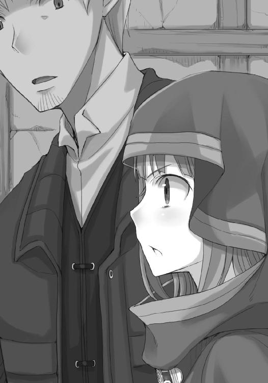

| 狼と香辛料 13 Side Colors III | |
| 支倉凍砂 | |
| KADOKAWA / アスキー・メディアワークス (2013) | |
本書（電子版）に掲載されているコンテンツ（ソフトウェア／プログラム／データ／情報を含む）の著作権およびその他の権利は、すべて株式会社アスキー・メディアワークスおよび正当な権利を有する第三者に帰属しています。
法律の定めがある場合または権利者の明示的な承諾がある場合を除き、これらのコンテンツを複製・転載、改変・編集、翻案・翻訳、放送・出版、公衆送信（送信可能化を含む）・再配信、販売・頒布、貸与等に使用することはできません。
町の規模は中の下でも、貿易の要になっているかどうかで滞在の楽しさは大きく変化する。
ここは近くに山や森があり、そこから流れる綺麗な川や肥沃な土の恩恵に与って、たっぷりの農産物にあふれていた。
作物がよく実ればよい値で売れ、よい値で作物が売れるとよい生活ができ、よい生活ができるといっそうよく作物を作ることができる。
そんな好循環の見本市のような町は、この冬の時期になってもなお様々な品であふれ、それを買い付けに来る商人たちや、旅の途上に寄って補給をする旅人たち、彼らを当て込んで芸を披露しに来る旅芸人や説教師などでごった返していた。
市の立つ町の中心部がそんな連中の熱気で大騒ぎならば、その周辺部は町の生活を支える者たちの喧騒に満ちている。
靴や服の仕立て。荷馬車の工房に両替商。旅人たちの必需品であるナイフや剣を打つ鍛冶屋だって大盛況だ。
右を見ても左を見ても人、人、人。
しかも、風の具合で漂ってくるのがうまそうな小麦パンの香りや魚の焼ける匂いとくれば、浮き足立ってくるのも仕方がない。冷たく乾燥した空気の中、まずいパンと酒だけで何日もすごし、昼も夜も硬い荷馬車の上で寝起きしてきたとなればなおさらだ。
露店の前を通るたびにねだるのももどかしいのか、御者台で隣に座るホロはさっきからずっとロレンスの服の袖を摑みっぱなしだった。
「兎......ナマズ......焼き栗......腸詰......」
言葉を覚えたての子供のように、目に入る食べ物を片っ端から呟いていく。
町の露店は活気に相応しい品揃えのよさで、ホロに金貨を一枚渡せば三日と経たずに使い果たしてしまうだろう。
道が込んでいるせいでよそ見をできないロレンスは、それでもホロの呟きのお陰で町にどんなものが置かれているかが大体わかってしまっていた。海から少し離れているせいか、果物類は少ないらしい。逆に肉の種類は実に豊富で、一際強く袖を引かれたと思ったら、通りがかった店の軒先で丸々と太った立派な豚の丸焼きを焼いている最中だった。
豚の丸焼きは豚の口から肛門まで鉄串を刺し、焚き火の上でぐるぐると回しながらその都度油を塗ってじっくり焼いていく手間のかかる逸品だ。鉄串を回しては油を塗る店主らしき男は、この寒いのに上半身裸になってなお汗をかいている。
その周りには指を咥えている子供たちや、景気のよいご馳走に足を止めて見物している旅人もいた。
「......一度でいいから、わっちもあんなもの食べてみたい......」
ロレンスが一緒に見ているのをこれ幸いと、ホロは哀れっぽくそんなことを呟いている。
しかし、ロレンスは体を戻し、咳払いをしてこう言った。
「俺の記憶が確かならば、お前には子豚の丸焼きを進呈したはずなんだがな」
ホロはそれを、手や口や髪の毛まで脂だらけにして一人で貪り食ってしまった。
よもや忘れたわけではあるまい。
ロレンスがそう思っていると、ホロはおもむろに御者台に座りなおしてこう言った。
「あんなものでは腹が満ちても一時のことじゃ」
「......だからってあれは食えないだろう」
へたをすれば豚はホロよりも重いかもしれない。
まさかそれを食べるならば真の姿を晒してでも、と言うつもりなのだろうか。
本末転倒もいいところだが、こちらを見たホロの顔は馬鹿にするような呆れ顔だった。
「わっちゃあそういうことを言っているのではありんせん」
「じゃあなんだ？」
ロレンスは尋ねるが、ホロがなにを言いたいのかよくわからない。
「わからんのかや？ 商人とは、相手の望むことを把握してこそのものではないのかや？」
呆れ顔に、ため息をつくや哀れみすらまぜてくる。
それは馬鹿だあほだとなじられるよりもよほど商人の誇りを傷つけてくる。
「ま、待て」
そこまで言われては黙っていられない。
豚。豚料理。子豚では満足できないもの。
さっきの言い草からすれば、肉の量ではない。
「ああ」
「うん？」
ようやく気がついたか、とホロが笑顔になって小首をかしげてくる。
「豚の皮が食べたりなかったのか？」
「......。う、む？」
「確かに子豚じゃちょっと少ないかもな。しかし、よく焼いた豚の皮か......あれは贅沢な食べ物だよな。ぱりぱりで、肉と一緒に食べるとじゅわりと脂が口の中に広がって、塩を多めに振るとなおうまくて......おい」
「ふぁ！」
とろん、とした目で話を聞いていたホロは、慌てて口元を拭ってそっぽを向く。
乾いたパンとかちかちの干し肉、それにニンニクや酢漬けのキャベツといった食生活のあとに聞くには罪深い話だ。
ただ、二度も三度も咳払いをしては、汚点を拭い去らんとばかりに口元を拭う様から、どうも当たりではなかったらしい。
しかも、フードの下のその顔は、非常に不満そうだ。
「なんだ、違ったのか？」
「全然違う。じゃが」
と、ホロはもう一度口元を拭って顎を引く。
「それはそれでうまそうじゃ......」
「豚の丸焼きを頼まないと食えないが、二人で頼んでも肉がもったいないからな。貴族様は皮だけ食べて肉は捨てるともいうが」
「ほう」
食べ物の話をするとホロはいつも真剣そのものだ。
ロレンスはつい笑ってしまって、「それで」と言葉を続けた。
「それで、結局なんだったんだ？ 子豚じゃ満足できないって」
「む？」
「豚の皮じゃないんだろう？ 腸詰か？ それとも、茹でた肝とか？ 俺はあまり好きじゃないんだが、肝臓とかよく見かけるな」
まさか生でそのまま食べたいとか言い出すのではないだろうなと一瞬不安に思ってしまう。
元が狼なのでさもありなんだが、豚の肝を生でくれ、などと店に言ったら異教徒と思われて教会に告発されるかもしれない。
しかし。
「たわけ」
ホロがだしぬけに口にした言葉は、全部を否定するそんなものだった。
「本当にぬしはたわけじゃな」
「飯の話で涎を垂らしている奴に言われたくないが......」
言った直後、腿をつねられる。
ロレンスに食べ物で釣られては、若干の後悔を見せるようなホロだ。
からかいすぎたかと反省していたら、唇を尖らせて前を睨むようにしていたホロは、不貞腐れてこう言った。
「いくらわっちでも腹そのものはそんなに大きくありんせん。子豚で十分じゃ」
それならば、なにを。さすがにそこまで聞き返せば、ホロに顔を引っ搔かれても文句は言えない。ホロが謎かけをする時は、必ずロレンスにも解くことができる。
そのことを改めて思い出してみれば、すんなりと問題を解くことができた。
すねたように前を向くホロの横顔を見ながら、ロレンスは降参するように静かに笑う。
「食べきれないくらいのご馳走を、二人で一緒にだって？」
ホロはちらりとこちらを見てから、一転してはにかむように笑う。
照れ笑いにも見えるそれは、ずっと腕の中で抱きしめていたくなるようなもの。
狼は、寂しがりなのだ。
「じゃから、な？」
今晩は食べきれないくらいのご馳走を？
笑うと少し牙が覗くホロの口。ロレンスは見てはいけないものを見たような気がして、少し慌てて前を向く。ホロの笑顔を消したくはないし、その提案はとても魅力的。
しかし、その貪欲さは商人の敵なのだ。
楽しい食事と楽しくない支払い。たまにはそのくらいの気前の良さを見せてやってもいいではないかという思いと、それが癖になれば大変なことになるという思い。
自分は卑しいのか？ いやいや商人として正しいはずだ。
そんなせめぎ合いに、ロレンスは手綱をぎりりと音を立てるくらいに握り締めてしまう。
そして、ふと気がついた。
隣にいるホロが、体を折って笑いを堪えていることに。
「......」
尻尾がばさばさと苦しそうに揺れている。
ロレンスが怒って前を向くと、ホロはついに吹き出して笑い出す。
騒がしい町の中、娘が一人御者台の上で笑っていたって誰も気にしない。
だから自分も気にしない。気にしてなどいない。
ロレンスは自分に言い聞かせて徹底的に無視。
ただ、そんな振る舞いそれ自体がホロを喜ばせるものであることはもちろんわかっている。
ロレンスの懊悩をひとしきり笑ったあと、ホロは口元ならぬ目元を拭ってから、こう言ったのだった。
「ごちそうさま」
「どういたしまして」
真顔で、答えてやった。
「え、部屋がない？」
一階がちょっとした軽食を出す食堂になっていて、夕暮れを前にしてすでに大賑わいだった。
嫌な予感はしたものの、宿の主は分厚い台帳を手に、申し訳なさそうに頭を搔くだけだ。
「ここしばらく人の出入りが激しくて。すみませんねえ......」
「ということは、他の宿も？」
「よそさんも同じでしょうなあ。こういう時くらいは組合の規則を緩めてくれればいいのにと思いますが......」
部屋に客を詰め込めば詰め込むほど儲かる宿屋には、大抵人数制限が設けられている。
部屋にたくさん詰め込みすぎた挙句、建物が倒壊したり危険な病が蔓延したりといったことが本当にある。それに犯罪者や占い師といった不埒な輩も紛れ込みやすくなるため、そのあたりの規制は特に厳しくなっている。
そして、組合員が組合に逆らうことは王に逆らうことと同じ。
宿の主は分厚い台帳を閉じて、申し訳程度にこんなことを言ってくる。
「お食事なら出せますが」
「また来ます」
挨拶代わりに無言でうなずかれたのは、向こうもこんなやり取りを何度も繰り返していて食傷気味だからだろう。騒いだところで部屋があくわけでもなく、ロレンスは荷馬車に戻り、ホロに向かって無言で首を横に振る。
旅にだいぶ慣れてきたホロは、さもありなん、とばかりにうなずいた。
しかし、フードの下では若干顔が強張り気味。
旅に慣れてきたからこそ、宿が取れず町の外で野宿、という可能性が脳裏をよぎるのだ。
それを避けるには、馬車を停められる場所を見つけて寝具を借りてくるほかない。馬屋、商会、教会くらいだろうか。
ただ、それも大きい町ならばいざ知らず、この規模の町では期待できるかどうか。
市場が閉まり、日が暮れてもなお馬車を停めて眠る場所を見つけられなければ、ホロが予想しているとおりいったん町を出なければならない。自分ひとりならばそれでも構わないのだが、ホロが一緒だと面倒なことになる。
この様子だと町の外で野宿しようと腹をくくる旅人も多そうだし、そうなると概ね酒盛りが始まってしまう。禁欲的に旅を続けてきた挙句に酒に酔った者たちが集まると、それはそれは厄介な連中の出来上がりだ。そこにホロのような娘がいればどうなるか、考えるだけでうんざりしてしまう。馬鹿騒ぎは元気な時にこそ面白いもの。旅の疲れがある時は弱い酒をゆっくりと飲んで、温かい食事を軽く取ってぐっすり眠るのが一番だ。
一縷の望みをかけて、宿が軒を連ねる道を歩いていく。
二軒目も三軒目も当たり前のように断られ、四軒目に至っては先客がちょうど断られていた。
荷馬車に戻ると、ホロはついに諦めたらしく、荷馬車の上で靴の紐を緩めたり腰帯を緩めたりしていた。
五軒目に行ったところで結果は同じだろう。
それならば、念のため、早めに馬車を停められる場所を探したほうがいい。
屋根があるのとないのとでは段違いになる。
手綱を引いて馬の向きを変え、そろそろ茜色に染まり始めた空の下、一日の最後の仕事に奔走する者たちの間を縫って進んでいく。こういう時、必ず帰る家のある彼らが腹が立つほど羨ましく、また一晩の宿すらない自分の身が惨めに思えてくる。
そんな胸中を見抜かれたのかどうか、ホロがわざとらしく身を寄せてきた。
だらしなくあちこち緩めてすっかりくつろぎの体勢だが、確かに隣にはホロがいる。
ロレンスがホロの頭をフード越しに撫でて、ホロがくすぐったそうに笑った。
旅の途中の何気ないひととき。まさしく、そんな折のことだった。
「来週あたりが食べ頃だってな」
ふと、荷馬車の横を歩く者たちの声が聞こえてきた。
道はごった返していて荷馬車も徒歩も変わらないので、彼らの言葉が聞くでもなく耳に入ってきた。顔や腕に白い粉をつけているところから、休憩中のパン職人たちだろうと推測できる。
どうやら、道沿いにある店の話題らしかった。
「ああ、オーム商会の若旦那が言ってたあれか。しかし、親方もよくあんな奴の仕事を受けるもんだ。俺たちの焼いたパンにあんなもの載せろだなんて馬鹿にしてやがるのか？」
「そう言うなって。破格の手間賃をくれるうえに最上級の小麦パンをわんさと買ってくれるんだからな。お前だってたまにはまじりっけなしの小麦でパンをこねたいだろう？」
「そりゃあ、そうだ......だがなあ......」
一人はよほど商会の若旦那の注文が嫌らしい。職人の中でももっとも誇り高いと噂されるのが彼らパン職人だから、きっと彼らの職業倫理にもとるような注文なのだろう。
職人になるには厳しい徒弟期間を経て、親方試験に合格しなければならない。粉の目方の量り方をはじめ、巻きパンなど難しい技術の必要なパンの作り方に習熟しなければならない。
そんな彼らだから仕事には格別の誇りを持って臨んでいるのだろう。
それにしても一体なにを載せて焼こうとしているのか。
ロレンスに寄りかかったままじっとしているホロも、その耳でしっかり二人の会話を聞いているのがよくわかる。
ロレンスは、彼らの視線の先、道に軒を連ねる建物に目を凝らした。
蠟燭屋、油屋、針屋、ボタン屋と並んでいる。
食べられそうなものを扱っているのは油屋くらいだろうが、よもや油の塊を載せるわけでもあるまい。
そう思っていたら、視界に入ったそれ。
薬屋。
パン職人と思しき彼らのうちの一人が、決定的な一言を放った。
「俺たちのパンはそのままが一番おいしいに決まってるんだ。あんなものを載せるのは間違っているはずだ。大体、そもそも値段が高すぎるんだよ。はちみつに漬け込んだら金にでも変わるっていうのか？ おかしな話だ！」
「はは。なんだお前、自分が食べられないから文句言っているだけかよ」
「ち、違えよ。興味なんかないね。桃のはちみつ漬けなんかに！」
ロレンスがひょいと視線を前に戻したのは、ホロの耳が針で突ついたようにぴんと張ったからだ。その勢いでフードに穴があいたってロレンスは驚かなかっただろう。
ホロはじっとしたまま動かない。
ただ、見上げた自制心というよりも、実際はその逆で動けないのだろう。
尻尾が、ローブの下で火をつけた藁のように苦しそうに動いている。見栄と理性と欲望とがせめぎ合って、とんでもない綱引きを演じているに違いない。
パン職人たちはその後もパンについての話題を続けながら、荷馬車より速く歩いていってしまう。ロレンスは彼らを見送ってから、隣のホロをちらりと横目で盗み見る。
このまま何事もなかったふりをしてしまおうか。
一瞬そんなことも考えてみたが、じっとしたままねだってこないホロは、ねだってこないがゆえに恐ろしい。
駆け引き上手だとすれば、まさしくここでその真価を発揮している。
相手がなにかを言ってくれば否定も誤魔化しもできる。
しかし、なにもなければ、手の施しようがない。
「こ、今晩は冷えそうだな」
ロレンスは苦し紛れに撒き餌を撒いてみたが、ホロは微動だにしない。
本気なのだ。
豚の皮の料理の話をしたあとのこと。せっかく町に来たのに寒空の下で毛布に包まりながらまた苦いパンとまずい酒で夜をすごすとなれば、ホロでなくたって必死になるだろう。
せめて食べ物くらいは。
それはロレンスもそうは思うが、桃のはちみつ漬けとなればとにかく値段が張る。
一玉でトレニー銀貨十枚？ 二十枚？
桃一つに馬鹿げた値段だとは思うが、払えないこともない、というのが本当のところ。
財布的にも、それで喜んでくれるだろうホロの笑顔的にも。
ホロの沈黙はいつものからかいやいたずらではない。
ロレンスは、結局、ホロを取ったのだった。
「......仕方ない。薬屋で体があったまりそうなものを買っておくか」
ホロはじっとしたまま動かない。
動かないが、耳と尻尾が子犬のように喜んでいたのだった。
薬屋は文字どおり薬と呼ばれるものも売っているが、実際は色々商っている。
町の中では靴屋は靴を、服屋は服を売るように、基本的に組合同士が各々の領分を定めてそれだけを扱って商いをする。だから、服屋は仕立てをしてはならないし、靴屋は靴の修繕をしてはならない。油屋はパンを売ってはならないし、魚屋は肉を売ってはならない。
この論理でいくと薬屋は薬しか売れないのだが、店に多彩な商品を並べればそれだけたくさんの客が来て色々買ってくれることになるのを、商人たちはよく知っている。
というわけで、彼らは知恵を絞って屁理屈をこねては様々な品を自分たちの領分に引き込んでしまったのだ。
その中でもっとも他の店と揉めるのが、他ならぬ香辛料。彼ら薬商は香辛料は汗が出たり熱が下がったりと様々な効果をもたらすので薬だと言い張っている。
そして、その論理の延長で、健康に良さそうなものも薬に違いない、ということではちみつも主に彼らが扱う商品だ。
はちみつを扱えるのは、他には蜜蠟を扱う蠟燭屋だけ。
金で買えるものならなんでも扱える行商人には理解できない縄張り争いだが、そのせいで薬屋には各種のはちみつ漬けがずらりと並んでいる。
スモモ、梨、木苺、蕪、人参、豚、牛、兎、羊、鯉、カマス、とすぐ思いつくだけでもこのくらいはある。
食べ物を長期間保存するには、塩に漬けるか酢に漬けるか氷漬けにするか、あるいははちみつに漬けるかしかない。長い冬の終わりがまだまだ見えないこの時期は、この手の保存食がもっとも高くなる時期だ。素っ気ない走り書きがされているだけの樽や瓶の中身には、どれもいい値段がついている。
そして、そんな商品が並ぶ中で、一際異彩を放つものがある。
店の一番奥、店主の真後ろに置かれた、胡椒やサフラン、それに砂糖の壺が置かれた横に鎮座する、飴色の瓶。
ホロの視線は、店に入るやそこに釘付けだった。

「いらっしゃい」
髭の店主の視線は、ロレンスからホロに。
ホロがなにに目を奪われているかはすぐにわかっただろうから、次に見るべきはその身なり。
伸びた眉毛が片方だけ少しつり上がったのは、娘のほうの身なりは良さそうだが、男のほうがそうでもない、と思ったからだろう。
買い物をしたとしてもさほど高い品ではない、と判断したのかどうか、店主は「なにをお探しで？」と気のないふうに聞いてくる。
「体が温まるものが欲しくて。生姜か......」
「生姜でしたら、そちらの棚に」
生姜に次ぐ「あるいは」という言葉はロレンスの喉の奥で立ち消えることに。その程度の品、勝手に買ってさっさと帰れ、ということだろう。ロレンスは言われたとおりの棚で生姜を吟味して、はちみつ漬けを買うことにした。安いが、することもない夜に毛布に包まりながら食べるにはいいものだ。
ただ、ホロがちらちらと視線を向けてくるのにも気がついている。
あんな話を聞いてからわざわざこんな場所に来たのだから、よもや期待を持たせるだけで終わるわけはあるまい？ と。
もちろんロレンスもそのつもりだ。
食べ物でホロの歓心を買うのはあまりにも安易に過ぎるし、ホロ自身もたまに嫌がる節がある。
しかし、それが桃のはちみつ漬けとなればまた話は別。
これまで何度か話題に上ったものの、結局買えたことはなかった。値段が高いということもあるし、単純に売っていないことのほうが多い。
だからだろう。ホロも今だけは食べ物で釣られる気をありありと漂わせている。
そわそわとするホロの横を通り過ぎ、店主に生姜のはちみつ漬けを幾らか小分けしてもらって、代金を支払うちょうどその時。
ロレンスはおもむろに交渉を切り出そうとした。
しかし。
「はい。十リュートね。毎度あり」
ロレンスは代金を支払って、無言で商品を受け取ってしまう。ホロが後ろできょとんとしている様が気配だけで察せられた。
目は、店主の向こうに置かれた飴色の瓶につけられた札の数字に釘付けになっている。
一玉一リュミオーネ。トレニー銀貨で三十五枚前後。
見間違いかと目をこすってみるが、確かにそう書かれている。黄金の桃とはよく言ったものだが、それにしたって高い。ロレンスがなにを見ているのか、たっぷりと間をあけて確認したあと、店主はわざとらしくこう言った。
「おや、お目が高い。今年の桃はとても甘いうえに身がしっかりとしていてね。はちみつもリューディンヒルド伯の御料地の森で取れた一級のはちみつだ。一玉一リュミオーネ。もう買い手が何人もいましてね。残るは三玉。いかがです？」
どうせ買えないだろうがね、と顔には書いてある。大きな商会や裕福な都市貴族とは無縁そうなこんな町で、桃のはちみつ漬けにこんな値段をつけるとは確かに大それたことに違いない。客相手の商売でこんなにも居丈高なのはその自信の表れだろう。
ただ、ロレンスも大きな町でそれなりの取引を乗り越えてきた自信がある。若い金のない行商人扱いをされ、少しむっとして財布に手を伸ばそうとしてしまう。
それがはたと止まったのは、わずかな見栄のために大金を使いたくないとか、そういったことではない。単純に、そこに貨幣が何枚入っているかを、神よりもよく知っているからだ。
ここで一リュミオーネも使うと、おそらくこの先旅が立ち行かなくなってしまう。財産を全て財布に詰め込んでおく馬鹿な商人はいないように、ロレンスも、実際に持ち歩いている金はさほどでもないのだ。
ホロの笑顔の前に、現実が立ちふさがる。
気がついたら、首を横に振っていた。
「はは。私には過ぎた買い物です」
「左様ですか？ まあ、気が変わったらいつでもどうぞ」
ロレンスが背を向けて店を出ると、ホロはおとなしくついてくる。非難の一言すらないのが余計に恐ろしい。
まるで暗闇の森の中、自分の足音と合わせてあとをつけてくる狼のようだ。
期待させておいて、結局買わなかった。
それはあの御者台の上で知らぬふりを決め込むよりもたちが悪い。
こちらから謝ればまだしも傷口が小さくすむだろうか。
そう思い、覚悟を決めて振り向いた。
「......」
言葉が出なかったのは、ホロが怒り狂っていたからではない。
その逆だった。
「......む？ どうしたかや？」
言葉に覇気はなく、目に力はない。
これで顔色が悪ければ病気を疑うところだ。
「い、いや......」
「そうかや。なら、早く乗ってくりゃれ。ぬしの席は奥じゃろう？」
「あ、ああ......」
ロレンスが言われるままに御者台に乗ると、ホロもすぐに乗ってきて、奥に詰めたロレンスの隣にちょこんと座る。
怒っている時はその華奢な体が何倍にも膨れ上がって見えるのなら、意気消沈している時はその逆だ。よっぽどというその言葉がぴったりなほど、桃のはちみつ漬けが食べたかったのだろう。
どこまで食い意地が張っているんだ、と笑うことなどできはしない。冷たく乾燥した空気の中を、まずいパンとまずい酒で乗りきってきたあとのこと。道に迷った王の一行に出した一杯のスープが、あふれんばかりの金銀財宝に変わった話など枚挙に暇がない。
ホロは桃のはちみつ漬けを心の底から楽しみにしていたに違いない。
しかも、放心しきったように遠い目をしているだけで、ロレンスのことをなじりもしない。
ホロがそうしないのは、桃のはちみつ漬けの高価さと、ロレンスの懐具合の両方を知っているからだ。
ロレンスが隣をもう一度見ると、ホロは荷馬車の揺れに合わせてゆらゆらと揺れている。茫然自失といった体で、おもむろに抱きしめたところで気づかないかもしれない。
ぽく、ぽく、と荷馬車は進む。
今晩はおそらく野宿になる。旅の間硬い荷馬車の上で我慢できるのは、町に着いたら柔らかいベッドとたっぷり重ねた毛布の下に潜り込めるという期待があるからに他ならない。
「......」
ロレンスは顎鬚を痛いくらいにつまんで、目を閉じる。
引き返して、財布の中身を全て薬屋の主人に叩きつけてくるべきだろうか。
しかし、そう考えなおしてみてもなおロレンスの手は手綱を動かさない。
一玉一リュミオーネは、いくらなんでも高すぎる。
それを買ったら旅が立ち行かなくなるという理由の他にも、物には相応の値段というものがあるはずだ、という思いもある。
究極の選択を前にしたガマガエルのように、ロレンスは脂汗を滲ませながら悩んでいた。
肩を落とした華奢なホロは、一日だって寒空の下の野宿に耐えられそうもない。そんなホロが笑顔と元気を取り戻すとしたら、桃のはちみつ漬けをおいしそうに食べるその瞬間しかあり得ない。
やはり、買おう。
ロレンスは決心して手綱を引っ張った。
「？」
ホロがそれに気がついて、顔を上げてロレンスのことを見る。
一玉一リュミオーネ。
高くはあるが、ホロと比べたらいかほどのものか。
しかも、残るは三玉だと言っていた。早く買いに行かなければなくなってしまうかもしれない。パンに載せて焼こうなどという酔狂をする商会の若旦那がいるくらい、景気のいい町なのだ。売り切れるということもあり得ない話ではない。
馬がいなないて足を止め、人ごみの中向きを変えようとした、その瞬間だった。
「景気の、いい？」
ロレンスの頭の中で、妙な引っ掛かりができた。
市場が賑わい、旅人が訪れ、全ての商いがうまく回っているように見えるこの町だが、町の裕福さは必ずその規模に比例する。
だとすれば、とロレンスは顎鬚を撫でながら考えを進めていく。かち、かち、と気持ちよいくらいになにかが嵌まっていく。
それが完全な形になった時、ロレンスは手綱を再度捌いて、向きを変えかけた荷馬車を元に戻す。
旅人らしい男が怒鳴ってくるが、ロレンスは商人の仮面で申し訳なさそうに謝っておく。
突然の様子の変化に、ホロがこちらを窺ってくる。
ロレンスは、短くこう言った。
「ちょっと、商会に」
「......ふむ。え？」
腑に落ちかけたそれは、疑問符となってホロの口から飛び出してきた。
しかし、ロレンスはそれに返事をせず荷馬車を進めていった。
桃のはちみつ漬けを買うには金さえあればよく、ないのなら稼げばいい。
目指すは商会。それも、あのパン職人たちが話していた、オーム商会とやらだった。
物は金がなければ売れはしない。
だとすれば、物が売れているところには金が流れ込んでいる。
そんな単純な発想でロレンスがやってきた商会の店構えは、どこにでもある普通の商会でさして大きな店でもなく、町の規模に見合ったものだった。
ただ、なんらかの理由で今は金が唸っているであろうことが、店の前に来てすぐにわかった。
空は茜色でそろそろ職人たちが帰途につき始めている時刻だというのに、そこは凄まじい喧騒だったのだから。
忙しく立ち回る者たちは疲れと活気で目をぎらぎらとさせ、帳簿を手に走り回っている商会の者だろう男は声ががらがらに嗄れていた。
そこで取り扱われているものは麦でも肉でも魚でもなく、毛皮でもなければ宝石でもなかった。
木。あるいは鉄。
それらを加工した、なんらかの部品や、それらを加工するための工具。
商会の荷揚げ場に文字どおり山積みにされているのはそんな品々だった。
「......なんじゃ、これは」
ホロが呟いた。
活気にあふれる商会はいくつも見てきたが、町の中でそこだけが異様にわいているとなれば話は別。他の商会はそろそろ店じまいかという頃合なのに、そこはここからいよいよ本番だ、とでも言わんばかりだった。
「資材、ということはどこかでなにかの建築の真っ最中だな。見張り台？ いや、これは......」
諸々の部品はそれだけではまったくなんの材料かわからない。それでも、奥のほうに特徴的なものがどんと置かれていたので、すぐ思い当たった。
そして、なるほど景気がよいはずだ、と思わず笑ってしまう。
商会は商品を右から左に流して儲ける場所なので、なにか大きな建築物の物資の調達を任された時が最大の稼ぎ時になる。職人に発注し、資材を揃え、自分のところには一晩と商品を置かず次々に利ざやを抜いていく。
若旦那とやらが、桃のはちみつ漬けを最高級の小麦パンに載せて焼け、とパン屋に注文する気持ちもわからなくはない。きっと、黄金のわく泉を掘り当てた気分に違いない。
我に返ったホロが訝しげにこちらを窺っているのがわかる。この商会が異様に景気がよいのはわかったが、それで一体どうするつもりなのだ、と。
ロレンスは、「さて」と呟いて荷馬車を降りると、そんなオーム商会の中に悠然と入っていく。
忙しすぎて、ロレンスのようなよそ者が入ったところで誰も気にも留めない。こういうところではさも当然のように振る舞うのが定石といえよう。
その上で、責任者と思しき者を見つけたら、おもむろにこう声をかけるのだ。
「こんにちは。人手が足りないからと言われて、荷馬車を引いてきたのですが」
その商人は、もう何日もろくに眠っていないような顔で、目だけがぎらついている。
手には毛羽立った羽根ペンと、熱気でよれよれになった帳簿を持っていて、右目が常に半分だけ閉じている。
ロレンスはじっと笑顔で相手の言葉を待つ。
時間が止まっていたかのような商会の男は、ふと我に返ったらしく、こう言った。
「あ、ああ。待ってたよ。すぐに荷を運んでくれ。荷馬車はどれだ？」
かすれて聞き取りづらい言葉だが、ロレンスは聞き返さずに、自分の荷馬車を指さした。
「なに、あれ？」
頓狂な声で聞き返されるが、慌てることはない。
ゆっくりと、こう言葉を返す。
「たくさん積めたほうがいいかと思いまして」
「うー、あんなんじゃ足が遅いだろうに......誰だ話を通した奴は......。まあいい、なんでもいいから、積めるだけ積んで出発してくれ。今すぐにだ」
忙しさは全ての感覚を麻痺させる。
こういう状況になると、誰がどんな仕事を請け負ってどこの誰が手伝いに来ているかなど、把握している者も把握しようとする者もいないことをロレンスはよく知っている。
だから、図々しくこう聞いてやる。
「えっと、急な話でしたのでよくわからなくて。誰から賃金を受け取れば？ 行き先は？」
男は、欠伸をしたら口に飛び込んできた蛙を、そのままうっかり飲み込んでしまったかのような顔をして、ごくりと言葉を飲み込んだ。
多分、罵倒か驚きの言葉だったのだろうが、せっかくの助っ人を逃してはならないと疲れきった頭で即座に考えたのだろう。荷揚げ場の隅に置かれた机の上で羊皮紙と格闘している男を指差して、投げ出すように言った。
「あの男に全て聞いてくれ」
ロレンスはそちらを見て、いかにも愚図な商人のように、頭を搔いて礼を言う。
「畏まりました」
男は、もうその瞬間にはロレンスのことなど忘れてしまったかのように、荷揚げ人足たちに指示を出す。
ロレンスは悠々と、仕事を貰いに机のほうに歩いていった。
北の大地にこんな昔話がある。
ある村の男たちは大地の彼方までを見通し、雲の向こうを飛ぶ鳥でさえ弓で射落とすことができた。その村の女たちはどんなに寒くても穏やかな笑顔を絶やすことがなく、その手は寝ている間でも糸を紡ぎ続けることができた。
そんな彼らの村に、ある日見知らぬ旅人が来て、彼らに一宿一飯の恩返しとして読み書きを教えた。彼らはそれまで文字を知らず、村の歴史や大事なことは全て口承されていたのだ。そのため、不慮の事故や病で誰かが死ぬと、失われるものがとても多かった。
彼らは旅人に感謝した。
そして、旅人が再び旅に出たあと、彼らは気がつくのだ。
男はもはや空の彼方まで見通すことができず、女は疲れやすくなって仕事を怠けるようになった。読み書きができない子供たちだけが、これまでどおりだった。
そんな昔話を思い出したのは、机の上で今にも眠りこけそうになりながら、必死に文字を追う若い商人の有様があまりにも気の毒だったから。
文字という足枷をはめられ、首輪までつけられている、という表現がしっくりくる。
もっとも、地獄の悪魔だってもう少し手加減するだろう。
ロレンスは、そんなことを思わざるを得なかった。
「失礼」
しかし、金儲けとなると話は別。
声をかけると、若い商人はのっそりと熊のようにこちらを向く。
「......はい？」
「あちらの責任者の方に、こちらで荷物の行き先と、賃金を聞くようにと言われたのですが」
噓はついていない。全てを語っていないだけ。
若い商人はロレンスの指差すほうを見て、それから再びロレンスの顔を見て、しばらくぼんやりとする。
手元のペンは止まらない。
ちょっとした曲芸だ。
「あ、ああー......はい、はい。ええーっと......」
話している間にも、次々に机の上には紙や羊皮紙が溜まっていく。
この商会を通過する資材の数々なのだろうが、ものすごい数だった。
「行き先は......ルワイ村の北......と言ってわかります？ 木札が立っているはずなので大丈夫だとは思いますが......そこに、あそこの荷を......積んでください。どれでもいいです。運べるだけ、運べるものから......」
喋っていて気が緩んだのか、声量が落ちるとともに瞼が閉じていく。
「手間賃は？」
ロレンスが肩を叩いて声をかけると、びくりと体をすくませて目を覚ます。
「手間賃？ ああ、そうでした......ええと......荷物に札がついてますので......持って帰ってきてください。概ね、札一枚でトレニー銀貨一枚を、それと......交換、です......」
そのままぐにゃぐにゃと口の中で何事かを呟いて、眠りこけてしまう。
きっと仕事をしないとまずいことになるのだろうが、起こすのも気の毒でそのまま放置してロレンスは歩き出す。
と、三歩出たところで、くるりと振り向いて突っ伏すように眠りこけている若い商人の肩を乱暴に揺すった。
この商会にやってきた、もう一つの目的を忘れていた。
「ちょっと、起きてください。ちょっと」
「は、ふぁい......」
「急な仕事だったので宿が取れなかったのですが、商会の部屋を借りられませんか？」
こういう場所では仮眠用の部屋が一つか二つあるはずだ。
ロレンスが尋ねると、眠気でうつらうつらしているのか、それともうなずいているのか判別の難しい仕草をしたあとに、商会の奥を指差してこんな返事が返ってきた。
「奥に......女将さんがいるので......言ってください......。食事も、多分、用意を......」
「ありがとうございます」
言葉を遮って、ロレンスは彼の肩を叩いてから側を離れた。
礼を込めてせっかく起こしてやったというのに、またむにゃむにゃと眠ってしまったが知ったことではない。
ロレンスはホロがぽつねんと一人いる荷馬車に駆け寄って、こう言った。
「宿が取れた」
フードの下の琥珀色の瞳には、ロレンスの荒っぽいやり方に対する賞賛と呆れが見て取れた。
それからすぐに視線をそらして、もう一度向けてくるのは無言の質問だ。
一体なにをするつもりなのか、と。
「仕事に行ってくる」
「仕事？ あ、ぬしは」
眉根に皺を寄せたホロはすぐに答えにたどり着くが、ロレンスはそれ以上相手をしない。
ホロを急かして荷馬車から降ろす。
「一晩中この騒ぎだろうから、ちょっとうるさいかもしれないが」
左手で馬の手綱を引っ張って荷馬車を荷揚げ場に入れる。
こんな騒ぎでは誰かに頼んでも連れていってくれないだろうが、入れてしまえば中の連中が勝手にやってくれる。案の定、空荷の荷馬車を見つけた荷揚げ人足が一斉に集まってきて、あっという間に荷積みを終えてしまう。
ホロは目を丸くしてそんな様を見つめていたが、その顔は徐々に不機嫌そうなものに変わっていく。
じっとこちらを見たうえで、黙ったまま動かない。
「少し小銭を稼いでくる。宿の確保も兼ねていたが......」
その手段がどんなものだったかは、とっくに披露ずみ。
このままいけば町の外で野宿するのが確実だっただろうから、疲れの出ているホロにはせめて一泊だけでも屋根のある場所にしてやりたかった。
「明日のことは明日考えよう。今日はとりあえず......あ、おい」
説明の途中で、ホロは勝手に商会の奥に入っていってしまう。
度胸も口もロレンスと対等かそれ以上なので、うまく部屋をあてがってもらえるだろう。
「やれやれ」
ロレンスがため息まじりに呟くと、件の女将と思しき女性に話しかけていたホロは、ちらりとこちらを振り向いた。
なにか言いたそうに口を動かしかけて、結局開かない。
多分、罵倒かなにかだったのだろう。
たわけ。
同じ言葉であっても、状況や相手の表情でその意味合いはまったく異なってくる。
ホロは女将に案内され、一人商会の奥に消える。
ホロのことをいつも意地っ張りだと笑ってしまうが、それはこっちも大して変わらないらしい。ホロのみならずロレンス自身も疲れているのに、桃のはちみつ漬けを買うために休みも入れず一仕事しようというのだから。
きっと、ロレンスが謝ればたやすく諦めたであろう桃のはちみつ漬けを買うために。
ロレンスは御者台に戻り、積荷をたっぷり載せた荷馬車を出発させた。倒錯した遊びをしているような、そんなくすぐったさがある。
いや、実際にそうなのだと思ったのは、荷揚げ場から通りに出た時のこと。商会の三階を仰ぎ見れば、ちょうど木窓を開けたホロが見えた。
ホロは早速口に生姜のはちみつ漬けを咥えながら、窓枠に頰杖をつく。
まったくたわけた雄でありんす、と今にも言いそうな顔つきだ。
思わず手を振りそうになってしまったが、手綱を握り締めて前を向く。
ロレンスは、荷馬車を駆ってルワイ村とやらに向かっていった。
ルワイ村の場所はすぐにわかるだろう、と言った商会の人間の言葉の意味が、町を出た直後にわかった。
臨時に立てられたと思しき木札には、殴り書きでルワイとある。
しかも、夜通し荷物を運ぶつもりなのか、道には要所要所でかがり火の用意があった。
多分、半分は道しるべとして、もう半分は積荷をそのまま別の場所に運んで転売しようとする不埒な輩がいないかと見張るためだろう。
いつの間にか空は真っ赤で、もうしばらくすると群青色になるはずだ。
すれ違う者たちは皆一様に疲労の色が濃く、空荷の荷馬車を駆る者は何人かが御者台の上で眠っていた。
後ろを振り向けば、同じ目的地に向かっているらしい者たちがちらほらと見える。
背中に荷物を背負っている者、馬に積んでいる者、荷馬車に載せている者。
服装も装備もまちまちで、この仕事が突然入った臨時のものであることを強調する。
オーム商会の荷揚げ場にあったあの諸々の資材は、十中八九水車を作るためのものだ。
この町の周辺は肥沃な土地のようだから、生産高が上がれば粉を挽くための水車が必要になるし、水車は粉を挽くためだけにあるのではない。豊かな土地には人が集まり、人が集まればたくさんのものが必要になる。鍛冶や染色、紡績の工程でたくさんの水車の力が必要になるのだ。
ただ、設置や維持には莫大な金のかかる設備であるし、水車が置かれる川は基本的に貴族の所有だ。必要だからといってすぐに設置ができるかというと、あちこちの利害と思惑が絡んで思うようにいかないことが多い。
商会のこの繁忙っぷりを見ると、おそらく水車の設置を巡ってあれこれ対立があり、日にちがずれにずれてようやく設置が決まったのだろう。
急いでいるのは、春になれば山のほうで雪が溶け、作業が大変になるからだ。
水量の少ないうちに護岸を完成して水車を設置し、春の雪解けの水で水車を存分に活用する、という目論見に違いない。
それが成功するかどうかはわからないが、かなり無茶な工程なのはよくわかる。
もっとも、そのお陰で何食わぬ顔で潜り込めたのだから、幸運を神に感謝するところだ。
それに、ホロのいない荷馬車も久しぶりな気がして、清々しいというのは言いすぎでも気楽な感じが新鮮だった。
以前は一人で荷馬車を駆るのが孤独で仕方がなかったのに、人は本当に勝手なものだと思う。
日が暮れ、遠くに狼の鳴き声を聞いて身を震わせるのも久しぶりのこと。
欠伸を嚙み殺しながら道の穴や沢に車輪を取られないようにと注意して進み、ついに月夜の空に赤い火の色が映り込むルワイ村に到着する。
村の北側は急な斜面に沿って森が広がり、そこを川が通っていた。
普段は日が暮れれば森の暗闇の中に沈んでしまうところなのだろうが、今は川沿いが切り開かれ、たくさんのかがり火が焚かれているせいで火の川のように浮かび上がっている。
あっちこっちで仮眠を取っている者がいるし、川沿いでは忙しく立ち働いている職人たちの姿も見える。
それは予想以上の大工事で、複数の水車をいっぺんに設置するつもりなのかもしれない。
意外に大儲けにつながりそうだ。
積荷を届けて賃金の代わりの木札を貰い、ロレンスは再びいそいそと荷馬車に乗り込んだ。
人の言葉は喋れないながら、馬がぐるっとこちらを振り向いて紫色の瞳で訴えかけてくる。
勘弁してくださいよ、と。
しかし、ロレンスは構わず手綱を引いて方向転換し、ぴしりと叩いて馬を進ませた。
これは往復すればするだけ儲かる単純な商いだ。
寸暇を惜しんでの行進に、久しく忘れていた昔を思い出す。
馬にすればいい迷惑だろうが、ロレンスは少し笑いながら毛布を肩に回してかき寄せる。
さて、桃のはちみつ漬けまでには何往復で足りるだろうか。
そんなことを考えながら、月明かりの下を進んでいったのだった。
ルワイ村に向かう道は大荒れだった。
オーム商会が大盤振る舞いの賃金を払ううえに、相当工期が短いらしく人集めの触れをわざわざ出したらしい。そのせいで、仕事を求めて山ほど人が群がってきたのだ。
だからだろう。道には日頃から荷を運んだりといった商人の姿よりも、一時の稼ぎを求めてやってきた者たちのほうが多く目についた。農夫や羊飼いから、大道芸人や旅の途中の修道士らしき者、前掛けをつけたままの職人たちまでいたのだから、ほとんど町の人間総出といっても大袈裟ではないかもしれない。多くの者が荷物を背負って、慣れない力仕事に勤しんでいる。
しかし、ルワイ村に続く道はそれほど険しいものではないといっても、諸々問題はあった。
途中の森に沿って進む場所では、行き交う人たちの気配にあてられたのか、さもなくば荷を運ぶ途中に歩きながら食べる糧食の匂いに釣られたのだろう、狼や野犬の鳴き声が頻繁に聞こえていたし、小川にかけられた貧弱な橋では渡る順番を巡って喧嘩も起こっていた。
村は村で運ばれてくる荷物の整理や、水車工事の話を聞きつけてやってくる遍歴職人たちの対応に追われている。それに加えて村にやってくる者たちの喉を潤すために、女子供はせっせと川から水を汲んできている。そのせいで、村の広場から川に向かってはこぼれた水で沼地のようになっていたくらいだ。
そんな村には、ちらほらと腰に剣を差して銀や鉄の胸当てをつけた兵がいた。おそらく水車の持ち主の貴族が仕事ぶりを監視しに来ているのだろう。
昼過ぎはまだしも皆体力があり、賃金の支払いが太っ腹なこともあって大した問題は起こらなかった。
しかし、それも日が傾き始め、人々が疲れの前に膝を屈し始めた頃、雲行きが怪しくなってきた。
オーム商会に戻っても、荷を積むための荷揚げ人足たちが音を上げているせいで搬出作業は遅々として進まない。挙句に、汗だくになって戻ってくる者たちの中には、途中の道で野犬が出たと告げる者もあった。
ロレンスも荷馬車で荷を運んだのは七度。かなり疲れが溜まってきている。
道は険しくなくとも、人が多ければそれだけ消耗する。
財布の中を軽く確認しても、今日の稼ぎはトレニー銀貨で七枚。
決して悪い稼ぎではなく、むしろ破格と言ってもいいほどだが、これだと桃のはちみつ漬けを買うにはあと三日か四日かかる。この先さらに人々が集まり、作業が滞るとなればもっと時間がかかってしまう。早く荷を積んでくれればもっと稼げるのに、とじれるのを抑えきれない。
ただ、そんなことを思っても人の作業量には限界がある。
ロレンスは一度深呼吸をして、荷馬車の上で少し思案する。急がば回れ、という言葉もあるくらいだ。今は休憩を入れ、人が少なくなるだろう夜になって荷を運べばもっと効率よく稼げるはず、という可能性に賭けることにした。
荷馬車を行列から外し、全ての馬が貸し出し中でがらんとした馬屋に、荷馬車ごと預けて商会の割り当てられた部屋に戻る。
ホロは一体どんなことを女将に言って部屋を借りたのか、追い出されることも相部屋になることもなかった。部屋にはホロが一人いて、窓際に置いた椅子に座りながら、差し込む茜色の日の光に晒されて膨らんだ尻尾を丁寧に櫛で梳いていた。
くたくたになったロレンスが短剣や財布を机の上に置いても視線一つ向けてこない。優雅なものだな、とつい非難めいたことを思ってしまうが、部屋にいろと言ったのはロレンス自身。思ったことを口にする愚は避けられたが、それにしたってもう少しなにかあってもいいのではないか。
ロレンスがそんなことを思いながら、疲れきった体をベッドに横たえようとした、その瞬間だった。
「あと二玉だそうじゃ」
なんのことか一瞬わからずにホロを見返すと、ホロはこちらなど見向きもしていなかった。
「一玉売れて、もう一玉も、遠からず売れそうじゃと」
桃のはちみつ漬けの話だと気がつくのにだいぶかかった。
疲れていたのもあるし、ねぎらいとまではいかなくても、楽しげな雑談を期待していた。
しかし、一昼夜手綱を握って戻ってくれば、いきなり催促するようなその言葉。
ロレンスはさすがにむっとしつつも、なるべく声に出ないようにこう聞き返す。
「わざわざ確認しに行ったのか」
わざわざ、というあたりに苛立ちが出てしまったけれども、そんなことを気にする余裕もないほどに疲れている。
ロレンスはベッドに腰掛け、靴を脱ぐために紐を解く。
「大丈夫なんじゃろうな？」
ホロの追加の言葉にぴたりと手が止まる。わずかの間をあけて、再び手を動かし靴を脱ぐ。
「一玉一リュミオーネ。おいそれと買えるような値段じゃないし、それを買えるような奴がごろごろしているとも思えない」
「そうかや。それなら安心じゃな」
素直な返事、と額面どおりに受け取ることもできただろうが、あまりにもわざとらしい言い方に疲れた神経が逆撫でされる。懇切丁寧にいかに一リュミオーネが大金かを説明してやろうかとも思ったが、少し冷静になって考えなおす。
ホロがこちらの神経を逆撫でする理由などないのだから、おそらく疲れているせいでそう感じるのだろう。
ロレンスは思いなおし、仮眠のために服のあちこちを緩めていた。
その様を、いつの間にか視線をこちらに向けていたホロがじっと見つめていたことに気がついたのは、もうあとは体を横たえるだけと気まで緩みきった、その瞬間だった。
「なにせ、ぬし様はさぞ稼いできたんじゃろうからな」
剝き出しの悪意に打たれ、ロレンスは逆に驚いてしまう。
「明日かや？ それとも今夜には稼ぎ終わるのかや？ 今まで七度も荷を受け取ったようじゃからな。稼ぎも相当なものに違いない」
ちくちくと嚙んでくる蟻には苛ついても、ぶすりと針を突き刺そうとする蜂には怯えてしまう。ロレンスは牙を剝いて唸りかねないホロを前に、先ほどまでの苛つきはどこへやら、ほとんど反射的に言い訳をしていた。
「い、いや、それが、銀貨で七枚で......」
「七枚？ ほう。それで、急ぐあまりに無理が出始めておるというのに、ぬしは一リュミオーネとやらを一体どのくらいで稼ぎ終わるのかや？」
部屋に戻ってきた時は、茜色の日差しのせいでふかふかになっていたと思った尻尾は、別の理由によって膨らんでいたのだと気がついた。
ただ、慌てるロレンスの頭の中身は真っ白だ。ホロがなにに怒っているのかわからない。
桃のはちみつ漬けがなくなりそうだから？ それとも、一刻も早く食べたいから？
自分が疲れているから思いつかないだとか、そんな瑣末な理由ではない。ロレンスは丸っきりホロが怒っている理由がわからずに、阿呆のように言葉に詰まってしまう。
ホロの目は茜色の日の中にあって、ほとんど真っ赤な兎の目。ホロの怒りに満ちた目がぎらぎらとこちらを睨み、返答次第では命まで危ない。そんな馬鹿げたことすら思ってしまった直後、ロレンスは妙なことに気がついた。ホロは今しがたなんと言った？ 今まで七度も荷を受け取ってと言ったが、どうしてそんな細かい回数までホロは知っているのだろうか？
積荷を荷馬車に積む、当の商会の者たちですら把握していないだろうそんな数字のことを。まるで、夜もすがらその窓際から外を眺めていたような、そんなことを。
ロレンスは、そこまで思ってから「あ」と声を上げた。ホロの耳がぴんと張り、尻尾が膝の上でむくりと膨らんだ。
ただし、もう怒りに満ちた目はこちらに向けられず、嫌味たっぷりの言葉も聞こえない。代わりにホロは目を細めてそっぽを向く。茜色の日の下ならば、なんでも塗りつぶしてくれると願うように。
「......お前」
と、ロレンスが口を開きかけた瞬間、文字どおり牙を剝いたホロがかっとこちらを振り向いた。
「いや、なんでもない」
ロレンスが口をつぐむと、ホロはしばしロレンスを睨んだあと、大きくため息をついて目を閉じる。それが再度開かれた時、ロレンスのことは見ずに、自分の手元だけを見つめていた。
ホロはロレンスのことを心配していたのもあるだろうが、それ以上に一人で宿に放っておかれて寂しかったのだろう。
孤独は死に至る病とまで言って、ロレンスのために本当に命まで懸けてくれたことがあるホロのことを、もちろん忘れていたわけでは決してない。
ホロのために疲れた体に鞭打っているのもそのためだが、それでも思っているだけでは伝わらない。それこそ、ホロがその窓から、ロレンスのことを見つめていたように。
ホロは、たとえ単調な仕事であっても、自分の疲れが癒えていなくとも、誘ってもらいたいのだ。放っておかれるよりは断然まし、と健気なことを思って。
ロレンスは咳払いをして間を稼ぐ。
ホロのことだから、あからさまに誘えば呆れるか怒るかするだろうし、もしかしたら哀れまれたと誇りを傷つけるかもしれない。
だから、上手にそれらしい理由を見つけなければならない。
ロレンスは商談の時よりもよほど頭を働かせて、ようやくそれらしい誘い文句を思いついた。ルワイ村に行く途中の、森の側を通る道のこと。
ロレンスはもう一度咳払いをして、ようやく口を開いた。
「村への道の途中に野犬が出る場所があってな。これから日が暮れると危ない。もし、お前さえよければ」
一度言葉を切って、ホロの反応を確かめる。
ホロは自分の手元を見つめたままだが、もう、その姿からあまり寂しそうな感じは窺えなかった。
「ぜひ、手を貸してもらいたいんだが」
ロレンスが、ぜひ、のところに力を込めて言った瞬間、ホロの耳は間違いなく動いていた。
しかし、ロレンスの言葉が終わってもすぐに返事をしないのは、多分賢狼としての誇りだろう。望みどおりの言葉を引き出したからといって、尻尾を振って返事をしては沽券に関わるとでも思っているのかもしれない。
ホロはもったいぶるようにため息をつき、自分の尻尾を手元に引き寄せて大きく一撫でする。
それからこちらに向けられたやや上目遣いの一瞥は、若干不機嫌な姫君のそれだった。
「どうしてもかや？」
そして、そんな言葉。
あくまでもロレンスが無理に誘ったという体にしたいらしい。
さもなくば、ひたすらロレンスを折れさせるという、憂さ晴らしなのだろう。
ずっと宿に放っておいたのはロレンスの失敗。
罪は、償わなければならない。
「ああ。頼めないか？」
殊更哀れみを込めて言うと、そっぽを向いていたホロの耳が二度動いた。
ホロが軽く手を口に当てて咳をしたのは、多分笑い出すのを堪えるためだろう。
「仕方がないの」
ため息まじりにホロは言って、ちらりと視線をこちらに向けてくる。
職人は、最後の締めをきちんとしてこそ一人前だと言われる。
ロレンスは、照れも馬鹿馬鹿しさも押し隠し、満面の笑みでこう応えた。
「ありがとう」
ついに、ホロが軽く吹き出した。
「んむ」
くすぐったそうに首をすくめているのは、本当に機嫌がいい時の証拠。
なんにせよ、ご機嫌斜めのホロが張った意地悪な綱渡りを無事終えた。
ロレンスは安堵のため息もそこそこに、最後に上着を脱いでベルトを外す。上着は椅子の背もたれにでも掛けておかなければならないが、もうそこまでする気力すらない。
なにより一刻も早く横になって眠りたい。
その心地よさまであと少し。
ロレンスの魂がすでに口から出かかっていたその瞬間、ホロが立ち上がってこう言った。
「ぬしよなにをしておる？」
目の前が真っ暗になったのか、はたまた実際に瞼が閉じていたのか区別がつかない。
「え？」
「ほれ、そうと決まれば休憩はおしまいじゃ。ぐずぐすしておる暇などありんせん」
目をこすり、必死に瞼を開けてホロのほうを見ると、フードのついた外套をいそいそと着込んでいる。
まさか、冗談だろう？
怒るよりももはや呆然として、支度するホロを見つめていた。
無邪気な笑顔が残酷に、嬉しそうに揺れる尻尾が恐ろしく見えた。ホロは支度を終えると、笑顔のままこちらに歩み寄ってくる。
冗談だ、冗談のはず。
ロレンスが祈るように胸中で呟いても、ホロの歩みは止まらなかった。
「ほれ、行こう」
そして、ロレンスの手を取るとベッドに腰掛けているロレンスを立たせようとする。
いかなロレンスであっても限界がある。
無意識のうちに振り払って、こう言っていた。
「勘弁してくれ、馬車馬じゃないんだっ」
そして、言ってしまってから、失言だったとホロを仰ぎ見る。
しかし、手を振り払われたままこちらを見るホロの顔は、いたずらっぽい笑顔だった。
「うん。そうじゃろうな」
怒っているのか、とロレンスは疑ってしまうが、ホロは「よっこいせ」と言って機嫌よさそうにロレンスの隣に腰を下ろした。
「くふ。なんじゃ、わっちが怒っているとでも？」
その嬉しそうな顔は、そもそもロレンスを怒らせるのが目的だったことを示している。
要するに、からかわれていたのだ。
「ぬしは今から仮眠して、人が少なくなった夜に効率よく稼ごうと、そう思っておるんじゃろ？」
長いこと窓から外を見ていれば、簡単に気がつくことだ。
ロレンスはうなずき、ならば寝かせてくれ、ともはや懇願を込めてホロを見る。
「だからぬしはたわけと言うんじゃ」
ひょいと顎鬚を摑まれて、軽く右に左にと揺らされる。
眠気と疲れで、そんなことをされてもむしろ心地よいくらいだ。
「ぬしが一晩中荷を運び、御者台で仮眠して、わっちと朝ごはんすら食べずに出発して、今の今まで働いて、銀貨が七枚だったかや」
「......ああ」
「わっちゃあ、一リュミオーネを銀貨で三十五枚くらいだったと記憶していんす。だとすると、ぬしが桃のはちみつ漬けを買うのにあとどのくらいかかるかや」
小僧でもできる計算だ。
ロレンスは、答える。
「四日」
「んむ。かかりすぎじゃな。しかも」
ロレンスが口を挟もうとしたのを見越して、ホロは言葉を強引につなぐ。
「荷揚げ場は大混雑。仕方ないから休憩して、夜にまた来よう、と考えておるのが自分だけ、と思うのはいかがなものじゃろう」
ホロは得意げな顔をして、フードの下で耳を揺らす。ここからなら、ホロの耳を使えば荷揚げ場の会話を全て聞くことができるはず。
「皆、同じことを考えているのか......」
「んむ。混雑はさほど変わらんじゃろうな。それに荷を積む連中とて寝なければならぬ。ぬしが疲労困憊、青息吐息、七転八倒してようやく五日。どうせ途中で無理が出るじゃろうから、七日か八日。そんなところじゃろ」
確かにそんな計算が正しいような気がする。
ロレンスがぼんやりうなずくと、ホロがひょいと手を伸ばして額を突ついてきた。
疲れきった体では、そんな不意打ちにすら対処できない。ばたりとベットの上に仰向けになって、視線だけをなんとかホロに向ける。
「どうしたらいい」
「一つは、桃のはちみつ漬けが売れないようにと祈る」
ロレンスは目を閉じ、半分寝ながら言葉を紡ぐ。
「もう一つは？」
「なにか別の商いを考える」
「......別の？」
積荷を運ぶだけで破格の賃金が受け取れるような商売を目の前にして、別の仕事をするなんて間抜けのすることだ。
ロレンスは暗闇の中でそう思ったのだが、意識が全て沈んでしまう直前、ホロの声が耳元でこう囁いた。
「わっちゃあここで立ち話を聞いた。どうせわっちのことを野犬除けに使うなら、もっといい儲け話がありんす。それはな......」
ロレンスは寝ながらにして、儲けの計算をしていたのだった。
馬屋で借りたのは二輪の荷馬車だ。
荷台は小さく、御者台も狭いが、その分軽いので高速で移動することができる。
次に、荒縄、毛布、籠、それからちょっとした板に、大量の小銭。
ロレンスが全てを準備してから一軒の建物の前に荷馬車を横づけすると、店主が待ち構えていたかのように中から飛び出してきた。
「いやあ、待ってたよ。借りられたかい」
「ええ、そちらのほうは？」
「準備万端さ。朝もやの晴れないうちに扉を叩くからまた旅人かと思ったがね、まさかこんな仕事を頼まれるとは思わなかった」
機嫌よく笑うのは宿屋の店主。
ただし、その前掛けは油やパンくずで汚れきっている。
「パン屋の奴にも昨晩飛び込みで依頼に行ったんだって？ 職人たちは教会より早く起きる羽目になって文句たらたらだったそうだよ」
言いながら大笑いし、店主は宿の中を振り返って手招きする。
出てきたのは、よたよたとしながらそれぞれ大きな鍋を持った二人の小僧。
「合わせて五十人分くらいにはなる。小僧を肉屋に走らせたら、どれだけ客を泊めたんだと心配されたと言っていたよ」
「急なお願いだったのに、本当にありがとうございました」
「なあに。宿は組合の規則のせいで儲けの限度が決まっているからね。臨時収入が得られるならお安い御用さ」
狭い荷台に二人がかりで詰め込んで、粗皮で包んで保温する。中身はたっぷりニンニクをきかして焼いた羊肉。脂の弾ける音がまだ聞こえていた。
次に運ばれてきたのはこれもまた大きな籠で、中には切れ込みの入ったパンがある。
そして間を置かず積み込まれた樽が二つ。中身は良くも悪くもないぶどう酒だ。
二輪の荷馬車だともうこれでぎゅうぎゅう詰め。ロレンスは店主に手伝ってもらいながら、荒縄でぐるぐる巻きにして固定する。荷馬が後ろを振り向いたのは、多分偶然ではないだろう。
これを運ぶんですか？ と口が利けたなら言ったに違いない。
「しかし、金を受け取ってここまで準備しておいてなんなんだが」
と、料理の代金の残額を数え終わってから、おもむろに店主が言う。
臨時収入の時にはいつもそうしているのか、小僧たちは磨り減った貨幣を幾ばくか貰い、嬉しそうに笑いながら宿の中に戻っていった。
「本当に大丈夫なのかい？ ルワイ村に続く道は森の側を通るだろう？」
「その森というのは......狼や野犬の出るという？」
「そうそう。オーム商会がルワイ村に資材を運ぶために慌てて切り開いた道さ。あそこにいるのは町で増えて外に出た犬ばかりだがね。その分、人を恐れないから厄介だ。そこを、こんなにいい匂いのするものを持っていくのは正直危険すぎると思うんだ。他にもあなたと同じようなことを考えた人がいただろうけどね、あそこを通るのが危険すぎて諦めたはずだ」
ホロがあの部屋で聞いたという立ち話。
もしも野犬をどうにかできるのなら、飯を作って、水も満足に用意できないルワイ村で売り捌けるのに。
「はは。大丈夫ですよ」
ロレンスは笑って応えて、二輪馬車の荷台に目を向けた。
そこではくくりつけられた積荷の上に、板を置く者がいる。
小柄で、華奢で、ふとした拍子に巻きスカートの下から腰帯かなにかの毛皮がちらりと覗く娘だ。板を固定し終わると、娘はその上にちょこんと座って満足げにうなずいている。
そして、ロレンスの視線に気がつくや、店主に向けてにこりと微笑んだ。
「海の悪魔や災いに対抗して、船の舳先に女神を乗せるようにね。この娘がいますから」
「ほほう......いや、しかし、犬除けに？」
店主は訝しげにするが、ロレンスが自信ありげにうなずくので、特になんとも言わなかった。
宿で主人をやっていれば、色々な地方の色々な験の担ぎ方というものを目の当たりにする。
蛇や蛙にお供え物をしないだけましなのかもしれない。
なにより、ロレンスからは臨時収入という立派なお供え物をすでに受け取ったあとなのだから、主人としてはとやかく言う理由はどこにもない。
「神のご加護を」
最後にそうとだけ言って、荷馬車から二歩離れた。
「ありがとうございます。あ、そうそう」
「はい？」
ロレンスは荷馬車に飛び乗って、御者台から声をかける。
二輪の馬車はさして珍しくもないが、積荷の上に少女が楽しげに腰掛けているとなると話は別だ。行き交う人々は物珍しそうにこちらを見て、道を駆ける子供たちはお祭りかと無邪気にホロに手を振っていた。
「もしかしたら、夜にまた同じ注文をしに来るかもしれません」
店主はひゅっと口をすぼめて、それからにかりと歯を見せて笑った。
「うちの宿は満員御礼。人手ならたくさんある。組合法は、客を手伝わせることまで規制はしていないからね」
そう言って、大きく笑う。
「では」
「おお、行ってらっしゃい。よい旅を」
ごとり、と荷馬車は動き、ゆっくりと進み出す。
朝の混雑する町の中を行く間は、馬を止めたり向きを変えたりする必要があり、二つしか車輪がないせいで荷台の上は大変なことになっていた。
その都度ホロはロレンスの真後ろで間抜けな声を出しながら必死に落ちまいとしていたが、やがて荷馬車は町の外れにたどり着く。
二輪の馬車が本領を発揮する、外の世界だ。
「さて、心の準備はよろしいか」
ロレンスの言葉に、板の上に前のめりになるように座ったホロが、ロレンスの首に両腕を回しながらうなずいた。
「わっちのほうが速いんじゃ。馬の速さくらいなんともありんせん」
「だが、それは自分の足で走った時のことだろう？」
いつもはロレンスがホロにしがみつく格好だった。
商いだって、同じ金額でも他人の金を使ってやる商売というものは緊張感が違う。
ホロは、ぐいと腕に力を込めて、ロレンスの肩に顎を載せる。
「なら、しっかりと摑まっておかんとな。いつもぬしがするように。必死に、泣くのをこらえながら」
「泣いてはいないだろ......」
「くふっくっく」
意地悪そうに笑うホロの吐息がくすぐったい。
ロレンスは、やれやれとため息をつく。
そして、こう言った。
「だが、泣いても止めないからな」
「そんなわけ──」
と、そのあとに続くホロの言葉は、手綱でぴしりと馬の尻を叩く音でかき消された。
馬は走り出し、二つの車輪が回転する。
ホロが泣いたか泣かなかったかは、多分この先ずっと喧嘩の種になるだろう。
道程は爽快の一言に尽きた。
二輪の荷馬車は荷を積める量が極端に少ないし、四輪のものよりも振動がひどい。
その代わり、その速度だけは素晴らしい。
ロレンスも滅多に使わないのだが、料理を温かいうちに運びたいような時にはうってつけのものといえる。がたがたと揺れる御者台の上で手綱を握っていると、流れるような景色そのものを操っているように思えてくる。
最初のうちは怯えてしがみついていたホロも、あっという間に慣れてしまったらしい。
件の森に差し掛かる頃にはロレンスの肩に手を置くだけで、積荷の上に立って風を目一杯体に受けて大笑いしていた。
道は野犬が出るという森の側なだけあって、道行く者たちは総じてうつむきがちに、中には抜き身の剣を晒している者までいた。それが二輪馬車の荷台の上に立ち、楽しげにしている娘を見れば犬ごときに怯えている自分が馬鹿らしく思えてくるのだろう。
すれ違う者たちはぱっと顔を輝かせ、こちらに向かって大きく手を振ってくる。ホロはそれに一々手を振り返しているようで、荷台から落ちそうになったのも一度や二度ではない。
その都度ロレンスの首を絞めかねないほどにすがりついてくるが、けたけたと笑うホロに注意する気も起きてこない。
こんなにも陽気な狼なのだから、部屋に置き去りにされればそれは怒るというものだ。
途中など、森の中から遠吠えが聞こえ、道を行く者たちが一斉に森のほうを見て足を止めた。
その瞬間にホロが待っていましたとばかりに遠吠えを披露して、今度は全員がぎょっとこちらを見る。
そして、自分たちの臆病さ加減に気がつくのだ。
荷台の上で楽しそうに遠吠えするホロに合わせて、一本取られたとばかりに行き交う者たちまでも楽しそうに吼えていた。
一人荷馬車に座っていては絶対に味わえない楽しさを経て、ルワイ村に到着する。
荷台に水車の資材を載せる代わりに、樽や毛布で包まれた鍋の上に少女を乗せている荷馬車を見て、村にいた面々は揃って不思議そうな顔をしていた。ロレンスはそんな視線の中で悠々と荷馬車を停め、ぱったぱったと尻尾が音を立てていてもおかしくないくらいに機嫌の良さそうなホロを、荷台から抱きかかえるようにして下ろす。ホロに商いの準備をさせている最中に、ロレンスは村の責任者を探し出して交渉する。最後には数枚の銀貨を握らせて、村で食べ物を売る許可を得た。元より川から水を汲むことすらが間に合わないくらいに忙しいのだ。
ロレンスとホロがパンに肉を挟み売り出すや否や、森の側の道が怖いせいで食べ物を持たずにやってきた商人たちのみならず、村人たちもこぞって集まってきた。
「ほれ、そこ！ 押すでない！ きちんと並びんす！」
薄く切ってある肉をさらに二つに切り、パンに挟んで売る。ただそれだけのことなのに、愛想を見せている暇もないくらいに忙しい。原因は、強気の値段でも売れるだろうと思って持ってきたぶどう酒だった。商品を二つにすると手間は単純に倍ではなく、それ以上のものになる。過去に一度か二度似たような商売をしたことがあったが、すっかりそのことを忘れていた。
それでもなんとか半分くらいは捌いた頃、ひょいと後ろからやってきた遍歴職人と思しき男にこんなことを言われた。
「仲間の連中も腹を空かしたまま仕事をしているんだがね......」
元が麦に宿る狼だからか、殊更飯に関することには敏感だ。
ホロはロレンスの顔を見て、そっちにも飯を運ぶべきだと無言で主張する。
肉の残りは大鍋に一つ。積荷を積んだ者たちは次から次へと村にやってくるから、じっとしていても遠からず売り切ることができる。
ロレンスは商人だから、売れさえすればなんでもいい。わざわざ場所を変えてまでやることはなさそうに思えたのだが......と思ってふと考えを変える。
村と商会を行ったり来たりする者たちの間には、自分たちの商売の話が行き渡るはず。それなら、さらに販路を広げるために職人たちにも少し飯を売っておいたほうがいい。
ロレンスが黙考していると、ホロに軽く足を踏まれて我に返る。
「ずる賢い顔になっていんす」
「俺は商人だからな。よし」
と、ロレンスは手元にあるパンに肉を挟んで客に渡し終えると、鍋にふたをして職人を振り向いた。
「二十人分あるかないかですが、よろしいですか」
川沿いで働く職人たちは、飢えた狼に近いものがあった。
工事を請け負ったオーム商会が金に糸目をつけず職人を集めたものの、彼らの食事や寝床を手配するまでには至らず、なんとか村人たちの好意で晩飯にだけはありつけているという有様だった。
しかも、工事は期限を切っての出来高払いだから、食事を取りにわざわざ村まで行く時間すらが惜しいらしい。ロレンスたちの存在には気がついても、こちらを無念そうに睨むだけですぐ視線を手元に戻してしまう。水車小屋の中で軸を作ったり内装をしたりしている者たちなどは顔すら見せられない。
酒の詰まった樽を担いだロレンスと、女たちが荷物を引くための小さな荷車に鍋と籠を載せて引いていたホロは、顔を見合わせてしまう。
結局、歩き売りをすることになった。
「なんだい、これっぽっちかい！ 全然足りないよ！」
パンを売る相手全てがそう言うが、そんな文句も笑顔をつけてだ。
屋根のある場所できちんと給金を貰って仕事をする町の職人ならいざ知らず、どの遍歴職人たちももっと劣悪な条件で働いたことがあると自慢げに言っていた。
なので、誰も彼もが腹を空かせているはずなのに、もっと肉とパンを寄越せという者は誰もいなかった。
それよりも、なるべく多くの奴らに飯を回してやってくれと言われた。一人で大きな水車を造るのは不可能だから、誰一人に倒れられても困るのがその理由だという。ホロも麦畑というたくさんの人間が働く場所でその営みを見つめていたせいか、話に共感しているらしかった。
単なる愛想とは違い、楽しそうに職人たちと軽口を交わすホロ。柄杓一杯幾らでぶどう酒を売っていたのだが、若干多めに注いでいたのに気がつかないロレンスではない。
ただ、もちろん黙っておいたのだが。
「パン二つでいいですか！」
そんな大声は、すでに水車が取り付けられている水車小屋の中へ。
麦を挽いているわけでもないのに粉っぽいのは、今まさに木を削っている真っ最中だからだ。
ホロは何度もくしゃみをして、結局小屋の外で待つことに。鼻が良いのでその分敏感なのかもしれない。
ロレンスはパンを二人分作って、急傾斜の細い階段を上っていく。
ぎし、ぎし、と不安げな音を立てるそれを上がっていくと、天井との隙間にちょっとした空間があった。そこでは二人の職人が体中を木屑だらけにしながら、軸の嚙み合わせの調整のためにやすりとのこぎりを持って格闘中だった。
「お持ちしましたよ！」
水車の音というのは意外に大きい。しかも小屋の中では木の軋んだり回転したりする音も加わってなおさらだ。
ロレンスが大声で叫ぶと二人の職人がぱっとこちらを振り向いて、ものすごい勢いで這い寄ってくる。
危うく階段から落とされるところだったとそのあとホロに言ったら、けたけたと笑われた。
もう少し心配してもらいたいものだとため息をついた直後、ホロはおもむろに頰についていた木屑を払って微笑んでくる。
回って、持ち上げて、落としてまた持ち上げる。
水車と杵のようなホロの振る舞いに、ロレンスはあっさりと粉々だった。
「さて、概ね回ったかな」
「と、思いんす。肉とパンを半分にしてなんとか行き渡った感じじゃな」
酒樽と鍋を載せた荷車を引くホロの胸元では、職人の一人から貰ったらしい兎の形に削られた木片が揺れている。
「すぐに村に引き返して注文を入れて、明日の昼までに今日の倍は持ってきたいな」
「んむ。じゃが、結局儲けはいくらになったんじゃ？」
「ええーっと、ちょっと待てよ......」
指折り数えてあれこれの経費を差し引いて、出てきた数字は思いのほか低い。
「トレニー銀貨換算で四枚がいいところかな」
「四枚？ あれだけ売ってかや？」
確かに財布は小銭でぱんぱんだが、質の悪い小銭は何枚あっても所詮小銭だ。
「欲に目が眩んだ商人たち相手ならもっとふんだくれたんだが、職人たちからそんなに取れないだろう？ だから、そんなもんだ」
職人相手にも飯を売ろう、と言い出したのはホロだから、そう言われてぐっと顎を引く。
もっとも、人に感謝される商いは金銭以外に得るものもとても大きい。
利益率が低くとも、多少危険が大きくとも、孤立した村を行商路からなかなか外せないのは、そこに村人たちの必需品を届けた時のことが忘れられないからだ。
ロレンスはホロの頭に手を置いて、ちょっと乱暴に撫でてやった。
「ま、明日は倍の量を持ってくれば儲けは倍。事前に言っておけば夜もここに飯を持ってこれるだろうから、そうすればさらに倍。桃のはちみつ漬けなんてあっという間だろうさ」
ロレンスの言葉にホロはうなずき、うなずいた拍子に腹がぐうと鳴る。
すると、手の下でホロの耳がびっくりしたように動き、ロレンスはくすぐったくて手を離してしまう。聞かなかったふりも、気づかなかったふりも無理なので、おとなしく笑ってやることにした。
ホロは唇を尖らせてロレンスの腕を叩こうとする。
叩こうとするが、その拍子にうまい具合にロレンスの腹も鳴った。
ずっとパンや肉と格闘していたので、落ち着いてようやく腹が減ってきたらしい。ロレンスはホロと目が合って、再度笑ってやるとホロの怒った表情も一転する。
そして、それからロレンスはふと辺りを見回して、荷車に手を伸ばした。
「どうしたかや？」
「ん、なに」
と、ふたのされた鍋と籠を開けると、底のほうにへばりついていた一切れの肉に、つぶれかけたパンが一つ入っていた。
「残しておいたんだよ。帰り道にでも食おうと思って」
売れるものはなんでも売って、腹が減ったら目にした食えそうなものを全て口にして、なんとか飢えをしのいでいたこともあった。売れる商品を取っておいて、あとで食べようなどと考えたこともない。
ロレンスが脂まみれのナイフで肉を切っていると、ホロはわっさわっさと尻尾を揺らしていた。
「しかし、ぬしよ」
「なんだ？」
「ぬしはこう、肝心なところがちょっと抜けていんす」
安い羊肉なので筋が多い。切るのにちょっと手間取って、ようやくホロのほうを見る。
「肝心なところ？」
「んむ。どうせ最後にこんな趣向を見せるなら、もっとよい肉が食べたかった。この肉は、いまいちじゃった」
昼食も食べずに頑張ってくれた、と思うのはさすがにホロを信頼しすぎだったようだ。
もっとも、隙を見てはこそこそと肉をつまみ食いしているホロのほうが、それらしいといえばそれらしい。
ロレンスはため息をついて、「気がつきませんで」と苦笑いしながら言っておく。
パンを二つに割り、それぞれの間に肉を挟み、ちょっと迷ってから大きいほうをホロに渡す。
その尻尾は子犬のように正直だが、口もまた正直だ。
「それに、職人連中の言い分もよーくわかりんす。こんなのでは足りんせん」
「文句ばかり言うな。俺が駆け出しの頃は、木の芽や食い終わった木の実の種なんかで飢えをしのいでたんだぞ」
ばくり、と豪快にパンにかぶりついたホロは、視線だけきょろりとこちらに向け、肉ごと嚙みちぎるとむっくむっくと咀嚼する。
ロレンスはナイフをしまい、鍋と籠にふたをし、自分の分のパンを手に取って、再び荷車を引いて歩き出した。
「......むぐ。ぬしは年寄りくさい説教ばかりじゃな」
ようやくパンを飲み込んだホロは、言うに事欠いてそんな言葉を向けてくる。
御歳数百歳の賢狼様に言われてはおしまいだ。
「よりうまいものを、より多く食べたいと思うのは自然の摂理じゃ。木がより大きく葉を広げて、より高く伸びていくように」
詭弁もホロが言えばなんとなくそれっぽく聞こえるからずるい。
ただ、一口目で一気に半分食べたくせに、意地汚いホロはもう一口で食べてしまうのが惜しくなったのか、ほんの少しだけパンをかじっていた。
そんな子供みたいな様子を見ていたら、ロレンスは思わずこう言っていた。
「そんなに腹減ってたのか」
言葉だけを向けていたらホロに怒った目で睨まれたかもしれない。
それが疑わしげな目を向けられたのは、言葉と共にパンを差し出していたからだ。
「持てる物を分け与えよ、と神は仰せだからな」
ホロはしばらくじっとこちらを見つめたあと、結局自分の分はひょいと口に放り込んでしまう。
ロレンスの手からは、その数瞬後にパンが消えていた。
「ぬしも......むぐ、たまには、雄らしいことをして......んぐ。くれる」
一刻でも早く新しいパンを食べたいのか、食べながら喋るホロの様子を見ていればそれだけでお腹一杯になる。
昔の旅人たちの食事に関する古い格言を思い出し、ロレンスはなるほどなと笑っていた。
「じゃが、本当にいいのかや？」
と、両手でパンを摑みながら、ホロは一応そう聞いてくる。
なにが起こってもパンだけは手放すまい、という決意が見て取れそうな姿だが、聞いてくれたのだから、応えるしかない。
頭の中で、その格言と一昨日ホロの言っていた言葉がつながったのは、ロレンスが答えようとした、その瞬間だった。
「ああ、いいよ」
「んむ。そうかや、なら──」
「俺は、十分食べたからな」
口を目一杯大きく開けていたホロは、そのままの姿勢できょろりと目だけ向けてくる。
「どうした？」
ロレンスが尋ねると、ホロは動揺したように視線をきょろきょろとさせ、それから不機嫌そうにこちらを睨む。
「なんじゃ、ぬしも食っておったのかや。珍しく気前のよいところを見せてくれたと思っておったのに......」
ぶつぶつと言うホロに、ロレンスはこう言葉を返していた。
「お前の言っていたことは、本当はこういう時に使うんじゃないのか」
「......う、む？ わっちが？ なにかや」
謎かけめいたことを言うのはいつもホロ。それでホロは戸惑うロレンスを見て、そんなこともわからないのかと小突き回しては喜んでいる。
ロレンスはそれを意地悪で悪趣味だと思っていたものの、いざこちらがそれをやってみると、ホロが楽しむ理由もよくわかる。かぶりつこうとしていた口を閉じ、ホロは手元のパンとロレンスの顔を見比べて、「？」と首をかしげていた。
本当はそんなホロを肴に酒を飲めるのが一番いいのだろうが、きっとそのあとの酔い覚ましの水には毒が入っている。
ロレンスは、よい頃合で、旅人たちの古い言葉を口にした。
「うまいものを食いたければ倍の金を。もっと満足したければ倍の量を。では、さらに喜びを倍にするにはどうすればいいか？」
ホロが豚の丸焼きを見てロレンスに向けた謎かけ。
ロレンスは、笑って言葉を続けていた。
「共に食べる相手を増やせばいい。お前がうまそうにパンを食べる姿を見ていたらな、十分腹一杯だ」
ロレンスが笑うと、ホロがうつむきがちになるのは、ちょっとした自己嫌悪かもしれない。もちろんロレンスにホロを責めるつもりはないし、本当にホロがうまそうにパンを食べてくれるのでそれを見ているだけでいい。
だから、ロレンスは気にしないで食べてくれと言う代わりに、ホロの頭をからかうように撫でようとした。
手が払われて、逆にホロの手が伸びてきた。
「そんなこと言われて、全部食べられると思っておるのかや」
差し出された手には、ちぎったパン。
きちんと等分されておらず、それどころか必死に妥協して少しだけちぎって差し出した、というところがなんともホロらしい。
そこまでパンを食べたいなら別に構わないのに。
ロレンスがそう言おうとした瞬間、ホロがからかうようにこう言った。
「ぬしばかりにうまいものを食わすのは癪じゃからな」
ロレンスは今しがた、気にしないで食べてくれと言う代わりにホロの頭を撫でようとした。
ホロもまた、同じことをしてきたのだ。
「それとも、ぬしは自分さえよければいいのかや？」
賢狼の名は、伊達ではない。
これを断れば、自分勝手なのはロレンスだ。
ありがたく、ホロが断腸の思いでちぎってくれたのだろうパンを受け取って、礼を言った。
「ありがとう」
「んむ」
ホロはちょっと偉そうに胸を張りながらうなずいて、馬鹿馬鹿しいとばかりに笑い出すとパンにかぶりつく。
ロレンスも貰ったパンを口に放り込み、手についたパン屑をズボンで軽く払う。
それを待っていたかのように、ホロの手がロレンスの手を摑む。
驚いたが、ホロのほうを見るような愚は冒さない。
無言で笑って、こちらからも握り返す。
からからと荷車を引く音だけが響く、穏やかな冬の午後のことだった。
終わり
旅の途中に立ち寄る町や村は、つかの間の憩いの場と共に旅の必需品の補給場所にもなる。
食料、燃料は言うに及ばず、荷馬車の修理や衣服の修繕、道や治安の状況といった情報も集めなければならない。
人が集まればそれだけたくさんのものが集まるわけで、やらなければならないことは盛りだくさんだ。
しかも、旅の伴侶がわがままなお姫様もかくや、といった具合になるとなおさらになる。
寒い時期の野宿には絶対に欠かせない燃料を買いに来た時点で、連れの眉根には皺が寄っていた。
「......ぬしの金で買うんじゃ。ぬしが判断してくりゃれ」
語尾を上げる疑問形だと、つい騙されてしまいがちな可愛げがあるというのに、投げやりで言い捨てるような言い方だとここまで印象が変わるのか。
そんな驚きすら覚えかねないが、旅の連れ、ホロの真意が言葉とはまったく裏腹なのは疑うべくもなかった。
「そんなに嫌か？」
「別に」
短く言うホロはそっぽを向いて。頭に三角巾を巻き、肩にはケープ、首に子狐の襟巻きをつけ、手には鹿の革で作った手袋を嵌めているその様は、どこからどうみても町娘と呼ぶに相応しい。それも三角巾の下から背中にかけて伸びているのが、貴族にだっておいそれとはないだろうというような綺麗な亜麻色の髪の毛となれば、すれ違う十人が十人とも振り向くような美しさだ。
齢十余という最も可憐に見える時期、と詩人ならば言いかねないが、ロレンスは事の真実を知っている。
ホロは町娘でもないし、齢十余の少女でもないし、その実、人ですらない。三角巾を取ればその下には獣の耳が、腰に巻いたローブの下には見事な尻尾がある。
麦に宿り、その豊作凶作を司り、昔は人々に神と呼ばれていたこともあった存在で、御歳数百歳になる巨大な狼こそが真の姿であった。
ヨイツの賢狼ホロ。
ホロは事あるごとに胸を張ってそんな二つ名を自慢するが、ロレンスは時折ため息をつきたくなる。
賢狼様とお呼びするには、若干心に狭いところがあったからだ。
「次の町までは大した距離もないし、多分そんなに冷え込むこともない。一日、二日なら冷たい飯でも我慢できるだろう？ だから」
「だから、ぬしが決めてくりゃれ、と言っておる」
「......」
ロレンスとホロが立っているのは、旅人が夜に暖や灯りを取るための燃料を売る店だ。
店先に積み上げられている大量の薪は、旅人のみならず色々な人が買っていくし、その隣に置かれているものだって負けじと売れていく。
確かに薪に比べると火は弱いし、なにより独特の匂いがある。人より断然鼻のよいホロにすれば実際のところ辛いことなのかもしれない。
しかし、安い。
そして、値段が安いということは、商人にとって諸々の欠点について目をつぶり、場合によっては鼻だってふさぐことも厭わないくらい重要なことなのだ。
ホロが先ほどから嫌がっているのは、薪よりも格段に値段の安い、黒く固めた泥のような、泥炭だった。
「で、どうします？ お客さん。あんまり軒先でうろつかれても迷惑なんですがね？」
軒先で薪の山に手を置く主人は苦笑い。
その顔は、半分でわがままな旅の伴侶に手を焼く様に同情しつつ、もう半分でいい気味だとあざ笑っていた。
一人旅の時には自分自身そう思うことがあったのであまり怒ることもできないのだが、ホロくらい器量のよい娘を連れていると往々にして妬まれる。
妬まれて萎縮してしまうようでは商人としてやっていけはしないので、そういう点では気にもしていないのだが、得意げになってしまうのは得策ではない。
特に、その得意げになった鼻っ柱をぐいぐい揺らしては、こちらがおたおたする様を楽しむような底意地の悪い奴が隣にいる場合は。
高慢ちきなお嬢様よろしく両腕を組んだままそっぽを向いてしまうホロに、ロレンスは仕方なく燃料問題を保留することにした。
「すみません、またあとで来ます」
「はいお待ちしております」
気のない顔でも言葉遣いだけは丁寧に。
まるでホロのようだが、そのホロはといえば店から離れるとたちまち機嫌を取り戻していた。
「次は食料じゃな。ほれ、早く行こう早く行こう」
と、ロレンスの手を取って率先して歩いていく。
傍から見ると、旅の行商人が運よく町娘に懐かれている光景、と見えなくもないだろうが、ロレンスは相変わらずのため息を。
旅の糧食においては、ホロを言いくるめる難しさは燃料どころの騒ぎではない。
「と、顔に書いてありんす」
ホロの意地悪げな笑みと共に向けられる、上目遣いの赤みがかった琥珀色の瞳にロレンスはつい足が止まってしまう。
この狼は、なんでもお見通しなのだ。
「次の町は大きいらしいからの。ここで贅沢を言うつもりはありんせん」
「それは、次の町で贅沢を言うつもりってことだろうが」
に、と歯を見せて笑うホロに、ロレンスは返す言葉もない。
それに、どの道一戦交えることにはなるのだから、ここはおとなしく手を引いてくれるらしいホロの申し出に従っておくことにした。
「じゃあ、ありがたく節約させていただきます」
「んむ」
主食のパンは小麦ではなくライ麦の、それも豆と栗の粉を混ぜてかさを誤魔化した安パンを。
副菜には蕪と人参、それに炒った豆を少々。皮袋に詰めてもらったのは、あまりよくもないが多少は透明度のあるぶどう酒だ。
いつもより抑えてはいるというものの、それでも岩のような燕麦パンと酸っぱくて搾りかすだらけのぶどう酒だけで山を越えていた昔に比べたら十分な出費といえた。
ロレンスが買い物をしている最中に、ホロは店の外に並べられている干した木の実や炒った花の種を眺めている。
ロレンスは、なにかほかにねだられる前にさっさと用事をすませてしまおうと、黒ずんだ銀貨を一枚店主に渡し、つり銭を銅貨で受け取りかけて、思い出した。
「あっと、失礼。そっちの銅貨でもいいですか？」
「そっち？ ああ、シュミー銅貨か。北の森を通るのかね」
「ええ。確か、途中に樵の村がありましたよね」
旅の途上、訪れる町によって必要となる小銭の種類も異なってくる。例えば紛争中の町と町を行き来して、敵方の貨幣を使おうとするところを想像してみればいい。
「村と呼ぶにはいささか小さいが、この時期だと雪の前の一仕事で人も多いだろうね。だから、交換比率はこうだ」
何種類、へたをすれば何十種類もの貨幣が交錯する両替相場も、商いに従事する者ならば大まかには把握ずみ。
若干こちらが不利になるような交換比率だったが、それでも損はしないだろう。
ロレンスは了承して、シュミー銅貨と呼ばれる小さいが肉厚の銅貨を受け取って、店をあとにした。
「商人は面倒くさい連中じゃな」
店を出るとホロがそんなことを言ってくる。
ロレンスはホロの頭に手を置いて、言い返してやった。
「お前ほどじゃない。さて、残るは馬車の修理に点検と、道の情報を集めて......」
指折り数えていくロレンスを、子供のように見上げるホロ。
無視をすればきっと激怒する。
肩を落として、諦めた。
「それと、飯な」
「んむ。酒場だとなんと旅の情報も集められるんじゃからな。重要なことでありんす」
賢狼相手に、言い返すのは難しかった。
ロレンスが宿の階段を上っていると、ちょうど上から旅の商人が下りてくるところだった。
帽子を軽く上げての挨拶と共に、苦笑いを向けてくる。
その理由は当然わかる。
まだ日も落ちきっていないというのに、ロレンスが抱えるようにして運んでいるホロの顔は、真っ赤になっていたのだから。
「飲みすぎ食べすぎで足元がおぼつかなくなった賢狼様に、肩をお貸しするのはこれで何度目だと思う？」
「うー......」
「俺が高利貸しじゃなくてよかったな。もしも俺が高利貸しだったら、とっくにお前は丸裸だ」
ずるずるとホロを引きずって、部屋にようやくたどり着く。
ベッドの上に寝かせて、三角巾やケープやらを脱がせてやるのもいつものこと。
こんなにも甲斐甲斐しく働いているのだから、高利貸しでなくともそのまま丸裸にしたところで誰に責められるだろう。
ロレンスは毎度のことそう思うのだが、一度だってそうしたことはない。
なにせ仰向けになって唸りながらも、ホロの顔はご満悦のそれなのだ。
「まったく」
そう呟いて笑ってしまえば、ホロの頰を指の背で撫でるだけで満足だった。
「さて」
町に着くのが妙に早かったこともあり、ホロが酔いつぶれるのもまた早かった。
外はまだ明るいし、木窓を開けていれば十分に蠟燭なしで作業ができる。
ロレンスは机の上に財布やナイフ、それに地図を置いてのんびりと作業を始めることにした。
まずはナイフを点検し、刃こぼれや柄が緩くなっていないかを確認する。主に食事に使うものだが、長い旅路の中では人の皮膚を切り裂き、獣の命を刈り取ることもあった。
旅の途中で最も命を救ってくれたものといえばこのナイフと言っても過言ではない。きっと二番目は神様へのお祈りだろう。
地図は当てになるかならないかと問われれば、目隠しをするよりはまし、という程度の精度だが、ある程度の位置関係を把握しておいて損はない。
特に、明日からは遠くを見通せない森の中の道を通ることになる。
賢狼を自称するホロがいるのだから森の中は大丈夫、と言えないことは過去の経験からわかっている。安心していられるのは、森の中で狼に遭遇した時のことくらいだろうか。
なにせホロの真の姿はロレンスすら優に一飲みにできそうな巨大な狼なのだから、そんなホロを側に従えていれば森を行く狼が恐いわけがない。
その点、かなり気が楽になっているといえばそうだ。
一人で旅をしている頃には、狼や熊などの危険な獣が特に頻繁に現れる地域を通る時に、あれこれのまじないや験担ぎに必死だった。
獣は金物の匂いが嫌だから鉛でできたものを身にまとうだの、音を出していれば近づいてこないということで小さな鐘を一日中鳴らし続けたり、教会では特に高い寄付をしてお祈りをしてもらったりした。挙句、その昔狼にすら説教をしたことで有名な聖人の名が書かれた護符を買ったりもした。
しかし、なにをしようと狼に襲われる時は襲われるし、駄目な時は駄目。
嫌なことや辛いこともあったが、いざその心配がなくなるとちょっと寂しい気すらしてくるから人間というものは身勝手だ。
とはいうものの、出会わないにこしたことはないし、あまりホロに頼りきるのも申し訳ない。なにせホロは時折、自分が人ではないことについて、気にしているふうな素振りを見せることがある。狼が出たからやれ倒してこい、とけしかけるわけにはいかないのだ。
だからというわけでもないが、ロレンスが最後に机の上に広げた財布の中身には、狼除けのお守りとして使われる最も代表的なものがいくつもあった。
今日、町のあちこちで支払いをするたびにつり銭として集めてきたシュミー銅貨と呼ばれるもの。
小さくて肉厚。縁を削って銅を集めるには最適な貨幣ながら、他のそれのように模様が欠けるまで削られつくしているわけではなく、むしろそのほとんどが綺麗な状態で保たれている。
その理由は、シュミー銅貨の模様にあった。
ロレンスは他の貨幣から選り分け、一枚を手に取って眺めてみる。
赤褐色のそれには、一匹の獣の姿が刻まれているのだ。
「なんじゃ、こんなもの集めておったのか」
その声に危うく貨幣を取り落としそうになる。
気配も足音もまったくなかった。
ホロが、酒臭いげっぷをしながらおぶさるように寄りかかってきた。
「ぬしもわっちらの素晴らしさにようやく気がついたようじゃな。んむ、よいことでありんす」
「わかったわかった。おい、危ないぞ」
ふらつくホロの手を取ってやると、ホロはにっこりと嬉しそうに笑う。
たとえ酔っていようとも、ホロみたいな娘に満面の笑みを向けられたら、こちらの顔まで赤くなってしまう。
「で、なんだ。水か？」
「んむ......喉が焼けるようじゃ......」
いつものことなので、ロレンスは椅子から立ち上がり、代わりにホロを座らせて水差しを取ってくる。
ホロに手渡すと、豪快にぐびぐびと飲んでいく端からこぼしている。
ホロ曰く、狼には頰がなく人のそれにはまだ慣れていないので仕方がない、とのことだが、おそらくそれは違う。単純に、ホロががさつなだけだ。
「ふう......けふ」
「落ち着いたか？」
「んむ......なんだかえらく辛い酒じゃったからな。喉が渇いて......んぐ、んぐ」
言って、また飲むが、さすがにこぼす量があまりにひどい。
下男よろしく布巾を当てているロレンスはようやく気がつく。
ぶどう酒の質の悪さを隠すために、生姜をたくさん入れなければならないようなものを注文された腹いせなのだ。
「高い酒を頼んでも、こんなにこぼされたらもったいないからな」
ロレンスが言うと、ホロはとっくに酔いなど醒めているかのような目を向けてくるが、口の端をちょっとつり上げただけで、取り合うことはなかった。
「ほら、落ち着いたらちょっとどいてくれ。暗くなったら蠟燭が必要になってしまう」
ホロは机の上とロレンスを見比べて、渋々といった感じで立ち上がる。
ただ、ベッドに戻るつもりはなかったらしく、机の端によっこらせとばかりに腰掛けた。
「なにをしておるんじゃ？ わっちへの当てつけかや？」
「そう思うのは良心の呵責があるからだろう、と言って欲しいのか」
「ふん。わっちゃあ無駄飯食らいの穀つぶしじゃからな」
水差しの水をもう一口飲んで、ロレンスのこめかみに突きつけてくる。
ロレンスはおとなしくそれを受け取って、机の上に置く。
憎まれ口が大好きな酔っ払いほどたちの悪いものはない。
挙句、どこまで酔っているのかわからないような役者とくれば、深追いするのは自殺行為。
ロレンスは罠の奥深くに迷い込む前に、話を銅貨に戻す。
「明日、道の途中で樵たちの村を通りがかるからな。そこで売るためにな」
「......売る？」
ホロが訝しげに聞いてくるのも無理はない。
なにせ机の上に並べられているのは、他ならぬ物を買うための貨幣なのだから。
「そう。売るんだよ」
「じゃが......これは貨幣じゃろう」
「貨幣も売れる。古い時代......とはいってもお前がいつも言うほどじゃないが、貨幣は両替商と並んで細工師の軒先でも売られていた」
ホロは酒でちょっと潤んだ目をしながら、興味を引かれたらしく静かに手元の貨幣を一枚手に取った。
「伝説の王が発行した貨幣や、その着物の裾に触れればたちどころに病気が治る、と言われた聖人のいる修道院の領地で発行された貨幣などな。穴をあけて紐を通したりして、首から下げるのが一般的かな。剣の柄に埋め込んだり、というのも聞いたことがある」
ホロが手にしているのは船と櫓が刻み込まれた、海沿いの国で発行されている貨幣だ。
裏、表と見比べて、自分の胸元に当ててみたりしている。
「それだとちょっと小さいが、もともと装飾用に発行された貨幣なんかはもっと大きい。お前なら......このくらいの大きさのやつが似合いそうだけどな」
ロレンスが適当なのを一枚手に取ってホロの胸元に当ててやると、なんの変哲もないくすんだ銀貨ながら、たちまちのうちに由緒ある銀細工に見えてくるから不思議だ。
馬子にも衣装という言葉の逆で、ホロみたいな奴がつければどんなものでもそれなりのものに見えてしまうのかもしれない。
「くふ。これ、穴あけてもいいかや？」
自分の胸元を見ながら嬉しそうにホロが言うので、ロレンスは若干迷ってしまったが、心を鬼にして貨幣を取り返す。
「穴をあけたら使えなくなってしまう」
「むう」
「お前の胸元には大事な麦があるんだろう？ 貨幣と一緒にぶら下げたら駄目だ」
ロレンスに取り上げられた貨幣を寂しそうに見つめながら、そんな言葉に「ほえ？」と間抜けそうに首をかしげてくる。
「高利貸しを非難する説教にこんな一文がある。その行為、畑に貨幣を蒔くようなものである」
間抜けそうに首をかしげてはいるが、一応は賢狼を自称するホロのこと。
考えを巡らせ始めると途端に理知的な雰囲気になる。
もっとも、酒の精に邪魔されて、早々に降参した。
「......その意味は？」
「貨幣は芽を出したり、花を咲かせたりしない。その上、貨幣は金属だから畑の土を駄目にしてあらゆる作物を枯らしてしまう。要するに、利子の否定と、金の悪徳を説いたものだ」
「ふむ」
頭の上で狼の耳をひくひくと揺らしながら、ホロは納得したようにうなずいた。
「わっちの麦が枯れては困りんす」
ただでさえ貧相なその体つきも、とロレンスは思ったがさすがに口にしなかった。
命というものは、この世に一つしかない。
「それで、その貨幣はなぜ売れるのかや」
ホロが指差すのはシュミー銅貨。
狼の紋様が刻まれた、それ。
「これは、まあ......」
ロレンスは一瞬口ごもる。
そして、商人お得意の返答をした。
「刻まれた狼の紋様にあやかってな」
「ほう？ なんじゃろうか。知恵などいかにもありそうじゃが」
一枚手に取り、掌の中で弄びながら楽しそうに言う。
酒が入っているからというわけでもない機嫌のよさは、当然、そこに刻まれているのが狼だからだろう。
旅人だって、故郷から遠く離れた異国の地でふとした縁で故郷の偉人の顔が刻まれた貨幣に巡り合えば、それだけで心温まることがある。
ただ、ロレンスは口を濁すばかり。
机の上でわっさわっさと機嫌よく尻尾が動いているのに、敢えて言う必要はない。
「のう、ぬしよ、なにかや？」
だから、そんな質問は、困るのだ。
「あるいは、勇気かや。さもなくば......幸運？ いや、なにせわっちらのことじゃから......」
と、ホロはあれこれ一人で考えている。
そんなホロに言えるわけがない。
それが、狼除けのお守りだなどと。
「んむ？ そういえば、これは樵の村で売られるとか言っておったかや」
「あ、ああ」
「ということは......」
ホロが物事を考える時、ゆっくりと水に沈んでいくように思考に没頭していく。
ロレンスは、顔を背け、目を閉じるしかない。
賢狼という二つ名は伊達ではなく、やはり予想どおりに、その可能性に気がついたらしいのだから。
ぱたり、とホロの尻尾が動きを止めて、それ以上に静かに、ホロは弄んでいた貨幣を机の上に置いた。
「......ん、まあ、そんなことではないかと思ったんじゃ」
その言葉は、ロレンスを気遣うように。
狼と人。
対立するのは仕方がない、とばかりに。
「その、なんだ。盗賊除けのための貨幣だってある。だから」
「ぬしよ」
ホロは寂しそうに笑って、ため息を一つ。
「気遣われると余計に寂しくなってしまいんす」
言って、ひょいと机から下りてホロはベッドに戻っていく。声をかけようとしても遅い。その体はするりと毛布の下に入り、遅れて尻尾もその下に納まった。
迂闊だった。
わかっていたことなのに、と思いながらロレンスはため息をつき、机の上に選り分けた貨幣を集め別々の袋に入れようとしていた。
ふと思いついたのは、そんな瞬間だ。
「そうか。だったら」
と、椅子の背もたれに肘を載せ、ロレンスが後ろを振り返ると、ホロも何事かとこちらを向いた。
「いっそのこと、お前がいるんだから、狼除けの道具でも作って売ったら大儲けできるんじゃないのか？」
開き直りは時として苦笑を生む。
そして、苦笑であれなんであれ、笑顔は笑顔で気分や空気を晴れやかにすることが多い。
ホロは耳をひくひくと動かし、「で？」と楽しそうに寝返りを打ってこちらを向いた。
「例えば、どんなのかや」
その見た目よりも幼いわがままを言うこともあれば、ロレンスだってできないくらいの潔さで仲直りのわずかな機会を逃さないこともある。
旅の相手としてこれ以上楽しい奴もいない。
「そうだな」
と、ロレンスは視線を巡らせた。
「嫌な音を出して撃退、とかはどうだ」
「甲高い音を出されると嫌な時もあるが......それで追い払うよりも、注意を引くほうが多いような気がしんす」
至極まっとうな意見だ。
「じゃあ、神様へのお祈りは？」
「その神様が毎日の餌をくれておるのならば、まだしも」
「金物の匂いが駄目というのは？」
「金物」
ようやく検討に値するものが出てきたとばかりに、ホロは体を起こし、目を閉じて首を捻る。
「それは効果がありそうじゃな」
「じゃあ、鉛の前掛けとか効果ありそうか」
実際にそんな装備をしている商人を見たことがある。
「んーむ」
「たとえば、鎧に身を包んだ騎士や傭兵は襲われにくいとよく言われる」
「それは、連中が長い槍を持っておったりするからじゃろう？ あれはわっちらでも難儀する。剣の場合は、持っておるかどうかわからんから飛びかかってしまうんじゃろう」
いちいちもっともな答えだ。
ロレンスは、素直に発想してみた。
「なら、単純に嫌な匂いとかのほうがいいか」
「そうじゃな。香草とかにはきつい匂いがありんす。そっちのほうがよほど嫌じゃ」
即座に複数種類の香草が頭に浮かぶ。
中には安いものもあるし、もしかするともしかするかもしれない。
時刻はそろそろ日が暮れそうだが、香草なら店じまい途中であっても軒先から匂いでわかる。
「ちょっとどうだ。酔い醒ましがてら」
「む、う、今からかや？」
ホロは驚いて、それから思いなおしたように、穏やかに笑った。
「ま、いいじゃろ」
「よし」
ロレンスが荷物をまとめ椅子から立ち上がるのと同時に、それを笑って眺めるホロもベッドから下りて立ち上がる。
「その代わり、ゆっくり、の？」
ホロは、ロレンスの手を取りながらそう言ったのだった。
空は西のほうが赤く、東のほうはだいぶ青くなってきていた。
道行く人たちは口元まで襟巻きに沈め、身を縮めながら今日の最後の用事をすませたり、帰宅の準備を始めたりしていた。
つい先ほどまでホロが飲んで騒いでいた酒場では、ちょうど看板娘が軒先に獣脂のランプをぶら下げているところで、こちらと目が合うとにこやかに手を振ってきた。
「......」
振り返すとホロがたちまち握る手に力を込めてくるが、お決まりの冗談といえばそうだ。
それに、看板娘も旅の商人に愛想以上のものを振りまく暇などない。
次から次へと客は来るし、店の中から呼ばれたようで看板娘はさっさと引っ込んでしまった。
「どちらかというと、お前の飲みっぷりに対しての愛想だったと思うんだが」
「ほう。ならば手の代わりに空いたジョッキを振りにいかんとな」
「では、俺は軽くなった財布を振ればいいんだな？」
「くっく、そう、そのとおり」
そんな馬鹿な会話をしながら、夕暮れ時の町を歩いていく。
ロレンスは夏の夕暮れ時は物哀しくて好きではないのだが、冬の夕暮れ時は逆だった。
寒くて乾いた空気の中、埃まみれになって働いたあとには、暖色の灯りが満ちた暖かい部屋の中にうまい酒と食べ物が待っているからかもしれない。
まったくもってホロと同じような発想だが、ついつい酒場に行って財布の紐を緩めてしまいがちなのは、きっとそのあたりにも原因があるに違いない。
ロレンスはそんなことを思いながらホロと共に道を行き、一軒の店にたどり着く。
軒先に、薬商であることを示すすり鉢をかたどった看板がぶら下がっていた。
香辛料や香草一般は、大抵の町で薬屋の領分なのだ。
乾燥した怪しげな草が軒先に山と盛られ、店の中にも所狭しと籠に入った草が並べられている。
ただ、店の奥では主人が背を丸めてあれこれしまっている最中で、店先に立ったロレンスたちに気がつくと、白い息を少し見せながら申し訳なさそうに笑っていた。
「こんな時間にお客さんかい。もう少しで店じまいなんだがね」
「ちょっとだけ見せてもらいたいのですが」
棚に置かれた瓶や小さな樽をごそごそと動かしてから、主人は返事をする。
「んー......うん、まあ、長くなければね」
「ありがとうございます」
ロレンスが笑顔で礼を言ったあと、主人が奥の棚に顔を突っ込んだのを見て、隣のホロが耳打ちしてくる。
「今、わっちを見て言っておったな」
「町娘に引っかかった馬鹿な行商人が、娘のために匂い袋を買ってくれると思ったんだろう」
ロレンスが肩をすくめると、ホロは忍び笑い。
「いい匂いを貰っても、腹が減るだけでありんす」
「だと思ったよ」
そんなやり取りをしつつ、店先に並ぶ香草を一つ一つ手に取って香りを嗅いでいく。
黒い草、青い草、深い緑色の草、赤い草に黄色い草。
花を乾燥させたものや実を乾燥させたものまであるし、主人に名前を聞けばロレンスも初めて聞くような名前のものがたくさんあった。
ホロはといえば、「硬い牛の料理に多い。質の悪い酒に多い。真っ黒なパンに多い」と匂いを嗅ぎながら評していく。この手の匂いのきついものは、基本的に料理の味を良くするためでなく、その逆でまずさを消すためにある。ホロは大方、嫌味や皮肉でそんなことを言っているのだろう。
なんにせよ、ホロの鼻は主人が途中で気がついて目を丸くするくらいに匂いを嗅ぎ分けていたが、種を知っている者からすれば驚くことでもない。
もっとも、本当に驚いてしまったのは、ホロの鼻が素晴らしいものだとわかるや、店主が奥からいくつもの小さい籠を持ってきたことだ。
「是非お願いしたいことがあるんだがね」
「むう？」
ホロはロレンスを振り向いてから、主人のほうを見た。
「これとこれ、あとはこっちとこっち。これなんかもそうなんだが、最近偽物が出回っていると噂の品でね。私は薬を商って三十年だが、時折偽物を摑まされちゃあ泣きを見るんだ。どうも訓練した犬を使って偽物に近い匂いの草を探してくるらしいんだが......ちょっとどうだろう。嗅ぎ分けてもらえないかね」
どんな商いにも苦労はあるものだ。
ホロはあからさまに嫌そうな顔をしていたが、ロレンスは抜け目なく主人にこう尋ねていた。
「この娘はさる邸宅で働いてたことがありましてね。そこの女主人様が大の香草好きでして。自然と鼻を鍛えられたようなのですが、実は私はそこを見込んで連れ出しまして」
迂遠な言い方だが、相手も素人ではない。
すぐさまうなずいて、「ご心配なく」と口を開く。
「偽物かどうかわかるようでしたら、このくらいは礼をさせていただいても」
計量用の天秤に重りを載せて、片方に小銭を載せる。
商談成立だ。
「じゃあ、ホロ」
「う......む......白い小麦パン」
朱に交われば赤くなる。
ホロもきっちり報酬を要求し、ロレンスはうなずいた。
店主が手にしているのは高価な香草のようで、ロレンスに提示した金額は結構なものだった。
これなら小麦パンをホロに買ってやってもおつりがくる。
予定外の収入ならば、使いきったって構わない。
「そうだな」
と、ロレンスが一人呟くと、主人から一つまみの草を貰って匂いを嗅いでいたホロが顔を上げた。
「どうしたかや？」
「ああ、いや。ちょっと用事を思い出した。すぐ戻ってくるから、ここにいてくれ」
ホロは不服顔だったが、主人としては嗅ぎ分けてくれるホロさえいればなんでもいいようだった。
ロレンスはホロの肩を軽く叩いて、返事を待たずに歩き出す。
家路につく者たちの姿が多くなり始めた町の中を早足に歩き、一箇所を目指す。
ちゃり、と懐で貨幣が小さな音を立てた。
ロレンスが用事をすまして戻ると、店先でホロと主人が酒を飲んでいた。
薬商に栄光あれ、とかなんとか言いながら飲んでいるので、多分嗅ぎ分ける作業は終わったのだろう。
主人が先にロレンスに気がつき、店先に出てくるやロレンスに抱きつかんばかりの笑顔でこう言った。
「これはこれは。娘様の鼻は実に正確でした。偽物を酒に浸したらたちまち噓が剝がれましてね。いやあ、大損するところでしたよ！」
「それはよかった。しかも、お酒まで頂いて」
「いえいえ。私が避けられた損に比べれば......そう、もちろんお礼も弾ませていただきますよ」
と、いそいそと店の奥に入っていく。
ホロは得意げな顔で酒を飲み、ただでさえ飲んで酔っ払ったあとだっただけあって、すでにちょっと目つきが怪しい。
「お前、飲みすぎだろ」
「むう？ 働いたあとじゃからな。儲けを懐にしまうだけのぬしとは違って、わっちゃあ疲れてしまいんす」
置いてきぼりになったことを怒っているのか、ロレンスの胸を突つきながらの目つきは意外に本気だ。
ただ、ロレンスは謝る代わりにホロが口の端につけっぱなしの香草のかけらを取ってやるだけ。
香りを嗅げば、ぶどう酒に合うと言われる香草だった。
「その様子だと、当初の目的は果たす暇なんてなさそうだな」
ロレンスの言葉に、ホロはぐびぐびと酒を飲んでから、忌々しそうに言葉を紡ぐ。
「大体、狼が嫌がる匂いを探すためにはわっち自身嫌な匂いに鼻を近づけなければならんのじゃろう？ どうしてそんなことをしなければならんのかや」
酔っているせいか、それともわざと言っているのかはわからないが、置いてきぼりの件を相当怒っていることだけはよくわかる。
ロレンスは小さくため息をつき、ホロの手を取ってジョッキを取り上げた。
それはホロの予想外の対応だったらしく、不思議なものでも見るかのように、されるがままに自分の手からジョッキが離れていく様をぼんやり眺めていた。
「酒は？」
そして、そんなことをぼんやりと呟く。
だいぶ間抜けで可愛かったのだが、ロレンスは返事をする代わりに懐からあるものを取り出した。
ホロを置いてきぼりにして、本当に忘れていた用事をこなしていたわけではない。
ロレンスが向かった先は、両替商や金細工師、あるいは銀や鉄を扱う細工師の集まる場所だった。
もうほとんどが店じまいの準備をしているところに、無理を言って作ってもらってきた。
簡単な加工だったので、ということもある。
ロレンスが取り出して、ホロに手渡したそれ。
穴をあけて、紐を通したシュミー銅貨だった。
「これ、は......？」
「銅貨一枚くらいならな。それに、こういう凛々しい絵柄のほうがお前に似合いそうだから」
ホロは銅貨をじっと見て、それからロレンスを見る。
酒のせいか目が潤んでいるが、それからにへらと笑った笑顔を、きっとロレンスはずっと忘れないだろう。
「じゃが」
と、ホロはロレンスに向かって言う。
「こんなのをつけておったら、わっちゃあ旅の途中で仲間に会えなくなるかもしれんじゃないかや」
狼除けのお守りとしてのシュミー銅貨だから、ホロの言い分もわからないではない。
ただ、ロレンスはその銅貨からたれ下がる紐を手に取って、ホロの首に掛けながら、こう言った。
「町中だけでつけてくれればいい」
されるがままになっていたホロは、髪の毛を通すためにちょっとホロに近づいたロレンスの顔に向かって、質問を向ける。
「どういうことかや？」
酒にまじってロレンスの鼻をくすぐるのは、香草とも香油とも違う、ホロのほのかな甘い匂い。
大胆な気分になるのに、これ以上のものはない。
「町中で、他の狼が寄ってこなくなる」
ジョッキを先に取り上げておいてよかった、というのはホロが体を強張らせるくらいに驚いたからだ。
三角巾がずれ落ちそうになるくらい耳をピンと張ったあとに、ホロは我慢できなかったように吹き出し、体を折って笑い始めた。
ちょうど報酬を持って店から出てきた店主はそんな様子に目を丸くしている。
ロレンスがそちらに苦笑いを向けるのと、ホロが体を起こしてロレンスの腕を取るのはほとんど同時だった。
「ぶふっくっくっく......たわけじゃな、本当にたわけじゃ」
「なかなかのものだったろ？」
「くっくっくっ......」
ホロは続けて大笑いし、体を起こすとこう言った。
「今日一番で臭かった」
「他の狼が近寄らないくらいに？」
ホロはにっと笑う。
ホロの笑いように驚いている店主から報酬を貰い、ホロが飲んだ分の酒の代金を払った。
主人は予想できていたようにホロを雇いたいと申し出てきたが、こちらは当然断っておいた。
ロレンスはホロを連れて歩き出す。
まだ笑っているホロはしっかりとロレンスの腕にしがみつき、片時も離さない。
空で瞬き始めた星を見て、ロレンスはふと思い出して聞いてみた。
「そうだ、そんなに臭かったのなら」
「んむ？」
「泥炭にしたところでもう気にならないだろ？」
涙を滲ませて大笑いしていたホロは、もう一度小さく吹き出して、深呼吸をする。
「ぬしには敵いんせん」
胸元でシュミー銅貨が揺れている。
凛々しい顔つきの狼も、さすがに呆れてため息をつきそうな夕暮れのことだった。
終わり
振り向くと、荷馬車からだいぶ離れてしまっていた。
野兎の親子をからかっていたら、いつの間にか夢中になっていたらしい。
これではどちらがからかわれているのかわからない。
ばっさばっさと腰に巻いた大きな一枚布を払って、遊びは終わりだ、と野兎に向かって笑ってやる。すると、野兎の親子は互いに顔を見合わせてから、ひょっこひょっこと歩いていった。
「さて」
と、こちらも歩いて巣に戻ることにする。
馬が引いて、車輪がついていて、木と鉄でできた一風変わった巣だ。
時折荷物を積んで一杯になるが、ここのところは大した物も積まず、ちょうどよい具合になっている。荷物が多すぎても狭くて難儀するが、少なすぎても寒くて困ってしまう。
木箱と木箱の間に粗皮を敷けば両脇を囲まれていて安心できるし、いい風除けにもなる。そこに穀物などが詰まった袋を枕に、たっぷりの毛布を準備する。あとは横になって毛布の下で丸くなり、木箱の木目をぼんやり数えていてもいいし、空を眺めていたっていい。
今日はこんな陽気だから、毛布も温められてふかふかになっていることだろう。
そこに包まることを想像したら、昼飯後ということもあってついつい欠伸が出てしまう。
人の口には頰があるので若干窮屈ではあったのだが、伸びをする時に両腕を高く上げられるのは人ならではだ。
何百年と慣れ親しんだ狼の姿こそ本来の自分、という感覚こそあるものの、あれこれ不便な人の姿もそれはそれで嫌いではない。なにより、人の姿にはその身を着飾るという変わった発想がある。狼であっても当然毛並みを気にするが、人の着飾るという行為はその比ではない。
それは狼でたとえるなら、その日の気分によって毛の色を変えたり模様を変えたりするようなものだろう。楽しくないわけがない。
ただ、一番の楽しさは、やはりそれを誰かに見せてあれこれ反応を貰うことだ。
その点、旅の連れは申し分ない。襟巻き一つ、ローブ一つで大騒ぎだ。
問題点といえば、着飾るためには金がかかるというところだろう。賢狼と呼ばれた自分が、人の世の金などというものを気にするのは名折れかとも思うが、人の姿をして人の連れと共に旅をしているのなら致し方ない。
しかも、連れは行商人という商いに従事する者であり、その金に対する執着といったら呆れてしまうほどだった。この草原での寄り道だって、天気がよくてちょうど昼飯時だからと言ってはいたが、理由が他にあるのは見え見えだった。
馬に草を食べさせて餌代を節約するのと、つい先日訪れた町で見たことが気になって仕方がないのだ。
昨日の夜からずっと上の空で、話しかけても生返事ばかり。つい先ほどの昼飯だって、目がずっと遠くを見つめていて、チーズを二かけらばかり盗み食いしても気がつかなかった。
連れがなにを考えているかといえば、町で見た貨幣と毛皮のことらしい。
貨幣も毛皮も人の世に流通するものは呆れるほど種類が多いのだが、その交換比率についてどうにも引っ掛かりがあるらしかった。つまり、黒い毛皮を白い銀貨に交換して、白い銀貨で茶色い毛皮を購入して、その茶色い毛皮を赤い銅貨に再度交換して、最後に赤い銅貨で黒い毛皮を手に入れると、得が出るかもしれないらしいのだ。
それで、昨日の夜からずっと数字をいじくりまわしていた。
人の世では旅をするにもなにをするにも金がいることはわかっているし、連れはそもそも金を稼ぐために旅をしているのだから、こちらが怒る道理はない。
ましてやそんな涙ぐましい努力をしている連れに向かって、腹の足しにもならないものを買ってくれ、などと言うのはちょっと気が引けた。
もっとも、こちらが荷馬車に戻ってきても、ほとんど気がついていない様子なのには、若干尻尾が膨らんでしまったのだが。
「ぬしよ、いつまでここにおるのかや」
毛布を払いながら、そう尋ねた。
少しきつめの口調で言ったのが功を奏したのか、連れはようやく木の板から顔を上げた。どうやら昼飯もろくに食べず、削った木の枝を片手に、蠟を塗った板を引っ搔いて延々計算していたらしい。
「ん......おっと、もうこんな時間か」
どんな場所にいても、空を見上げるだけで即座に時間がわかるらしいのはさすが人の知恵。
慌てて板や木の枝を片づけ、口にパンを詰め込んでいる。
チーズを二かけら盗み食われていることになど、まったく気がついていないらしい。
「散歩はもういいのか？」
しかし、はたいた毛布を敷きなおし、いざその下に包まりでもしようかと思っていたら、連れはそんな言葉をひょいと向けてきた。
見ていないようで、きちんと見ていたようだ。
「あんまり遠くに行ったらぬしが不安がると思っての」
連れは暢気に笑っているが、そんな間抜けな顔を見ていると、本当に少し雲隠れしてやろうかと意地悪なことを思ったりもする。
きっと、大変な醜態を晒してくれるに違いない。
ただし、間抜けさに至っては、水が嫌いなくせに池の魚を獲ろうとする猫のようなもの。
言うに事欠いて、こんな言葉を返してくる。
「なに、どんなに遠くに行ったとしても、腹が減ったらきっと帰ってくるだろうからな」
怒るのも馬鹿馬鹿しくて笑顔を見せてやったら、阿呆の連れはうまい冗談を言えたとばかりに得意げだった。
ここまでずれていれば、もういっそのこと褒めるに値する。
「さて、じゃあ馬をつなぎなおして、そろそろ出発するか」
と、連れは御者台から立ち上がり、放していた馬のほうに歩いていった。
こちらは荷台の縁に頰杖をついて、そんな連れを眺めていた。
お人好しで小心者なくせに、見栄っ張りで変なところでは自信家の連れ。
金などというものを命の次に大事にしているところがあって、時折不気味に感じることもある。
しかし、稼いだ金を溜め込むかと思えば、妙なところで気前の良さを見せてくれたりもするので、ついつい尻尾を振ってしまう。
連れはこちらが食い物で釣られていると思っている節があるが、いくら人が料理した食い物がうまいからといって、賢狼と呼ばれた自分がそんな浅はかなことで我を忘れると本当に思っているのだろうか。
腹が減ったら帰ってくるなどと、そんな馬鹿なことがあるものか。
自分が帰ってくるとすれば、それは一人で飯を食べるのが嫌だからだし、飯を食わせてもらって尻尾がついつい揺れてしまうのは、連れが自分のために大事な身銭を切ってくれるからだ。
「たわけが......」
連れは草を食んでいた馬に不機嫌そうに頭を振られ、右に左にとたたらを踏んでいる。
あれで自分のことを冷静沈着なる人の世の狼、とでも思っているところがあるのだからお笑い種だろう。羊のくせに、と呟いて、荷台の縁に頰をつけた。
静かで、暖かい日差しがあって、間抜けな連れが視線の先にいる。
なんの不足も、不満もない。
不覚にも勝手に口元が微笑んでしまい、そんな自分がおかしくてさらに笑顔になってしまう。
「たわけはわっちのほうかもしれんな」
呆れるように呟いて、視線を地面に落とした直後だった。
草の間に、なにか妙なものが落ちていた。
「なんじゃ？」
体を乗り出して見てみるが、なんだかよくわからない。
結局荷台から降りて手に取ってみれば、わっか状の革紐と、そこにくくりつけられた、金属製の獣の顔だった。
「なんじゃこれは」
呟きながらしげしげと眺めていると、連れの声が聞こえてきた。
「どう、どう」
久しぶりの自由を満喫していた馬は、邪魔されてよほど腹が立ったらしい。
真っ黒い大きな瞳と目が合ったが、八つ当たりに近い覇気をぶつけられた。
ただし、逃げるならいくらでもその機会はあった。
要するに連れはなめられているのだろう。
いい気味だった。
「ほら、暴れるな。これをつないで......ああ、わかったから。よっと」
それでも連れも慣れたもので、いなしながら手早く馬をつなぎとめてしまう。
いつも完璧な者がたまに間抜けなことをするのも愛嬌があっていいが、いつも間抜けな者がたまに手際のよさを見せるのもなかなかのものだと思う。
しかし、やれやれとため息をついているところを後ろから馬に鼻先で小突かれている様は、やっぱりいつもの連れだった。
「まったく......さて、出発するぞ......と。どうした？」
てっきり荷台で毛布に包まっているとでも思ったのだろう。拾ったものがなにか聞いてみようかとも思ったが、ちょっと思うところがあって結局聞かなかった。
曖昧に返事をして、車輪に足をかけて荷台に上がる。
連れも特に気にしなかったようで、御者台に座ると手綱を握って旅を再開した。
ごとごとと揺れる荷馬車の荷台の上で、毛布の上に寝っ転がりながら、拾ったものを改めて取り出して見た。
人の世では、聞いたこともないような石や金属がたくさん出回っているが、これはどうやら見なれた鉛でできているらしい。親指の頭ほどの大きさで、犬か狐か、さもなくば不細工な狼のような獣の顔をかたどっていた。
長い時間を経ているらしく、彫りは削れて全体的に丸くなっているし、細かい部分は黒くくすんでいる。それでも、そんな使い古された感じが、逆に趣を感じさせるような気がしないでもない。
この賢狼には、ぴかぴかのものよりも、どちらかといえばそんな風格と趣のあるもののほうが似合っているだろう。せっかくわっかになっている革紐がついているのだし、身につけて連れの反応を楽しむのもありかもしれない。
そう思って、まずは手首に巻いてみると、紐が長すぎるうえに若干不恰好だった。次に首に掛けようかと思ったが、すでにそこには麦袋がある。
ならばどこにしようか、と思って気がついた。
人が髪の毛を細い帯でくくっていることがあるくらいなのだから、狼ならばこうしたっておかしいこともあるまい。
ちょっと革紐が長すぎたが、軽く縛って調節するとよい感じに収まった。
鉛の部分が親指の頭ほどの大きさということもあって、悪くない見栄えだった。
尻尾を紐でくくるなどと、森や麦畑にいたら決してしなかった発想だ。
立ち上がり、尻尾の中ほどで揺れる飾りを追いかけて、子犬のようにその場でくるりと回ってしまう。
「んふふふ」
思わぬ拾い物だった、と顔をほころばせていた時だった。
「ああ、そうだ、お前にちょっと聞きたいことがあったんだが」
と、連れが御者台からこちらを振り向いた。
折しも体を捻って自分の尻尾を眺めていた瞬間で、隠しようもない。
それに、元々連れに見せるためだったので、「なにをしてるんだ？」ときょとんとしている連れに向かって、開きなおってこれ見よがしに尻尾を振った。
「どうじゃ？ なかなかと思わぬかや」
腰に両手を当てて、いつだったか町で見たような踊り子の娘のようにくるりと回る。
連れの視線は尻尾に釘付けだった。
言葉もないらしい。
「あ、ああ、いいと思うが......」
が？
またぞろ素直にいいと言うのが悔しくて、なにか憎まれ口を叩こうとでもいうのだろうか。
まったく可愛い雄ではないか、と思っていたら、連れはこんなことを言ってきた。
「それ、どうしたんだ？」
「んむ？ そこいら辺で拾いんす」
改めて自分で見てみても、やはりよく似合っている。
濃い茶色と毛先の白さの中で、黒に近いくすんだ灰色がよい存在感を示している。
ふりふりと尻尾を揺らしていたら、しばらく妙な顔でこちらを眺めていた連れは、「そうか」とだけ言って前に向きなおってしまった。
町娘たちの仕草を真似て小首をかしげたりすると、途端に平静を失う連れのこと。
その妙な様子は、この飾りがよほど似合っていることの証左だろう。
むふー、と鼻からため息をついて、ひょいと御者台のほうに飛び移った。
「で、ぬしはなにを聞きたかったのかや？」
隣に座ると身長差があるので見上げる格好になる。
大きな狼の姿では、多くのものが視線の下にあった。
そのせいもあってか、見上げる格好になるのはなんだかそれだけで甘えているような感じがしてしまって最初はこそばゆかったが、今となってはお気に入りの格好だ。
それで連れの挙動が不審になるのであればなおのこと。
にやにや笑うようなことはせず、精一杯に仔のような無邪気な笑顔を向けてやる。連れがこちらをちらりと横目で見て、戸惑いを必死に隠そうとしているのがありありとわかる。
飯と昼寝の次に楽しい時間といえば、これだ。
にこにことしていると、咳払いを一つ挟んだ連れが、ようやくのことで口を開いた。
「ごほん。ああ、いや、なんてことはないんだが......」
言葉の途中で、ちらりと尻尾に視線を向けてくる。
わざとやっているのだとしたら、ころりと参ってやってもいい気がしてくる。
「昨日までいた町。あそこでの毛皮の質についてだ」
「ふむ」
どうやら、金儲けの糸口を摑んだらしい。
連れが儲けてくれれば、うまいものも食えるし、なにより機嫌がよくなってくれる。
別に媚びる気もないが、一緒に旅をするのなら笑顔があったほうがいい。
しょうがないな、とばかりにこちらも咳払いをして、「ふむ」と言ってやる。
すると、連れはあの毛皮の質はどうだったか、この毛皮の質はどうだったか、と矢継ぎ早に尋ねてくる。人は目で見て手で触って毛皮の質を確かめようとするが、こちらから言わせれば良し悪しなど鼻をちょっとひくつかせればたちどころにわかるものだ。
あれは良かった、これは悪かった、などとあれこれ答えていくたびに、連れの意識が目の前の自分から、記憶の中の商品に向けられていくのがよくわかった。
最後の質問を終えた直後など、こちらに礼も言わず黙り込んでしまった。
なんと無礼な奴、とつい思ってしまうが、真剣になにかを考えている連れの顔は嫌いではない。やれやれと思いながらそんな横顔を眺めていたら、ふっと連れは何かに思い当たったように、荷台のほうを向いて手を伸ばす。
膝の上に置かれたのはおびただしい計算の跡が刻まれた蠟を塗った板で、ぶつぶつと何事かを呟いて、「やはりそうか！」と突然叫び声を上げた。
人は鼻も悪いが耳も悪く、時折平気で大声を出すのでたちが悪い。
自分のみならず馬も驚いていたが、連れは一向に気にすることもなく、乱暴に板を荷台に向かって放り投げると、手綱を引いて馬を止めた。
「......どうしたんじゃ？」
まだ耳がちょっとおかしく、猫のようにぐにぐにと手で耳の付け根を押しながら尋ねると、連れの顔はげんなりするほど明るかった。
「やはり相場に隙があった。これは大儲けができるぞ！」
来た道を戻ろうとする連れの顔は、歯も生え揃わない子犬のようだった。
連れの側にいて、商いの仕組みも多少はわかっているつもりだ。
ただ、あれこれと品物を買ったり売ったりを続けていって、最初の品物に戻ったらいつのまにか利益が出ているなんてことが本当に起こりうるのだろうか。
連れの話では、起こりうるらしい。
「大きな買い物に細かい金額の貨幣を山ほど出したら嫌がられるようにな、小さい買い物で高額の貨幣を出すとこれもまた嫌がられる。すると、それぞれの品物に見合った貨幣を渡して買い物をすることになる。だが、毛皮は毛皮同士で交換されることもあるし、貨幣だってそうだ。要するに」
「その交換の際に、全体で見ると不合理なことが起こる、というわけかや」
「そうだ。なんべんも計算してみたが、やはり間違いない。町の中で売り買いするだけで二割から三割の儲けになるぞ。素晴らしい商売だ！」
実際にすごいことなのだろうが、連れがあまりにも興奮しているのでなんだか興醒めしてしまう。それに、せっかく尻尾につけた飾りも結局まだきちんと褒めてもらっていない。
しかし、元々同時に二つのことを気にかけられないような連れのこと。多くを最初から求めるのは無理だろう。
今朝抜けたばかりの市壁をくぐり、町に入る。相変わらずの人出であり、これを見ると本当にこんなに多くの人間が気がついていないことを連れは気がつけたのだろうかと思う。
もっとも、どんなことだってうまくいったり失敗したりは当たり前。少なくとも確かなことは、自分が久しく忘れてしまった冒険心を、連れは決して忘れていないということだ。
早く取引したくてうずうずしている横顔は、隣で見ていても楽しくなってしまうもの。
ところが、連れは馬屋に馬を置くや否や、こちらに向かってこんなことを言ってきた。
「じゃあ、ちょっと酒場で待っててくれないか」
「え」
と固まってしまったのは、てっきり自分も同行し、毛皮の良し悪しを嗅ぎ分けたり貨幣の音を聞き分けたりするものだと思っていたからで、正直、意地悪をされたようにすら感じてしまった。
「あちこちの店に行ったり来たりの取引だからな。この人ごみの中、連れまわされるのは嫌だろう？」
ずるい、と思った。
連れていくのが邪魔なのなら、そう言えばいい。連れていきたくなさそうなのは明らかなのだから、嫌だろう？ などと言われたら、そうじゃな、としか答えようがない。
本音と建前を駆使して、自分に都合よく話を進めようとする商人ならではの言いまわし。
特に意識はしていないのだろうが、連れにはこういうところが多々ある。
「まあ、そうじゃな」
曖昧な作り笑いを浮かべている連れに不機嫌さを隠さず言うと、なにを勘違いしたのかこちらの頭を仔のように撫でてくる。
どうせ、寂しがりが寂しくてむくれていると思っているのだろう。
どうしてこれで、自分こそが相手の手綱を握っていると考えられるのだろう。
呆れるほどたわけだが、自信満々な顔を見ていると、ついついそれを愛嬌だと思ってしまう自分になおのこと呆れてしまう。
「じゃが、ただ、というわけではないじゃろう？」
見た目は細いが実際にはかなりしっかりしている連れの腕を取って言う。
思いきり嫌そうな顔をされたが、結局綺麗な銀貨を一枚渡してくれた。
どうやら、今回の取引には相当の自信があるらしい。
「全部使うなよ」
それでも、連れは念を押すように言う。
連れていってくれれば一銭も使わずにすむのに、とは、言ってやらなかった。
実際、連れには悠長に自分を連れて歩く時間がなかったのかもしれない。
壁に囲まれた町の中は、鐘の音によってその区切りを完全に決められているらしいからだ。
この鐘が鳴ったらこの市場が開き、あの鐘が鳴ったらあの職人たちが休憩するその様は、まるで太鼓を合図にして踊る道化の見世物のよう。旅の途中で立ち寄る宿の二階から、酒を片手にぼんやり人の流れを眺めていた時など特に強くそう思ったものだ。
そう考えると、広い大地に一人で荷馬車を駆って、自分の腕と勘だけを信じ、従うとすれば月と太陽の動きくらいの連れは、人の中ではかなり自由な部類に入るに違いない。
自由と強さは、同じ泉からわくものなのだから。間抜けでお人好しでもどこか惹かれてしまう強さを秘めているのは、連れが自分の力を信じている強い存在だからだろう。
これまでの旅を思い返しながらあれこれ思いつつも、やはり一人で放っておかれることに対する慰めにはなりはしない。
あるいは、怒りを静める言い訳といったほうが正確かもしれない。
わずか一枚の銀貨を駄賃に、通り沿いの壁が全て取っ払われた開放的な酒場の隅に押し込まれた。日の出ているうちに酒場に来ている者など、怠惰な旅人か、丹念に天日に干した干物のような連中ばかりだ。それですら数が少なく、閑散とした酒場の隅っこから、渦のように人が流れる表の通りを、ぼんやりと眺める羽目になった。
しかも、着替える暇もなかったので、恰好は人が修道女と呼ぶそれだった。
そのせいで、時折テーブルの横に人影が寄ってきたかと思うと、全員が全員、同じことを言って小銭を置いていった。
「神のご加護を......」
一拝みして、時折握手を求めて、自分たちのテーブルに戻っていく。
神だなんだと崇められるのがあれほど嫌だったのに、こんな間抜けな崇められ方では、腹が立つことすらないのだと、変な感動までした。
煎った豆を時折つまみ、欠伸で滲んだ涙を飲み下すために、酒に口をつける。
たわけの連れの商いがうまくいかなかった時のことも考えて、酸っぱくてまずい質の悪いぶどう酒にしておいた。
眠気覚ましと、この一人にされた怒りを忘れないためには十分すぎるまずさだ。口に残ったぶどうの搾りかすを忌々しく指で取っていると、ふと視界に見なれた輪郭が入った。
それは背中に毛皮をたっぷり載せた連れの姿で、脇目も振らずに歩いていた。
あの目は、うまくいっている時の目だ。
連れは自覚していないようだが、うまくいっている時は、自分は冷静なのだと言い聞かせているのがばればれな顔をしている。反対に失敗している時は、取り乱していないと自分に言い聞かせるので必死な顔をしている。
要するに、連れは必ず内心常にあたふたしているということだ。
本当に落ち着いているのは、寝ている時くらいのものではなかろうか。
あまりにもそんな顔が珍しいので、時折連れが寝ているところを見計らってはじっとその寝顔を見つめていると知ったら、連れはどう思うだろうか。
多分、緊張して眠れなくなるに違いない。
それはそれで可愛らしいだろうが、と思っていたら、いつの間にか酒が切れていた。
話す相手がいないとつい酒が進んでしまう。
空のジョッキを掲げて、暇そうな主人におかわりを頼んだ。
突然連れが人の渦の中からこちらの静かな世界に入ってきたのは、何回くらい店の前を通り過ぎた頃だろうか。
まずくて薄い酒ばかりでは腹が水っぽくなってしまうので、結局パンやらチーズやらを頼んでしまってからのことだったが、連れはそんなこちらの浪費をかけらも責めることはなかった。
なにせ、満面の笑みなのだ。
そのまま抱きすくめられて、頰ずりをされたって、驚かなかっただろう。
「周りを出し抜いたこの感覚。たまらないな」
そう言って、こちらの頰をつまんできた。
よっぽど機嫌がいいらしい。
それでも追加の銀貨を出そうとしないのは、連れらしいといえば連れらしかったが。
「足元をすくわれんようにの」
「すくわれる前に走り抜けるさ」
これまでの旅を振り返れば、どの口がそう言うんだと呆れるような言葉だが、自信満々の顔はそれだけで微笑ましい。結局笑って、送り出した。
ただ、実際に儲かっているらしいのは、通り過ぎるたびに担いでいる毛皮の量が多くなっていることからも見て取れた。
より儲けるにはより多くの金額を。
いつだったかそれでどつぼに嵌まり大変なことになった言葉だが、この取引を始める前に毛皮の良し悪しを聞いてきたのは、万が一取引がうまくいかなかった時の、損の限度を見極めるためだろう。
鼻につく慎重さだが、多分、それは普段の言動につながっている。
例えば、連れによく見られる、好かれなくても嫌われることはないような無難な対応などその最たるものだろう。臆病で打算的。これでいざという時に頼りにならなかったら後ろ足で砂をかけるところだが、生憎と見せるところでは見せてくれるので、ずるいと思う。
だが、あれで日頃から勇気と大胆さがあると、それはそれで面倒な奴かもしれない。
そんなことを思いながら、何杯目かちょっと覚えていない酒を飲み干してしまう。すぐになくなってしまうので、ジョッキに穴でもあいているのかと逆さに振っていたら、急に視界に人の足が入ってびっくりした。どうやら、酒のせいで視界が狭まっていたらしい。
顔を上げると、汗で前髪が張り付いた、喜色満面の連れの顔があった。
「大儲けだ」
ぽん、と叩いた腰には、今にもはちきれそうな財布がぶらさがっていた。
「途中から、同じことに気がついた連中が割り込んできて儲けは少なくなったがな。きちんと共倒れになる直前の頃合で手を引いてきた」
連れはどっかと椅子に腰を下ろすと、酒を頼み、運ばれてきたそれを一気に半分ほど飲んで大きくため息をつく。
よほど走り回ってきたらしいのが、連れの埃っぽい匂いからよくわかった。
「祝杯を挙げよう、と言うにはちょっと酔っ払いすぎてるな」
連れはこちらを見て、苦笑いしながら言う。
ついつい、不貞腐れているのを示したくなって、空になったジョッキに口をつける。
「明日、改めてうまい酒を飲もう。今晩はひとまず宿でも取って......いや、それにしても儲かった」
残りをほとんど一気に飲んで、連れは嬉しそうに言う。
きっと本当に嬉しいのだろう。
そんなに嬉しそうな顔をしていたら、こちらだって笑わざるを得ない。
「ま、いったん引き上げよう。歩けるか？」
何百年ぶりかに差し出された手のように懐かしいそれを取ると、酒に酔っている自分のそれよりもよほど熱かった。頭の芯が痺れるような、眠気に似た感覚を催す温かさ。
賢狼の名折れだが、連れが支払いをしている最中も、眠くてぐずる仔のように連れにもたれかかっていた。
「ほら、しっかりしろ。宿まですぐだから」
しっかりしろ、とか、大丈夫か、とか言われると、余計に足元がふにゃふにゃとしてしまう。
幼子のように手を引いてもらって、町の夕方特有の人いきれの中を進んでいった。
耳には洪水のように音が飛び込んできて、目がほとんど開いていなくたって町の様子くらいは手に取るようにわかる。人の話し声や、動物の鳴き声に、物を打つ音やなにかを引きずる音。
こんなにもたくさんの音にあふれていながらも、連れの心臓の音だけは格別よく聞こえている。
いや、それともこれは自分のものだろうか。
そんな曖昧さが心地よくて、ふわふわとした足取りの中、引っ張ってくれる連れの手だけがしっかりと意識の中にあった。
こんな時間が永遠に続けばいいのに。
そんなことを思って、馬鹿馬鹿しい、と思った瞬間だった。
「この毛皮が買い取れないってどういうことだ！」
そんな怒鳴り声が耳に入って、ふっと意識が戻ってきた。
「買い取れないものは買い取れない。毛皮が妙な稼ぎの種にされていると組合から連絡が入ってね。連絡があるまで買い取れないんだよ」
「なんだあ、そりゃあ！」
喧騒だらけの町の中では、そんな怒鳴り声を気に留めるような暇人はいない。
しかし、直前まで毛皮を使って大儲けをしていた連れに手を引かれていれば、気にも留めてしまう。
「危ないところだった」
連れは、こちらを見てにやりと笑ってそんなことを言った。
たまにうまくいけば途端にこれだ、と思わなくもないが、秘密を共有する背徳感も手伝って、やれやれと笑ってしまう。
しかし、今まさに危機に直面している商人たちは、我慢ならなかったらしい。
「組合長を出せ！」
最後にそう怒鳴って、商品台を叩いていた。
これにはさすがに町の人間たちも足を止めて、何事かと覗き始めていた。
同じ毛皮を山ほど抱えた商人はさらに激昂するが、どう見ても演技だった。わざと騒いで無理にでも買い取らせよう、という魂胆なのだろう。連れもしょっちゅうそんなところを見せるが、商人たちというのは驚くほどに姑息だ。
むしろ感心してしまって、そちらを眺めていた。
「行こう」
一人うまいこと走りきった連れは、手を引いて歩き出そうとする。
その顔はちょっと強張っていたので、自分はうまいことやりおおせながらも、やはり損に直面している者たちを見るのは忍びないのかもしれない。
ちょっとたわけておるが優しい雄。
そんなことを思いながら、連れに引かれるままに歩き出そうとした瞬間だった。
「見ろ！ きちんとディネオールブルクの組合印章付きだ！ これで買い取れないとはどういう了見だ！」
そう言って、商人が山のような毛皮の中から、一抱えほどにくくられている毛皮の束を取り出して頭の上に掲げていた。詰め寄られているほうの商人は困惑顔だが、おそらく印章とやらはなにかを証明する類のものなのだろう。
連れの商いを見ていてわかったのだが、人は信用というものをよく使う。見知らぬ者からあれこれ買ったり受け取ったりするのが日常茶飯事なので、そういったことがどうしても必要なのだろう。確かにあの商人にしたらそれら信用を示すものがあっても取引を拒否されたら、腹の一つも立つはずだ。
難儀なことだ、と思ってそちらを見ていたのだが、連れが慌ててこちらの手を引くのに抗って、その場に足を止めてしまったのは、そんな商人が哀れだったからではない。
その商人が頭上に掲げていた毛皮の束。それをくくる革紐にくっついたものに、見覚えがあったからだ。
焦げ茶色の毛皮の束についていてなお映える、くすんだ銀色の粒。
連れはさらにこちらの手を強く引こうとするが、抗って振り向き、次いで、ローブの下にある自分の尻尾のほうを見た。それからもう一度激昂する商人のほうを見れば、その銀色の粒は、ちょうど自分が拾ったものと同じ形のものだった。
しかも、その手に持たれているのは、大して良くもない質の、がさがさの毛並みの狐の毛皮だった。
つながっている連れの掌に、じんわりと汗が滲んでいるのがよくわかった。
間をあけず、荷馬車の上でのやり取り全てに合点がいった。
連れがあの革紐を尻尾に巻いて喜ぶ自分を見て動揺していたのは、それが似合いすぎていたからではない。尻尾に巻いていたのが、狐の毛皮を売買する時につける、値札のようなものだったからだ。
どれだけ間抜けな狼だって、自分の尻尾に値札をつけて喜ぶような馬鹿はいない。
だとすれば、連れが動揺するくらいに似合っていたからなどと思う自分は、一体どれくらい底抜けの間抜けだったのだろうか。
ただ、腹が立つのはそれだけではない。
連れのあの態度と、目の前のこの態度。
連れは、こちらが間抜けにも自分の尻尾に値札をつけて喜んでいるのを、隠し通そうとしていたことは間違いない。手を引いてさっさとここを立ち去ろうとしたのも、おそらくは自分を連れて町を巡らなかったのも、御者台の上でちらちらこちらの尻尾を見て動揺していたのも、全てそうだ。連れのことだから、波風立たずにすむのなら、黙っていたほうが得策だ、とでも思ったに違いない。今まさに全てが露呈しているのに、こちらを見たままなにも言えず固まっているのを見たって明らかだ。
おそらく悪気はなかったのだろうし、ましてや間抜けな自分を笑うつもりなどかけらもなかった、ということだけはわかる。
しかし、それにしたって、この賢狼にこんな間抜けな道化役を。
人の口の両横を覆っている頰を不便だと思ったことは数知れないが、今この瞬間は、怒りの牙を隠しおおせることに感謝した。
さもなくば、いくらでも表情を偽れる、その便利さに。
「あ、あのな？」
連れが、少ない知恵を絞って捻り出したらしい言葉を言おうとした瞬間だった。
脂汗だらけの手を離し、思いきり連れの腕にすがりついた。町で人の娘たちがしているように、顔をこすりつけ、体ごと押しつけるようにすがりついた。
連れの体が強張るのがわかる。森や山で野犬に襲われたことがあるという経験を思い出しているに違いない。
しかし、こちらは野犬ではない。
ヨイツの賢狼ホロ。
顔を上げて、満面の笑みでこう言ってやった。
「さて、わっちの腕でくくられた行商人は、どの程度の質なのじゃろうな？」
「いや、お前、そもそも──」
「儲けたのじゃろう？ んふふ。お祝いにはどんな酒とご馳走が出るのやら、楽しみじゃな？」
悪いのはどちらかといったら、多分、こちらの分が悪い。
それでも、看過できないことがある。
連れは少なからず理不尽を感じ取っていたようだが、こちらを苦しげに見つめたあと、がっくりとうなずいた。
看過できるわけがない。
これほど町にあふれる人々を出し抜いた知恵を持つ連れを、自分のわがままの下にねじ伏せられる機会など。
馬鹿なことだとは思っている。
それでも、やめることなどできなかった。
なにせ、ため息をついてとぼとぼ歩き出した連れの横顔が、まんざらでもなさそうなのだから。
ぎゅっと連れの腕を抱きしめる。
その正しい価値と質を知っているのはこの賢狼だけだと、世に知らしめるように。
馬鹿なことだとはわかっていたが、尻尾に値札をつけて喜んでいた自分には分相応かもしれぬと、そう、思ったのだった。
終わり

序
町から丘一つ離れると、もう見知らぬ光景が広がっていた。
目を閉じても歩けるくらいに慣れ親しんだ丘や野とは違う、別の国につながっている大地。
上を見ると空高く鳥が飛び、振り向けば遠くの草原には羊と羊飼いの姿が見える。
あまり良い思い出はなかったものの、いざ離れるとなると寂しくなる。
わずかに吹いた心地よい風が、やれやれと笑っているようだった。
軽くため息をつき、深呼吸をする。
旅立ちからこんなことでは先が思いやられるというものだ。
荷物を背負いなおし、くるりと前に向きなおる。
道はまっすぐに伸びていて、迷うこともない。
それに、自分は一人ではないのだから。
頼りになる黒毛の小さい騎士が、つぶらな目でこちらを見つめている。
勇敢で実直なこの騎士も、騎士の名に相応しく少し厳しいところがある。
心の中の不安を見透かしているように、じっとこちらを見つめていた。
大丈夫、と口に出す代わりに、笑顔を向けると騎士は立ち上がった。
ならば、あとは前に進むだけだ、と言わんばかりに。
一歩、前に足を出すと、二歩目はあっさりとあとに続いた。
三歩目、四歩目は意識することもない。
すいすいと足は進み、どんどん周りの景色は変わっていく。
新しい世界と、新しい生活を求めての旅が始まった。
一
世の中というものは巡り合わせで動いている。
このように言い切ったところで、余人はさしたる反論を持ち合わせはしないだろう。
不肖、この我輩が現在生きながらえているのもまったくの巡り合わせであった。
生を受けてどれほどの月日が流れたかはわからぬ。
されども、短くはなかった、とだけは言うことができる。
もはやこれまで、と諦めかけたことは一度や二度ではないし、よもやそのようなことが、といった偶然に救われたのはそれ以上であった。
加えて、是非とも申し上げねばならぬことがある。それは、我輩がこの生涯において仕えてきたのはただ二人の主だけである、ということである。
一度目の主は寡黙にして、山のごとく悠然とした実に主らしき主であった。目を開けたばかりの我輩を厳しく仕込み、おそらくは我輩が死ぬまで頼るであろう技能を授けてくださったのもこの主であった。質素で静かな生活ではあったものの、思い出せば胸が締めつけられる思いがする良き毎日であった。充実し、不満もなく、我輩はそのような生活が永遠に続くとも無邪気に信じていた。
それが弾ける泡のごとくに消え去ったのは、まったく巡り合わせという以外に表現する術を持たぬ。
野を行けば、狼や熊の類のみならず、連中の牙や爪よりも恐ろしい鉄で武装した者どもも存在する。旅の途中では十二分に注意をしなければならないのであるが、突然の雨と風によって迂闊な場所で野宿をしてしまったのである。
されど、我輩らがあの場所で野宿をし、そこにあの連中がやってきたということになんらの必然性もなく、どちらも偶然に他ならぬというのは論を待たない。あの夜にあの場所で我々が鉢合わせてしまったのは、およそ不可思議な巡り合わせの力というものが働いていたとしか思えぬことであった。
とにかく、我輩は懸命に戦った。
死力の限りを尽くして戦った。
一騎当千という言葉は我輩のためにある、ということを臆面もなく胸に抱いていたことも確かにあった。
だからそのような慢心が隙を生んだ、と言えるのであればまだましであったのかもしれぬ。
勝負は文字どおり圧倒的な劣勢であり、主は斃れ、我輩は傷ついた。
あの、横殴りの雨と風の中、顔を血と泥と雨のまじったものでどろどろにしながら、その命とも呼べる杖を我輩に授けた時の主の顔は、今もって正確に思い出すことができる。
下僕は主の身を守るのと同じくらいに、その名誉を守らなければならぬ。
我輩は主の杖と共に逃げた。
必死に逃げた。
折からの雨と風、それに闇夜が我輩の味方をしてくれたに違いない。
無我夢中で走り続け、気がついた時には夜が明けていた。
我輩は己の体のどこが傷ついているのかもわからず、もはや一歩も歩けぬというほど精根尽き果て、大きな岩陰に身を寄せてうずくまった。
夜の雨と風が噓のように収まって、ゆっくりと地平線から昇ってきた太陽の暖かさは今でも忘れることができぬ。
また、恥ずかしながら、その暖かさの中で我輩はこのまま死ぬのだと思ったことも事実である。
主の名誉を守ることができたのかどうか。
目の前にある、おそらくは形見になった杖を前に、我輩は自問するほかなかった。
天に昇れば主に聞くこともできよう。
そんなことだけを慰めに、我輩はきっと二度と開かぬであろう瞼を閉じたのである。
かようなわけであるから、誰かが我輩を揺り動かし、再び目を開けた時にはそこは天の国であると信じきっていた。
しかし、我輩の目に入ったのはおよそ天の国に相応しいとは思えぬものであったのだ。
頰がこけ、着ているものはみすぼらしく、路傍の老木かなにかのほうがまだしも気品がある、といった出で立ちをした娘であった。そのような娘が、あかぎれだらけの手を温めるためではなく、我輩が目を覚ますようにと我輩の体を揺さぶっていたのだ。
主は時折酒に酔って口が滑らかになると、我輩のことを騎士と呼んだ。また折々にその騎士たるものの務めを聞かされたが、その精神はまこと我輩の心を打つものであった。
であればこそ、我輩は奇跡を起こさざるを得なかった。
今にも自分のほうが倒れそうになりながら、その娘は必死に死の淵より立ち上がるようにと泣くのである。ここで立ち上がらなければ我輩は二度と自らを騎士と呼ぶことができぬ。
怪我も、疲労も、全てを飲み込んで立ち上がった。
その時の誇らしさは今もって忘れることができない。
自らが瀕死の状況にありながら、なお我輩を気遣えるその心優しき人物は、我輩が立ち上がると、安堵するように笑ったのである。
飢えと寒さの中、他者を気遣い、なお笑うことができる。
我輩が、この者を新たなる主としようと思ったのはまさしくこの瞬間であった。
我輩とその人物は、間もなく共にその場に倒れ伏したのであるが、体は離れることがなかった。もはや運命であったに違いない。しばしの眠りのあと、空腹によって目を覚ました時、同時に目を開いたのもそのためであろう。
そして、実際に運命の出会いであったのだ。
我輩は新しき主人を得た。それはいささか頼りなく、されど慈悲深さにおいては比類ない、我輩が尽くすに十分な資質を持つ新しき主であった。その名をノーラといい、未だあどけなさを残す幼き娘であった。
それに仕える不肖この我輩の名はエネク。新しき主に受け継がれた杖に名が刻み込まれていたお陰で、名が変わるという不便は避けられた。一つの大きな縁は他の小さな縁も呼び込むらしい。
言葉は通じぬ仲なれど、だからこそ強い絆というものも生まれよう。
一介の犬である我輩がそのようなことを思っては、人である主は怒るだろうか。
いやいや立派は立派な主なれど、まだまだ我輩が居らねば危ういのであるからして、そんなことも許されよう。
なぜならば、見よ。
我輩が側に居らねば安眠もおぼつかないのだから。
まったく軟弱な主ではあるが、互いに支え合う関係もまた美しき主従関係に他なるまい。
我輩はそのように判断して、主と同じ毛布の中にて暖を取るのである。
季節は冬。
致し方のない判断であったろう。
冬の朝は早い。
それは日の出という意味ではもちろんなく、寒さで眠っていられないという意味だ。
まだ夜も明けきらぬ時間に起き出して、互いに空に向かって大欠伸をする。
そのあとにくしゃみをしたのは主だけであり、我輩はすまし顔でその失態を眺めていた。
「鼻がくすぐったくて」
我輩の視線に気がついたのか、主は言い訳がましくそう言った。
「それにしても」
いったんは冬の寒さに怖気づいてか、我輩の体を抱きしめたまま往生際悪く毛布の下にいたものの、覚悟を決めて寒空の下に体を晒した主は未だ空で輝く星を見ながら言葉を続けた。
「目が覚めて羊の鳴き声が聞こえないのには、なかなか慣れないね」
然り。
その言葉には、我輩も同意せざるを得ない。
「羊飼いのお仕事は大変だったけど......しなくていいとなるとやっぱり寂しいかな」
無能な羊どもを操り、連中に草をたらふく食わせて肥えさせる羊飼いの仕事は、実に消耗するものであった。放っておけば道に迷い、何度叱っても道順を覚えず、主と下僕の違いもわからずにただめーめーと鳴くしか能のない連中を束ねる仕事が楽であるはずがない。
主と我輩はその仕事をたつきとしていたのではあるが、永遠に続く毎日がないのと同様、その長きに亘って行ってきた仕事も廃業する運びとなった。我輩としては、夜明けと共に目を覚ますや否や、羊が逃げていやしないかと祈るように羊どもの数を数える主の悲痛な横顔を見なくてすむのにこしたことはないとも思う。
されども、太平楽にめーめーという連中の鳴き声がなくなるとそれはそれで座りが悪かった。
我輩と主の二人旅になってすでに二週間も経つのだから、そろそろ吹っ切らなければならぬ。
そんな強き言葉を胸中で呟きながらも、ぼんやりとしている主の横顔を見てしまうと、つい我輩も我慢できずにその横顔に鼻を押し当て、顔をこすりつけていた。
主の弱々しい顔は、見たくないのである。
「ん......ごめんね。大丈夫」
我輩の顔を両手で包んで主は笑う。
半ば望んでいたこととはいえ、羊飼いを廃業するに当たって、その象徴ともいうべき羊飼いの杖の先端から鐘を外した時の主の顔は忘れることができない。
我輩は一声吼えて、白い息を吐く。
恥ずかしげに笑う主は、生来の強さを取り戻していた。
「じゃあご飯にしよっか。実は、少しだけどね、この前の町で奮発しちゃったんだ」
そう言っていそいそと麻袋の中からパンを取り出す主の子供っぽさには苦笑いを禁じ得ない。
それに、わずかばかり路銀に余裕があるからといって贅沢をしていてはならない。
我輩はそう思ってじっと主を見ていたのだが、我輩の視線に気がついた主はどういうわけかくすぐったそうに笑ってこう言うのだ。
「こら、エネク。はしたない」
心外である。
この尻尾は決して麻袋の中のパンに揺れ動いているのではなく、主が強さを取り戻してくれたことに対する喜びであって、決してそのような浅ましいことでは......。
「でも、ほら、真っ白なパン」
主はパンを二つに割って中を見せてくれた。
その途端、大地がはぐくんだ芳醇なる小麦の香りが鼻をくすぐった。
我輩は、己が犬であることを誇りにしたいがゆえに、本能に抗うことはしなかったのである。
短い食事を終える頃には空の色が薄くなり始めていた。
夜空で寒々しく光っていた氷のかけらのような星々は消え去って、一歩歩くごとに視界が開けていく。
とはいっても急に暖かくなるわけもなく、呼気は長い帯となって後ろへ流れていき、大地は相も変わらず冷たかった。
「羊がいなくて楽は楽だけど、そろそろ屋根のある場所が恋しいよね」
鐘のついていない杖をつきながら、主は見た目からはなかなか想像できない力強いしっかりとした足取りで歩いていく。
「今日か、明日には着くと思うんだけど」
言いながら、ばさりと広げる地図は羊の皮だ。
仕事の道具でありながら、主は羊が傷つけば泣き、危ないことをすれば怒り、別れの時には寂しげにする、まるで母のような接し方をしていた。
そんな次第であるから羊の皮に図を描いたものなど忌避するかと思いきや、意外にそういうわけでもない。
人というものは、我輩には若干理解不能なところがあった。
「でも、町の話、エネクはどう思う？」
地図を眺めながら、主は我輩に尋ねてくる。
地図から顔を上げないのは、わずかに不安があるからだろう。
我輩は主に仕える身であるから、主の選んだ旅路にはついていくのが定めである。
ならば、主が多少なりとも危険のある道を選んだというのであれば、それを励ますのが務めであろう。
そう判断して、我輩は視線を主からまっすぐ前に向けた。
選んだのであれば進むほかない。
そのように伝えるためであった。
「そうだよね。雇い主は危険と労苦に金を払う、なんて言葉があるくらいだからね」
我輩はその言葉には、一声吼えて返事をした。
羊飼いとして名を馳せていた我が主は、事情があってその仕事を廃業せざるを得なかった。
幸いといえば手元にたっぷりの金が残ったことで、それは主の夢を叶えるのに十分な額であった。我が主は、常々服の仕立て職人になりたいと我輩に語ったものである。主の夢を聞くのは嫌ではなかったが、主がそれを決して叶わぬ夢のように語るのは好きではなかった。
であるから、その夢が実現可能そうであるのならば我輩は全力で手伝う所存でありながらも、満面の笑みを持って、とは言いがたい。
主が言ったように、夢を叶えるには危険を覚悟せねばならぬようであるからだった。
「疫病で人口の半分が死んじゃった町だってさ」
恐ろしいのであれば引き返せばよかろうに、とは我輩の浅はかな考えなのだろう。
主にはそんな危険を冒してでも、その町に行く理由があるのだ。
主が旅の途中に立ち寄った町で聞いた、疫病によって壊滅しかけた町の話。
人口が減り、働き手がいなくなり、町は立ちなおるためにたくさんの人手を必要とするという。
そこであれば、主のような旅の娘であり、また経験も伝もない者であっても容易に職人になることができるという話であった。
されど、そんなうまい話がいつまでもあるわけはない。
町から疫病が消え去ったとわかれば、仕事を求める者が大挙して押し寄せるだろうからだ。
となると、機会は今しかない。
主にその話をしてくれたのは、周りが疫病の話に敬遠している中でも果敢に町に向かい、商いを行っていたという命知らずの商人であった。彼の言うところでは、そこに商いの相手がいるのであれば、地獄の底であっても行く、ということであった。天晴れである。
そして、彼が見るところではクスコフというらしいその町の疫病は勢いを減じており、もはや心配はいらぬということであったし、また、その話が近隣に広まるのももはや時間の問題である、とも言っていた。
善は急げと言い、主はその言葉を聞くや否や早速旅立つことにしたのである。
まさしくその話を聞いた日の昼間、町で服の仕立て職人になりたいと願い出て、無下に断られていたというのも、理由の一つかもしれなかったが。
「それでも、町の人たちの半分が死んでしまうなんて、教会のお祈りも効果がなかったのかな」
主は地図をたたみながら、ぽつりと言った。
主が羊飼いを営んでいる間、教会は主に信じられない仕打ちばかりをした。
その羊飼いの腕のよさを妬んでのことか、連中は主のことを魔女扱いしていたのだ。
主は結局その教会に対して胸のすくことをしてくれたのではあるが、同時にその行いを悔やんでいるのもまた事実であった。自らが迫害されても、仕返しをして鼻歌を歌うような者でないことは、確かにその下に仕える我輩としては誇るべきことなのかもしれぬ。
されど、ささやかな仕返しを悔やみ、また、今もってなお教会に権威を認める主の馬鹿正直さには若干の苛立ちを禁じ得ない。
だから、我輩は返事をせずにまっすぐ前を向いていた。
そんな我輩の胸中を知ってか知らずか、元々主は雄弁なほうではないこともあって、そのあとは黙々と歩く道中となった。日が昇り、暖かくなれば我輩らの足の速さはそこいらの旅人よりも断然速い。快調に歩き、主が確認する地図上では着実に町に近づいているとのことだった。
我輩は獣の端くれであるから野宿などいくら重ねても構わないのであるが、人である主はそうもいかない。明日の夕刻頃には町に着きそうだということであるから、疫病云々のことはさておくとしてひとまず安心ではあった。
主は庭園に咲く貧弱な花というわけでもないが、いかに丈夫な野の花といえど、冷たい空っ風に晒されればぽっきり折れてしまうこともあるものである。
それに、主は少々体に肉がなさすぎる。
人は獣のような毛を持たないのであるから、せめて肉をつけるべきだと我輩は考える。
あれでは欠食の若い雄と言われても言い訳できぬであろうに。
そんなことを考えていた瞬間であった。
「エネク！」
名を呼ばれて尻尾の毛を逆立ててしまったのは、なにも主のことを考えていたからではない。
我輩と主ほど主従関係が密になれば、名の呼び方一つで数多の意思疎通ができるものである。
その呼び方は懐かしき響きを持ち、我輩の血と肉を躍らせる。
主の杖が掲げられ、ひゅっと前に向けて伸ばされた。
「っ！」
我輩は考える間もなく、再度の主の掛け声が聞こえぬほどの速度で走り出していた。
目指すは杖が向けられた前方の丘の上。
そこでは野良化したみすぼらしい毛並みの羊がのんびり草を食んでいた。
我輩の爪は大地を嚙み、耳には風を切るびょうびょうという音しか聞こえない。
間抜けな羊はようやく我輩に気がついたらしく、泡を食って逃げ出そうとする。
されど鈍重な羊を逃す我輩ではない。
駆け、飛び、草を掘り返す勢いで地面を蹴り、羊の前に回り込んで大声で吼える。
羊は混乱の極みに陥ってただ足踏みをするばかりであり、もはやその身は我輩の言いなりである。そのことを告げるべく、我輩は空に向かって遠吠えをした。
ちょっとした余技であることはもちろんわかっているし、実際に丘の下からこちらに歩いてくる主は楽しげに笑っている。それでも胸を張って雄々しく遠吠えをするのが気持ちよくて仕方がない。
一人肝をつぶして慌てふためく羽目になった羊こそ気の毒ではあったものの、我輩が貪欲な狼でなかったことだけは運が良い。丘の上にやってきた主は杖を軽く振り、我輩は任を解かれてその側に寄る。
よくやった、とばかりに頭の後ろを搔いてもらうのはなによりの褒美であった。
「驚かせてごめんね」
主が羊に向かって言うと、野良は野良なりの矜持があるらしく、一つ甲高く鳴いて走り出した。町から少し離れた場所では野良の羊も珍しくはない。どれほど生き延びられるかは神のみぞ知るであるが、それは我輩らも変わらないのである。
そんなことを思っていると、主は走っていく羊を目を細めて見つめていた。
そして、我輩の視線に気がつくと照れくさそうに笑い、走ってきたせいもあるだろうが若干頰を紅潮させながら、こう言った。
「羊さんには悪いけど、やっぱり楽しいね」
主もなかなかに、悪であった。
その日の晩は街道からやや離れた、丘と丘の間のくぼみで野宿することとなった。
疫病で人口の半分が死んでしまったという町の噂が手伝ってのことか、道の状態はそれほど悪くないというのに誰一人としてすれ違うことはなかった。そんな状況であるから街道脇で野宿をしたところで問題なさそうではあったが、主は意外に用心深い。
そのくせ、夕食時に小鳥へとパン屑を与えていたら、突然空から舞い降りてきた鷹が小鳥を攫っていったことにしばし呆然と固まっていた。
見晴らしの良いところで鷹に飯を持っていかれたことは一度や二度ではないのに、学習しない主である。
しばらくして我に返ると、我輩に八つ当たりするのもいつもどおりである。
いかな騎士たる我輩でも、空から文字どおり降ってわく連中にはどうしようもない。
されど、従順なる我輩はしおらしく耳と尻尾をたらし、主の怒りが通り過ぎるのを待つのであった。
そんなことをして我輩らが眠りについたのは日が暮れてすぐのことである。
火は熾さず、互いに寄り添い暖を取っての睡眠は、羊というお荷物がいない分気楽ではあったが、どうにも気の緩みというものが避けられない。一応周囲を警戒しながら眠りにつくのではあるが、そのぬくもりから逃れることはなかなかに難しい。主が動いたせいで毛布から出てしまった顔をもそもそと毛布の下に入れるのにももはやあまりためらいがない。こんなことでは飼いならされた犬となんら変わらないではないか、と夢現に思いながらも、体は正直に主の腕の中へと潜っていく。
いかんともしがたい。
騎士としての誇りと、主の体温の心地よさとの間で板挟みになり、うんうんと唸っていたかどうかは定かではないが、少なくとも悩んではいた。
であるから、我輩は一瞬その気配を気のせいかとも思ってしまった。
それが気のせいではない、と思った直後には耳をぴんと張って顔を上げたのであるが、我輩の首は毛布の下のみならず主の腕の下にあり、這い出るのに苦労した。
おそらくは寝ぼけているのであろう。毛布の下から顔を出そうとする我輩を、むにゃむにゃと寝言を言いながら抱きとめようとする主の腕を振り切ってようやく顔を空の下に出せた。
もうその頃には確信が持てていた。
これは、争いの音である！
「ん......エネク？」
羊のお守りという重責から解放されて、抗いがたい安眠の魅力にここしばらくはすっかり骨抜きにされてしまっているのは我輩だけではないが、そこはそれ。我輩の様子からただならぬ雰囲気を感じ取ると、即座に目を覚まして周囲に視線だけを巡らせた。
「狼？」
狼が頻繁に出没するという森の近くで生きながらえてきた主である。
怯えるということはなく、その声にはむしろ来るなら来いというほどの張りがあった。
「では、ない......みたいだけど......」
地に耳をつければたちどころに彼らの足音を聞き分け、数と方向を把握することにつけては獣である我輩並みの主である。
狼ではないことにすぐに気がつき、体を起こして辺りを見回した。我輩はその間にもこの耳に争いの音を聞いている。主にそれを知らせるべく、ずっと同じ方向に視線を向けていた。
怒号と、時折まじる鉄の音。
人同士の争いであろう。
「山賊？」
人が獣である狼を恐れるよりも、同じ人のほうをより恐れるというのは大いなる皮肉である。
主は我輩に寄り添い、そっと耳打ちをしてくる。
しかし、我輩が喉を低く唸らせなかったことで、危険が我々に迫っているわけではない、ということを察したらしい。
主は手早く荷物をまとめて、ゆっくりと立ち上がった。
「......」
指示は杖で。
我輩は歩き出し、音のする方向へと小走りに駆けていった。
空に浮かぶ月はところどころ穴のあいた雲の向こう側にあり、視界はあまり良いとはいえない。我輩は己の体が闇夜に乗じやすいことを知ってはいるが、そのせいで主が我輩を見失わないようにと何度も後ろを振り返った。
そして、ようやく丘の上に立つと、全ては一望の下に理解ができた。
遅れてやってきて、身を低くしている主に我輩が視線を向けると、主は目を見開いて驚いていた。
丘から見下ろしたその視線の向こうに、遠目にもはっきりとわかる。
街道に沿ってぽつんと建つ旅籠であろう建物の脇から、火の手が上がっている。
我輩ほどの耳を持たぬ主にも悲鳴が聞こえたに違いない。
盗賊に、旅籠が襲われている。
「ど、どうしよう」
主が呟くのも当然だ。
主の性格からすれば助けに行くべきか悩むところだろう。
しかし、相手の人数も装備もここからではわからない。
主は思いきりのよいほうではあるが、難しい局面である。
我輩はいつでも主の命に従えるように体だけは温めておく。
火によって離れの屋根でも落ちたのか、大きく火の粉が上がったその直後だった。
「あっ」
火の手の上がっていない母屋の入り口から、人が飛び出してきた。
暗闇と煙のせいで顔を窺うことはできないが、服装から旅の巡礼者のように見えた。
恐怖か、あるいは怪我のせいかふらついていることもわかる。
よたよたと街道に向かって逃げ、そのあとを追ってもう一人出てきた。
その手には剣を持ち、間違いなく襲撃者の側である。
足の速さの差は牛と馬ではなかろうか。おそらくあっという間に追いつかれるであろう。
と、その時、もう一人が入り口から飛び出してくる。そして、襲撃者が振り向く間にその体に飛びついた。
次いで、我輩の耳にははっきりと、おそらくは主の耳にもぼんやりと聞こえていただろう。
お逃げください、と叫んでいた。
「エネク！」
その言葉は半ば反射的なものだったに違いない。
それでも、我輩は主の下僕にして、誇り高き騎士である。
その命と杖に従い、我輩は走り出していた。
視線の先では、襲撃者が自らの体に飛びついてきた者を振り払い、倒れたところにその剣を突き立てて、引き抜いた。
おそらくは興奮のせいであろう、襲撃者の足取りは酔っ払ったようにやや頼りない。
これならば我輩の敵ではない。
草が我輩の足音を消し、馬小屋かなにかが燃える音も味方をしてくれた。
襲撃者は我輩にまったく気がつかず、這うように逃げる巡礼者らしき男に歩み寄っていく。巡礼者らしき男はついに観念したのか、がくりと膝をつくと天に向かって祈り始めた。
その背後ににじり寄り、剣を振り上げる襲撃者の顔は嗜虐的な笑みに満ちていた。
そして、振り上げた剣を無防備な相手の背中に突き立てようとしたその瞬間、視界をなにか黒いものが横切った。
きっと、彼の者はそう思ったであろう。
されど、その瞬間には我輩の牙が男の右腕を捉えており、剣はあらぬ方向に飛んでいった。
我輩の牙は筋張った山羊の後ろ足ですら嚙みちぎる。
顎の中でぼきりと骨の折れる音がして、我輩は口を離す。
闇の中で悪魔を見た。
そんな顔をして、男は尻餅をつき、我輩はその男の右ふくらはぎに容赦なく嚙みついた。
「助けてくれええええ！」
迂闊だった、と思った時にはすでに遅かった。
その声に顔を上げれば、旅籠の入り口にはやはり剣を持った別の男がいる。
我輩が視線を巡らせれば、主はこちらに向かって走ってきている。
こうなると、一件落着と相成るには敵の全滅以外にない。
「おい、どうした！」
入り口に立つ男は幸いにして主に気がついていない。
我輩は即座に目の前の男を蹴倒しながら飛び越え、まっしぐらに走り出す。
視線の先には驚愕と、そして恐怖に満ち満ちた顔があった。
おそらくは盗品であろう、重そうな麻袋を捨て、剣を構えた男に向かって我輩は牙を剝く。この闇夜の中、我輩はきっと連中の目には狼に見えていたはずだ。不本意なことではあるが、我輩は存分にそれを利用させてもらった。
剣を武器ではなく、盾のように突き出すへっぴり腰の男に飛びかかり、顔を少しかじった直後にはあっさりと気を失っていた。建物の中は荒らされており、外に逃げ出した者と同じ服装をした人間が三人倒れていた。
直後、気配のしたほうに視線を向ければ階段を下りて来る者がいる。その格好から、騒ぎを聞きつけた襲撃者だとわかった。向こう側もこちらに気がつき、互いに目が合った。
されど、相手は血の滴る我輩の顎を見るなり絶叫し、下りかけていた階段を駆け上る。
我輩としては上から飛びかかるよりも下から飛びかかるほうが断然に有利である。三歩で階段にたどり着き、次ぐ二歩で階段を上がりきる途中のその男の足に嚙みついた。階段の上に転び、この世のものとも思えぬ絶叫ののちに男は錯乱して足をばたつかせ、我輩は不覚にも男の足から口を離してしまっていた。
それが幸いであったのは、男がそのまま階段から転げ落ちたからだ。
右足と左腕が不思議な曲がり方をしてはいたが、どうやら生きてはいるらしい。
我輩は階段の上からやれやれとその男を見下ろして、ついに建物の中は完全に静まり返った。
耳には離れの小屋が燃えている音がするし、匂いからすればこの母屋が燃えるのにもそれほど時間がかからないであろう。心配といえば他にも敵の仲間が隠れているかもしれないことであるが、確認よりも主の身の安全だ。我輩は階段を駆け下りて、屋敷から飛び出そうとして足を止めた。
ちょうど人が入ってくるところであり、それは我輩が最初に目視した人間であった。髭を蓄えた男であり、邪魔そうな裾の長い服に身を包み、今は右の腰あたりが血で染まっている。
顔色が悪いのは必ずしもその傷だけが原因ではないようだった。
「おお......おお......なんということだ......」
建物の中の惨状を目の当たりにして、男は膝をついてうつむいた。
似たような服を着ているから、床に倒れている三人は仲間なのであろう。
我輩はその男の側をすり抜け、外に出ると主が不安そうに杖を抱きながら立っていた。
そして、我輩の姿を見るや駆け寄ってきて抱きついた。
「ああ、無事でよかった」
自分でけしかけておいて無事もなにもあったものではないが、主の性格ならば一連の判断は仕方のないことであろう。そんなことを思いながら主の向こう側に視線を向ければ、剣を突き立てられていた男の顔には布が掛けてあった。
「盗賊は全部？」
ひとしきり我輩を抱きしめて安心したのか、主は体を離すやそう聞いてくる。
我輩は答えようがなく一声だけ吼えたのであるが、その言葉に返事をしたのは入り口でうなだれていた男であった。
「賊は全部で三人でした......」
「あと、一人？」
主の問いに、男は首を横に振った。
階段の下に倒れている男で三人ということになる。
我輩の孤軍奮闘ぶりを主にも見せたかった。
そう思って主を見上げると、なんと隣の男はこんなことを呟いたのである。
「神よ、せめてもの幸運を、感謝します......」
幸運を授けたのは我輩であり、我輩を従えていた主だというのに。
主が首筋を撫でてくれていなければ、吼えていたやもしれなかった。
髭面の男は、ジョゼッペ・オーゼンシュタインというらしい。
ここより歩いて三週間ほど西に行ったところにある教会の司教であるという。
我輩は世の役に立たぬ者を救ってしまったと悔いたのであるが、主はそうではなかったらしい。教会にはひどい目に遭わされていながら、ジョゼッペ某の自己紹介を聞くや膝をついて頭をたれてしまったのである。
情けない、我が主よ！
「お顔を上げてください。貴女はまさしく神に遣わされし天使なのですから」
髭面のジョゼッペが居丈高な対応をしたら、我輩は主の騎士として相応しい振る舞いをするつもりであったが、どうもそういうわけではなかったのでひとまず牙は収めておくことにした。
年齢でいえば主の数倍はありそうなジョゼッペは、主に深く感謝をしているようであった。
「いえ、私は......私よりも、このエネクに」
「おお、そうですね。エネクと申されるのですか。真に、あなたは私の命の恩人です」
腰の傷が思いのほか深く、止血を試みてはみたものの、主の知識ではさほどうまくいっているようには思えなかった。そのせいか、ジョゼッペの顔色は紙のように白かったが、我輩に向けて真摯に感謝するその笑顔はなかなかに気持ちの良いものであった。
我輩も騎士であるから、感謝をされれば素直に受け取り、胸を張ってすましておいた。
「ですが......神が我々に与えた試練はあまりにも重い......」
ジョゼッペが教会から連れてきたという仲間は、一人の青年を除いて全てが殺されていた。
残った彼も頭に大きな怪我を負っており、意識はない。
やはり主が応急の処置を施したのであるが、どうなるかはまさしく神のみぞ知るであろう。
「宿の人は、もう、すでに？」
我輩が瞬く間に叩き伏せた盗賊連中は主が全員縛り上げ、旅籠を囲む柵にくくりつけてある。
「いえ......ここは空き家だったのです。私たちは厩を借りて夜をすごしていたのですが、どうやら、連中はそんな旅人を狙っているようでした。しかも、嗚呼、恐ろしい......。連中は、異教徒だったようです」
「......鏃の、首飾りですね？」
「ご覧になられましたか。そうです。彼らは東の険しい山々で今も暗躍している魔道師の子孫です。我々が寝静まるのを待ち構えていたようです。命を失うことになった三人は旅の護衛をお願いしていた傭兵でした。彼らは機敏に、そして勇敢に私どもを守るために戦ってくれましたが、力及ばず......」
我輩はそれで合点がいく。
入り口からすぐのところで倒れていた者のうち二人は、服装こそ同じではあるが明らかに我輩と同じ匂いがした。
すなわち、戦いに身を置く者である。
「ですが、ここで旅を諦めてしまうわけにはいきません。どうしても、なのです」
ジョゼッペは力強く言い、そして咳き込んだ。
嫌な予感がする。
我輩は小さく喉をくぐもらせるように震わせたのであるが、主の耳には入らなかったようだ。
痛ましそうな顔をして、ジョゼッペに手を貸すとこう言ってしまったのである。
「行き先は、どちらなのでしょうか」
主よ！
我輩は己が人の言葉を持たないことにこれほどじれったくなったことはない。主は自らの夢を叶えるためにクスコフの町に向かっている最中ではあるまいか。旅の途中で困難に巻き込まれ、道半ばにして斃れることなど日常茶飯事ではあるまいか。
ならば他人の目的を自らの目的に優先させるなどなんという愚かなことであろう！
我輩はおとなしく座ってはいたものの、内心をそのように荒れ狂わせながら主とジョゼッペの様子を見つめていたのである。
「ごほ......申し訳ありません。ええ、私どもの目的地は......」
これを聞いたら手を貸さないわけにはいかなくなる。我輩はいてもたってもいられなくなったのであるが、他人の口に戸は立てられぬものである。
ジョゼッペが、ゆっくりと口を開いた。
「クスコフなのです」
「え？」
我輩の耳もピンと立ってしまい、主に視線を向けてみると、主もまた驚いているようではあった。
「ご存じでしょうか。疫病に侵され、神の教えも導きもなく、暗闇と悲しみに覆われてしまっているという町なのですが」
「は、はい。私たちもそこに向かう途中だったんです」
「なんと」
ジョゼッペは心底驚いたといった顔をして、やがて教会の人間が神に祈る時のお決まりの仕草をして、目を閉じた。我輩が尾を右に左にと大きく揺らしていたのは、次にジョゼッペがなんというか、我輩にも予測がついたからである。
「まさしく神のお導き......。このように言うことが心苦しくないわけではありません。ですが、この神の僕の願いを一つ聞き届けてはいただけないでしょうか」
我輩はジョゼッペの顔を、次いで隣の主の顔を見る。主は真摯に、なにか重大な使命でも賜ろうとしているかのように、ジョゼッペのことを見つめていた。
仮に人の言葉が使えたとしても、止めることはきっと無理だったであろう。
「なんなりと」
ジョゼッペはその言葉に目を閉じて、そして、開いた。
「我々をクスコフまで連れていっていただけませんか」
主はしっかりとうなずき、ジョゼッペの手を取った。
我輩は、主のお人好しさに少々げんなりとして、体を伏せて燃え落ちる旅籠のほうを向いたのだった。
「なるほど。職人になるためにクスコフに......」
「はい。旅の商人の方に聞いて」
「左様ですか。ですが、クスコフに行くというのは大変な勇気が必要だったのでは......という言葉は失礼ですね。貴女方は大変な正義と勇気の持ち主です」
ジョゼッペが乗っているのは彼らが乗ってきた馬であった。
もう一人、意識を失ったままの青年は荷物を運ぶための背の低い騾馬に乗せている。
盗賊と亡骸はそのままにしておくほかなかった。
「いえ、私も心の底では怖いんです。それでも、叶わないと思っていた夢ですから」
主が照れくさそうに喋っているのは、それが本音だからであろう。
「夢、ですか。確かに、危険に立ち向かうためには夢が必要です。恥じることはありません」
馬の上からジョゼッペは優しげに微笑み、主は仰ぎ見るようにそちらを見る。
我輩は、少し面白くない。
「我々がクスコフに赴くのも、ある種の夢のためなのです。疫病に襲われ、神の僕が皆天に召され、しかしその風評のせいで新たな蠟燭に火をつけることも叶わず、暗闇の中で震えている彼らの光明となれるように。そう思って、我々ははるばるクスコフへとやってきたのです」
「そうなのですか......」
「町での任務は困難を極めると覚悟して教会を出てきたつもりですが、まさかそこに向かう途中でこのようなことになるとは思いもしませんでした」
哀しげにではなく、やや疲れてしまったといったふうな笑顔は好感が持てるものであった。
そういえば、この男は自らの命がもはやこれまでと思った時、無様に命乞いをするでもなく、取り乱すわけでもなく、天に向かって祈っていたことを思い出した。
我輩は教会を許すわけにはいかないが、職務に忠実なのは褒めるべきところである。
その点では、このジョゼッペはそれほど悪い人間ではないのかもしれない。
「私は見てのとおりにしがない教会の司教でありますから、なにか特別なお礼ができるというわけではありません。ですが、できる限りのお礼をさせていただければと思います」
「いえ、そんな」
主が慌ててそう言うのを笑顔で制して、ジョゼッペはなかなか頑固そうな口調でこう言った。
「私は危うく異教徒の凶刃の下に命を落とすところでした。そこを救われ、また、それが闇の中で神の光を待つ者たちの下へと赴く途中であった、というのはあまりにも象徴的なことです。ですから、せめてそちらの勇敢なるお連れの方にだけでもお礼をさせていただければと思います」
「エネクに、ですか？」
それは我輩にも意外であり、顔を上げるとジョゼッペは他意のない笑顔を向けてきて、やや面食らってしまう。
獣である我輩にそんな笑顔を向けてくるのは、我が主くらいのものだと思っていたからだ。
「神はこの世の全てをお造りになられました。ならば人もその他も神の前では同じもの。草や木に名前を、馬や鳥に愛情を、そして気高き勇気のある者には全て等しくその栄誉を与えるべきだと思います」
我輩が主を見上げると、主もこちらを見下ろしてくる。
そして、揃ってジョゼッペのほうへと視線を向けると、傷ついた司教は少しだけ楽しそうに笑って、こう言ったのだった。
「私は、クスコフの町に着いたら勇気ある神の僕であるエネクに、ジョゼッペ・オーゼンシュタインの名と神の栄光の下に、教会騎士の称号を授けたいと思います」
我輩にはそれがどういうものなのかさっぱり見当もつかなかったのであるが、騎士と名のつく称号が貰えるならば断る理由もない。
そう思って主のほうを見ると、主は言葉もなく驚いているふうであった。
「もちろん、貴女にも是非お礼を......」
ジョゼッペは言いながら、ふとなにかに気がついたように前方に視線を向けた。
ちょうど雲の切れ間から月がその顔を覗かせたところであり、広がった視界の向こうに町の姿が見えたのだ。
目的地のクスコフ。
どうやら、我輩らはあんなところで野宿しなくとも、あるいはこのジョゼッペらがあの旅籠で夜を明かそうとしなくとも、もう一踏ん張りの距離だったらしい。
まったく、世は巡り合わせである。
そう思ったのが我輩だけでないのは、互いに苦笑いせざるを得ないジョゼッペと主を見れば、一目瞭然なのであった。
クスコフの町は、石の壁でぐるりと周りを囲めるほどに立派な町であった。もちろんリュビンハイゲンなどとは比べるべくもないのであるが、ここまでしっかりした町だと深夜の訪問で門を開けてもらえるかと心配してしまう。
ただ、それはほどなく杞憂に終わることとなった。
司教であるジョゼッペが門の向こう側の門番に名乗ると、その慌てぶりは大変なものだった。
天の救いがついに来れり。
夜中に敵軍が急襲してきてもこうまで慌てることはないであろう、というほどの大騒ぎぶりで、元来人前が得意ではない主などは扉が開く前からその向こうから聞こえる騒ぎの声に身を小さくしていた。
これほど町の人間たちが待ち焦がれていた司教の到着であり、またその司教の命を途中で救った者となれば大袈裟な歓迎を受けるに違いない。
主の顔は、雄弁にその心配を語っていた。
そして、やがて町の中で角笛まで鳴らされているのを知って、我慢できなくなったようである。
馬の上で傷による不調をどうにか隠そうと頰をこすったり咳払いを繰り返すジョゼッペに、主はおずおずといった感じで申し出た。
「あ、あの」
「どうかされましたか？」
「えっと、その、お願いがあるのですが......」
すでに羊たちを導く者の顔になっていたジョゼッペは、柔和な表情で「どんなことでしょうか」と聞き返す。教会の連中はこの表情の下にどす黒いものを隠しているからたちが悪いのであるが、主はその表情に促されるように、こう言った。
「私たちは、司教様たちをお連れしただけの者、ということにしておいていただけませんか」
「それは......」
と、ジョゼッペは目をぱちくりとさせ、やがてゆっくりとうなずいた。
頭の悪い人間ではないらしい。
扉の向こう側から聞こえてくる、慌てて閂を外すような音を前に、ジョゼッペは馬の上から体をかがめ、主に向かって囁くようにこう言った。
「貴女方が立派な神の教えの下に生きていることに私は嬉しさを堪えきれません。勇気と謙虚さはなかなか同じ器に入らないものでありますから。その願い、承知しました。ですが、神はもちろん、私も貴女方に対する感謝の気持ちは忘れません」
扉がゆっくりと開かれ、ゴウゴウと焚かれている松明の灯りが目に痛いくらいに漏れ出てくる。
ジョゼッペは体を起こし、主は救いを求める羊のようにそちらを見る。
ジョゼッペの振る舞いのうまさに我輩はどうしても胡散臭さを感じてしまうのであるが、こちらに向けて小さく頭を下げたのを見て、我輩の尻尾はつい動いてしまう。
何事にも、例外はあるものである。
「では、そういうことで」
ジョゼッペが秘密を共有する子供のように笑いながらそう言うのと、門が開くのは同時であった。時刻が時刻ということもあって扉の向こう側に居並ぶ連中は着の身着のままであり、寝癖がついているのも珍しくはないし、慌てて出迎えに来た娘たちの中には今もって必死に櫛で髪を梳かしている者たちの姿もちらほら見えた。
そんな中、見張り番と思われる槍を持った男二人の間を割ってこちらに向かって進み出てきたのは一際身なりの良い、小僧かと思うほどに幼い若造であった。
明らかに今しがたまで熟睡していたとわかるのは、目の縁が真っ赤であるからだ。
それでも髪をくるりと跳ねさせて、肩に掛けている毛皮の縁取りがされた立派な外套を翻し、先の尖った靴を顕示するように歩くその様からは、群れの長たる威厳を若干なりとも感じ取ることができた。
我輩が敬意を表し、腰を下ろしてぴしりと前脚を揃えて胸を張ったのは、彼の者が精一杯背伸びしてそのように振る舞っていることがわかったからだ。
群れを治めるためにはなめられてはならぬ。
されど、その重責たるや想像を絶するものがある。
この若造がしっかりと準備をしたうえでこの地位についたとはとても思えなかった。
疫病とは、年寄りから順に搔っ攫っていくものである。
「我が名はトリー・ロン＝クスコフ・カレカ。クスコフ参事会代表であります。神のお導きの下に、あなた様のご訪問を心より歓迎いたします」
若い声である。かねてより町の事情を知っているジョゼッペも、きっと我輩と同じことを思っていたに違いない。我輩らと話していた時よりもよほど丁寧に挨拶を返した。
「馬上から失礼いたします。我らが神の祝福の下にある町クスコフが、聖なる蠟燭の灯火を求めて我が教会に書簡を送られた経緯、察するにあまりあります。ですが、神はあなた方をお見捨てにはなりません。私自身の力は矮小ながら、神の力は偉大です。ご安心ください。今日この場この時刻より、この町には神の灯火がともることでしょう」
よく通る声である。
民衆らは固唾を飲んでその一言一句に耳を傾け、ジョゼッペが語り終わった直後は水を打ったように静かであった。
それが漣のように最初は小さく、やがて怒濤のような歓声に変わり、まるで長い長い戦が終わったことを告げられたかのような喜びようとなった。
「長い旅路ご苦労様でした、司教様。今晩はごゆるりと長旅の疲れを......」
長ったらしい名前のカレカは、言いながらジョゼッペに歩み寄ってようやく気がついたようだ。
「司教様、お顔の色が......」
「私よりも、彼のほうを先に」
ジョゼッペがそう言って後ろを指差すと、ようやくカレカの目に騾馬が入ったらしい。
その少女のようにすら見える顔が、驚愕で固まった。
「誰か！ 手当てを！」
カレカが叫び、喜びに満ちていた民衆の騒ぎがぴたりと収まり、直後にどうして司教たちがこんな時間に町にやってきたのかということを悟ったらしい。夜盗に襲われ命からがら門を叩く者たちの存在はそう珍しいことではない。
我輩らも羊を守るなかで、幾人かのそういった者たちと出会ったことがある。司教は慌てて駆け寄ってきた者たちにゆっくりと馬から下ろされ、傷の具合を冷静に説明している。
騾馬のほうに駆け寄ったのは戦場での経験がありそうな連中だ。
傷の具合を見るや女たちに指示を出している。
我輩らといえば、ジョゼッペが約束どおりに我輩らのことを説明してくれたお陰で、カレカから手短な感謝の言葉を受けただけであった。
実際に危険を冒し、勇猛果敢に戦った我輩からすればやや不満ではありながらも、ジョゼッペは感謝の念を忘れてはいないであろうし、なによりも主が理解してくれている。主は我輩の頭を手荒く撫でて、「邪魔にならないように離れてよう」と入り口の脇のほうに歩いていった。
この騒ぎっぷりを見れば、主が事実のとおりに我々がこの司教の命を救ったのであると言えば、きっと職人になるという夢など容易く叶うことであろう。
我輩はもったいないと思うのであるが、また同時にそんなふうに謙虚な主のまっすぐさに敬意を抱かずにもいられない。そう思って主のほうを見上げると、主も我輩の視線に気がついた。
「どうしたの？」
我輩は言葉を持たぬものであるから、その問いかけには返事をしなかった。
それに、我輩は主に仕える身であって、わざわざ主の素晴らしさを口に出すような嫌らしい下僕ではない。
我輩は主から視線を外し、運ばれていくジョゼッペらのことを見つめていると、不意に頭に重さを感じ、見れば主の手であった。
「もしかして、感謝のご馳走とか期待してたんじゃないでしょうね」
心外である。
我輩は抗議の意味を含めて小さく吼える。主は時折こんな意地悪を言ってくるのであるが、それとも我輩はそんなふうに見えるのであろうか。
若干傷ついていると、今度は主ががばっと我輩に抱きついてきた。
ジョゼッペが運ばれていくと、門の周りには誰一人としていなくなってしまっていた。
我輩らは完全に忘れられてしまったわけで、繊細な主にはそれが寂しかったのかもしれぬ。
そう思ってすぐ側にある主の顔をなめようとしたら、主は一人でくすくすと笑いながら、こう言ったのである。
「私もね、ちょっと期待してたんだ」
主は意外に食い物には意地汚い。
されど、水が綺麗すぎても魚は住むことはできぬ。
我輩は主の頰を一なめして、短く吼えておいたのだった。
二
よく脂を練り込んだ真っ白な焼き立ての小麦パンはまるで味付きの雲を食んでいるふうであったし、牛肉の切り身は一度茹でてから焼いた贅沢品である。生活は質素ながら、それなりに食べ物についてはうるさいとの自負がある我輩も満足の逸品であった。
不満といえば食事の量が少なかったことであるが、早々に平らげて皿をなめ終わると、主が笑いながら肉の一切れを分けてくれた。
「足りないでしょ？」
全部お見通しなのである。
我輩はありがたく頂戴してから、主の足に顔をこすりつけた。
「宿代と食事代は必要ないんだって」
我輩のように皿をなめない主ではあるが、肉汁が残っているのを看過できるほど上品でもない。パンをちぎって皿を拭きながら食べ、満面の笑みを浮かべている。
「でも、晩ごはんはライ麦パンにしておきましょう、て台所で話しているのを聞いちゃった」
いたずらっぽく言う主に、我輩はやれやれとため息をついて、腹ばいに寝そべったのである。
「まあ、町は大変そうだもんね。きっと、本当になけなしのパンなんだよ、これ」
我輩は片耳だけ上げて主の声を聞く。
顔を上げなかったのは、主が明るい顔をしているとはとても思えなかったからである。
であるから、顔を上げる代わりに主の足首をぺろりとなめておいた。
「こらっ」
と、怒ってつま先で突ついてくるのは、主がくすぐったがりであるからだ。
草で足を切るなどままあることで、その時に都合よく傷を洗う水があるという保証もない。
そんな時には我輩がなめるほかないのであるが、主は痛みを堪えるよりも笑うのを堪えて顔を真っ赤にしているのである。尖った石を踏んだ時などは、あまりのくすぐったさに堪えきれなかったのか、思わず足を投げ出して我輩の顔を蹴っ飛ばしたりもしたくらいなのだ。
そのくせ、裸足で我輩の背を撫でるのは好きらしい。
最後のパンを口に放り込んで、もぐもぐと咀嚼しながら我輩の背を素足で撫でていた。
「さて」
ひとしきり食後の余韻も味わったようで、主は一声かけると椅子から立ち上がった。
「一度教会に行ってから、商館かな」
食器を重ねてから外套を羽織り、鐘を外した羊飼いの杖は少し迷った末に壁に立てかけたままであった。旅の途上ならばまだしも、町の中で杖をつく者は大抵が白い目で見られてしまう。それは占い師か、魔術師か、あるいは羊飼いであるからだ。
我輩は羊飼いの仕事に対して誇りを持ってはいるものの、長いこと人の世の仕組みを目の当たりにしてきてそのような偏見は致し方のないことである、という諦めにも似た感覚を持っている。
それは人である主であればなおさらで、杖を壁に立てかける時の横顔はひどく寂しそうであり、また不安そうであった。
「ん......大丈夫」
我輩が主の足に鼻を押し当てると、主はふと我に返ったようで力なくそんなふうに言った。
主は一言も口にしたことはないのであるが、職人になりたがっている理由の一つには誰からも後ろ指を差されない仕事につきたい、ということがあるはずだった。我輩はそれを責めはしないし、そう思うのもむべなるかな、とすら思う。
主の話し相手といえば我輩か羊くらいのもので、笑顔を見せるのはまず間違いなく我輩ら獣の類にだけである。羊飼いには往々にしてそんな傾向があり、その子供が半獣半人であるといういわれなき風評が立つのも仕方のないことなのかもしれぬ。
そして、そんな風評がまた彼らを孤独にしていくのであり、やがて彼らと町の人間は互いに憎み合うようになる。
主はとっくに人が嫌いなのではあるまいか。
そのように思うことすらあった。
「大丈夫だって。ほら」
主は笑い、我輩の顔を両手で包む。
無理やりに頰を歪めるその形がなにを表すのか我輩は知っている。
人の顔による、笑顔。
されど、我輩はそのように笑う『人』ではないのである。
「......ごめんね。噓。実はすごく不安」
なにが不安なのか、とは問いはすまい。
この町に入る直前、町の人間に感謝されるのが嫌でジョゼッペに申し出をしたくらいである。
主が賓客としてこの宿をあてがわれた時の恐縮っぷりも見ていて痛々しいほどであった。
羊飼いの杖を置いていくということは、主は羊飼いではなく普通の旅人として町に出ることになる。
果たして普通の「人」のように振る舞えるのかどうか。
誰よりも主自身が不安で仕方ないのであろう。
「でも」
と、主は顔を上げると、力強くこう言った。
「前に進まないとね」
強き者とは、弱いところのない者のことではない。
己の弱いところを克服できる者のことである。
我輩が一声吼えて、主は立ち上がったのであった。
クスコフの町中に出ると、そこは闇の中で見ればまるで見捨てられた廃墟のようであり、その印象は日が昇ってからもあまり変わることがなかった。我輩らがあてがわれた宿は町の目抜き通りに面していたのであるが、右を見ても左を見ても殺風景であり、木窓を閉じたままの建物のほうが多かった。
道を行く人の数も少なく、その誰もがどことなく足音を忍ばせるように歩くのである。
主の鼻でわかるかどうかは定かではないが、風には死臭がまざり、よく目を凝らせば通りの隅に掃き集められているものが骨であることがわかる。
路地では道行く町の人とは正反対に丸々と肥えた犬が寝そべっており、胡乱げな目をして通りを眺めていて、その脇をやはり丸く太った鼠がちょろちょろと駆け抜けていた。彼らがなにによってその身を肥えさせているのか、というのは町の人間全てが口に出さぬ事実であろう。
主もそれに気がついているのか、狼が現れる森を抜ける時よりも我輩を側に引き寄せて歩いていた。
そんな町の通りで時折元気そうな者とすれ違ったかと思えば、身なりからして町の外からやってきた商人連中のようであった。彼らは金さえ儲かれば他人の命はおろか、自分の命すらどうでもよい、と思っていかねない。
であれば、町がこんな状況であっても他の町同様に振る舞うのも、それほどおかしなことではないだろう。
そんなことを思っているうちに、我輩の耳にちょっとしたざわめきが聞こえてきた。
顔を上げれば視線の先には人だかりができていて、彼らは見なれた象徴が掲げられた建物の前に集まっていた。この町の教会であろう。
さしずめ、集まる者たちは心の平穏を求めるさまよえる子羊であろうか。
我先にと中に入りたがっているその必死な様子は、皮肉にも心の平穏からは程遠いものではあったのだが。
「すごい人だね」
主は素直に驚いているふうである。
確かに、この分ではあのジョゼッペらに会うのは難しいことかもしれない。
「邪魔しても悪いし、あとにしよっか」
理に適った判断であろう。
我輩は尻尾をぱたりと振って、同意したのであった。
それから第二の目的地である商館とやらにたどり着くのはそれほど難しいことではなかった。
町の規模は立派なものでありながらも、とにかく通りがすかすかなので歩くにはなんの支障もない。道を行く者に二度道を尋ねただけで、時間的にはあっという間に着いた。
主は単に商館と呼んではいるが、確か正確にはローエン商業組合の商館であったはずである。
群れを作るのはなにも馬や羊だけでなく、人もまた同じであるらしい。同郷の者たち同士で群れて、互いの商売にとって有利になるように事を運ぶのはこれもまた理に適った行動である。
そして、彼らの様々な町での拠点がこの商館というものらしい。
主は羊飼いを廃業する時に、別の町のこの商館に世話になったようで、言うなればこの群れとは関わりがあるというわけだ。人の字で書かれた紹介状というものも懐に忍ばせているはずである。それなのに、主は建物の前で三度深呼吸をしていた。
羊飼いを廃業するに至った一騒動の際も、何度くじけそうになったことか。
我輩が鼻でせっつくと、主はようやく建物の扉をノックして、中に入っていった。
「んお、いらっしゃ......」
い、と続かなかったのは、主の姿がこの場に似つかわしくなかったからであろう。
主は初対面の相手に対して笑顔がいかに大事であるかということを経験から学んでいる。
主の本当の笑顔を知っている我輩からすれば、ひやひやしてしまうような偽物の笑顔であるが、相手は十分に騙せたらしい。
「どのようなご用件でしょうか？」
柔和な表情と口調で、近くの椅子を示しながらそう言ってくれた。
「そちらの黒毛の方はお連れさんで？」
ただ、我輩も主のあとについていこうとしたら、そのような言葉を向けられた。
「あ、はい。あの......」
「ああ、いえ。大丈夫です。思い出しました。昨日町にやってきた方でしょう？ 女の方の一人旅は危険ですからね。へたに男を護衛につけるよりもよほど頼りになるでしょう」
髭を蓄えた男は言いながら笑い、主は愛想笑いを返している。
「確認してしまったのはね、この町では犬はあまり縁起のよい存在ではありませんから」
疫病がひとたび町で流行れば通りといわず路地といわず、そこかしこが人の死体であふれるという。夜中にこりこりと音がするので窓を開けてみれば、無数の野犬が人の死体をむさぼっている音であった、というような我輩にも人にも不快な話があるくらいだ。
主は椅子に腰掛け、その側に腰を下ろした我輩の頭を撫でながら、気まずそうに相槌を打っていた。
「で、それで、旅の方が当商館にどういったご用件でしょうか」
商人連中というものは話が早くて助かる。そう思ったのは我輩だけではないはずだ。
いったん椅子に腰を下ろした主は、慌てて懐から一通の封書を取り出して、カウンターの中にいる男へと歩み寄ってそれを差し出した。
人の世では手紙の威力とは恐ろしいものらしい。主が羊飼いを辞めて当分は生活費の心配もなく暮らせるのも、どうやらこの紙の威力であるらしいのだ。
「おや、これは......ええと、リュビンハイゲンから？ これはまた遠くから来ていただいたものだ」
「リュビンハイゲンのヤコブ館長にはとても良くして頂いて」
「ほほう。ならば私もあの髭親父に負けないようにしなければなりませんね」
男は言って一人で大笑いをして、対応に困っている主に気がついたらしい。
わざとらしく咳払いをして、居住まいを正していた。
「ごほん。ローエン商業組合クスコフ商館にようこそ。私の名はアマン・グウィングドット。あなたの旅の中でこの町が良き思い出の場所となるように、またローエン商業組合の名が光り輝くように、あなたの旅に手を貸しましょう」
商人連中というものはまったく一流の役者である。
主もまた背筋を伸ばし、丁寧に礼を言って自己紹介をし、互いに握手を交わしていた。
「それで、ノーラさんは服の仕立て職人になりたいということですが」
「はい。この町はこれから人手が必要になるからとお聞きして」
「ええ、それは間違いのないことです。クスコフの町はこの程度の疫病でへこたれやしません。必ずや復活を遂げるでしょう」
力強いアマンの台詞に主も屈託なく微笑んでいる。
ところが、ふとアマンの表情が翳ったかと思うと、こんなことを言い出した。
「ですが、少し間が悪かったかもしれません」
「......と、いうと？」
「ええ。疫病の噂にも恐れずこの町に来てくださったことは、クスコフの市民として感謝するところなのですが......」
アマンは言い淀み、それから口を閉ざしても仕方のないことだと思ったのか、思いきったように口を開いた。
「この町から疫病の勢いは消え去りつつあるのですが、ご覧のように町は惨憺たる有様です。町の商業は壊滅的な打撃を受けて、未だ病床の上なのです。新しい職人を雇うどころか、既存の職人連中すらが職を求めて町から離れたり、といった具合でしてね......。ただ、顔をつなぐのは良いことだと思います。町は必ずや復活するのですから、その時に職人が必要になるのもまた確実です」
事前に聞いていた話とはまったく違う実情ではあるが、旅人からの情報には往々にしてそんなところがある。主は一言一言を飲み込むように聞き、最後の言葉にしっかりとうなずいた。
「服の仕立て職人ですよね？ ならば、仕立て職人の組合長に紹介状を書いて差し上げます。なあに、お安い御用です」
そのあとに続いた陽気な笑い声はどことなくわざとらしい。
されど、疫病によって町が壊滅的な打撃を受けたとあってはアマンのように振る舞えるだけで勇敢な証なのかもしれぬ。主はひたすらに恐縮してアマンから紹介状を受けとると、何度も頭を下げては礼を言っていた。主も他人の顔色を窺うことでたつきを得ていたわけであるから、そのへんのことは察していたのであろう。
我輩らは商館をあとにしつつ、困難の中であっても我輩らのような旅の者に親切にできるアマンの心優しさにひとしきり感心したのであった。
それからしばらくして、我輩らはアマンに教えられたとおりの道順を歩いていき、目当ての建物の前にたどり着いた。石造りの壁には針と糸巻きが描かれた鉄製の板が嵌め込まれており、犬である我輩にもそこがなんであるかすぐにわかる。
主は今度は臆することなく扉をノックしていたが、どうにも主は間が悪いらしい。
せっかく意を決して即座に扉をノックしたというのに、扉の向こうに人の気配はなかったのである。
「......留守......なのかな」
残念そうに言う主に我輩はいちいち返事をしたりはしない。
後ろ足で首の付け根を搔いて、それから大きく欠伸をした。
主は我輩の振る舞いから自分の言葉に対する返答を察したらしい。がっくりと肩を落として、「しょうがないか」と呟いた。我輩は同意の意味も含めて一つ吼えると、直後に踵を返しかけた主が小さく息を飲んだ。
何事か。
我輩は腰を上げて振り向きかけた直後、視界が大きくぶれてよろめいてしまった。
不覚。
何者かの不意打ちであった。
我輩は地に背をつけ、前脚で天を搔く羽目になっていた。だがそこはそれ。前脚を即座にしまい、体をねじって大地を摑む。我輩に不意打ちを食らわせられるのは空に生きる鳥か、あるいは獣にはできぬ戦い方をする連中だけである。
すなわち飛び道具を使う人間であり、我輩の頭を直撃したのも妙な筒のようなものであった。
「エネク！」
主の声が鋭く響き、我輩の体はぶわりと膨らんだことであろう。
されど、膨らんだそれが弾けなかったのは、主の声が我輩をけしかけるものではなく、逆に我輩が弾けるのを止めるものであったからである。
我輩はたたらを踏んで顔を上げる。
主よ、我輩は確かに攻撃を受けたのである！
「待ってください！」
しかし、主が再度発した言葉は、我輩に向けたものではなかった。
「私たちは旅の者で、この犬は伴侶です！」
主は我輩が万が一にも飛びかからぬようにと我輩の体を抱きかかえていたが、我輩は喉の奥を震わせるのをやめることはなかった。
我輩に一撃を食らわせた相対するその人物。
その若い女の目つきたるや、およそ話の通じるようなものとは思えなかったからである。
「......」
暗い、泥の沈殿した池のような目をした背の高い瘦せた女は、無造作にまとめただけの赤毛の隙間からピクリとも動かさない不気味な視線を我輩に向けている。我輩が喉を震わせるのをやめなかったのは、その女の目がなにを考えているかまったく察せなかったからである。
しかし、主が我輩の体を押さえながらも、慌ててアマンから受け取った紹介状を懐から取り出すと、女の目に若干の動きが見えた。
「こちらの、仕立て職人の組合長の方にお話があって......」
主がそう喋っているのを聞いているのかいないのか。
女は一度目を閉じると、ふいっと視線をそらし、歩き出した。
主もまた女の真意が摑めないらしく、我輩の体を抱く腕に力をこめてくる。
が、結局女は道に転がったままの我輩の頭を直撃した筒のようなものを拾っただけで、その間一度も我輩らに視線を向けることはなかった。
そして、我輩らの横を通り抜けて扉に手をかけると、こう言ったのであった。
「あんたが『灯火を持ってきた少女』か......」
値踏みする様子を隠すこともせず、上から下まで嫌味ったらしく主を見てから、言葉を続けた。
「まあ、入れば？」
その視線にはなんとも言いがたい泥のようなものがあった。それは我輩も匂いを嗅いだことのある、墨を溶かしたように黒い泥だ。それは立ち上がろうとする者の足を取り、歩こうとする者の脛を摑む。
疫病は人の命を奪うだけでなく、希望すらも奪うらしい。
まだ若い女は馬の尻尾のようにくくられた赤毛を揺らし、暗い建物の中に入っていく。
その背中が建物の闇に消え際に、我輩の耳にははっきりとこんな言葉が聞こえてきた。
「私が組合長だよ。ここのね」
主の耳に聞こえたかどうか。
我輩はすぐ側の主の顔を見ると、どうやら聞こえていたようであった。
あのような目つきをした若い女がなにかしらの要職につく。
町の人間の半分が死ぬというのは、そういうことなのだ。
それでも、主は立ち上がって我輩を促し、建物の中に入っていったのだった。
建物の中は薄暗さとあの女のせいで若干不気味な感じはしていたものの、入ってみると思いのほか綺麗に片づいていて感心した。質素ではあるがそれなりに造りのよさそうな家具は丹念に脂で磨かれた匂いがしていたし、壁に備え付けの棚もすっきりしたものであった。
我輩の頭を直撃したものはどうやら反物であるらしいと気がつくのと、奥の部屋から女が再び姿を現すのは同時であった。
「......それで、なんの用？」
自己紹介すらない。主が慌ててアマンからの紹介状を手渡すと、女は面倒くさそうに頭を搔いて、唐突に歩き出す。ぶっきらぼうとは違う、もっと自分の感情を押し殺すようななにかのせいで、女の行動はなにもかもが唐突に見える。結局は文を読むために木窓を開けただけだったのであるが、どうもその一つ一つがとげとげしい。
少なからず、旅の人間に対する敵意のようなものがあるのかもしれない。
そのあたりのことについては我輩よりも鋭敏に察する主である。
見れば、足が少し震えていた。
狼の牙は肉体を殺し、人の敵意は精神を殺す。
「ふん......服の仕立て職人にね」
「お、お願いできないでしょうか」
女が呟くのと同時に、主は身を乗り出すようにそんな言葉を口にした。
人ではない我輩ではあるが、主のことならば手に取るようにわかる。
相手に嫌われているかもしれないというのは主のもっとも恐れること。
そして、その恐怖を押し殺すためには拳をぎゅっと握り締めるほかなかったのであろう。
人はそれを、時として、悲壮、とも呼ぶのかもしれない。
「......どうぞ」
「お願いします！ 羊毛の良し悪しの見立てなら多少は──あ......え？」
「だから、どうぞ」
女は興味なさげに言って、テーブルの上に文を放り投げた。
主は肩透かしを食らったようで、二の句が継げないでいる。
しばらく口をぱくぱくさせてから、意地悪をされた子犬のような顔をしていた。
「なにか？」
疲れきった老婆のように椅子に座り、女は開けた木窓から入ってくる明かりに照らされたテーブルの上に目を落としていた。なにが載っているのかは我輩の目線の高さでは確認できないが、テーブルの端からはみ出している筒のようなものは我輩の頭を打った反物であろう。
であるとすれば、テーブルの上には服を仕立てるための一式が揃っているのかもしれない。
「あ......いえ......その......」
主は女の視線に目を伏せ、言い訳をするようにもごもごと口の中で言葉を嚙む。
今にも泣き出しそうな主を目の当たりにし、我輩は怒りを覚えて女を睨みつけた。
「なに？ 試験でもして欲しい？」
女はせせら笑うように言った。
主がなにに戸惑っているのか察していたのだ。
主の細身の体がびくりと震え、獣の中でもっとも恐ろしいといわれる狼の遠吠えにすら怖気づかないその心が、女の剝き出しの悪意に打ち震えている。
「するなら構わないよ。布裁ち、糸の結び方、針の手入れ、毛皮の取り扱いに染色に関することだってある。試験することはたんとあるよ。このクスコフ仕立て職人組合の組合員に相応しい腕前かどうか私が調べてあげようか？ 組合長たる、このアルス・ヴィッドがね！」
怒りのままにまくし立てるアルスと名乗った女に対し、主は言い返すことなどできるわけもない。文字どおり気圧されて、無様に後退し始めた。
「だけどね、ここには材料がなにもない。割れたボタンや、ほつれて消えてなくなりそうな糸や、折れ曲がって錆ついた針ならたくさんあるけどね。試験にそんなものは使えやしない。だったら、どうすればいいと思う？」
アルスが笑うのは面白いからではない。
笑わなければ耐えきれないなにかが胸の内からほとばしりそうだからであろう。我輩は年の功から、その女、アルスの様子がなぜこんなことになっているのか早々に察しがついた。
だが、主はそうもいかないらしい。
その剣幕に圧されながらも、健気に勇気を振り絞って返答をした。
まったく、アルスの心中を察することもなく。
「お、お金なら、あり──」
我輩は、アルスの顔が憤怒のそれに変わるのを、目で見るよりも早くに頭で理解することとなった。
「お金！ はっ！ お金があったら買えるって？ そうだろうね！ でもね、よく聞きな！ お金なんかなくたって綺麗なボタンも、綺麗な布も、綺麗な針も、なにもかも手に入るんだ！」
テーブルを叩きながらアルスはまくし立てる。主は身を縮め目の前の惨状にただ言葉を失うほかなく立ち尽くしていた。
残念ながら、我輩は助けることができない。なぜなら、アルスの気持ちがわかるからである。
彼女はなおもまくし立てる。
「あんたが聖典を逆さに持って神に呪いの言葉を吐きながら、墓場を暴いて死体を漁ればね！」
強烈な皮肉であった。
人は死体を土に埋める習慣がある。
そして、その時には大抵綺麗な服を着せ、なにかしらの豪華なものを共に埋めるのだ。
人は死ぬことを永遠の旅立ちなどというのであるが、装飾品をたっぷり抱えた永遠の旅人が大勢町をあとにしたとなれば、その様はもはや略奪となんら変わらないのであろう。
我輩はそう考え、ようやくこの部屋の綺麗さに感心したことが、勘違いなのだと気がついた。
部屋が綺麗なのではない。
ここには、置くべきものがなにもないのだ。
まくし立て、疲れきったようにテーブルの上でうつむいていたアルスは、顔を上げて薄ら笑いを浮かべながらこんなふうに言葉を続けた。
「でも、お金があるんなら、どうだろう。組合加盟費だけでも払ってくれないかい？」
ぞっとする笑顔であった。両手で握った短剣で、自分の頰を切り裂いて作ったような笑顔にすら見えた。我輩ら獣よりもよほど温厚な、子供のような顔をしている人のそれが、獣並みの迫力を有しているところを想像せよ。
およそまともなものではない。
我輩は主の身の危険を心配して、その服の裾を軽く嚙んだ。水の中に溺れいく者は藁にすらしがみつくという。疫病が荒れ狂った町の絶望の泉の中で溺れるアルスは、主の足を摑んでその中に引きずり込んでしまいかねない。
実際、主は我輩に裾を引っ張られてようやく我に返ったくらいだ。
その拍子に、我輩の顔に水滴が当たり、それはひどく塩っ辛かった。
「なあ......金はあるんだろう？」
主は一歩下がり、二歩下がり、無意識のうちにであろうか、我輩の頭を撫でた。
暗闇の中、狼を前にした時の仕草である。
周りが見えなくとも、どれほど身の危険が迫っていようとも、我輩が側にいることさえわかれば恐れることはない。
だが、目の前にしているのは、主にとって狼の牙よりも恐ろしい、敵意を剝き出しにした人間である。アルスはゆらりと椅子から立ち上がり、なにか内に秘めたものが形をとって爆発しそうな雰囲気がある。我輩は身を沈め、いつでも飛びかかれるようにした。
一触即発の空気。
そんな中、乾いた木の扉を乱暴に叩く音がした。
「アルス！ アルス・ヴィッド！」
そして、若い男のものであろう、アルスの名前を呼ぶ声がした。
とかく気勢を削がれては鳥ですら飛び立つことは難しい。
アルスは苦虫を嚙みつぶしたような顔でそっぽを向き、椅子に荒々しく座って舌打ちをした。
扉はなおも叩かれ、主はその音に急かされたように振り返って扉に駆け寄った。
我輩は、そんな時でも律儀に頭を下げた主に対して、ため息をつかざるを得なかったのであるが。
「アルス！ いないわけないだろう！ 仕入れの代金の立替分、耳を揃えて──」
扉が勝手に開けられて、途端に外からの怒鳴り声が一直線に耳を打つ。
ちょうど主が扉に手をかけようかかけないかといった頃合であり、主はびっくりして手を引っ込めた。
「おっと」
と、扉の向こうにいた主に気がつき、目を見開いた男の顔は、なかなかに愛嬌があった。
ただ、主の次に我輩を一瞥するや息を飲んで立ち尽くした。
ありがたくその機を利用させてもらうことにして、我輩は主の側からするりと歩み出て、建物の外に出た。
扉を開けたのは、主よりも人の頭で一つ分は高い男であり、そこそこに若い。我輩に足元をすり抜けられ、燃えた火でも放り投げられたように後ずさっている。
我輩は外の道に出て悠然と振り返り、一吼えすると主もようやくやってきた。
男は主になにか声をかけようとしていたが、我輩が一睨みすると首をすくめ、その怯えを誤魔化すように建物の中に視線を向けた。何者であるかはわからないが、金属の嫌な匂いがしていたことだけは間違いない。扉に手をかけて主をもう一度振り返り、男は建物の中に入るとすぐに扉を閉じてしまった。それ以降は声も物音もせず、我輩と主は通りでぽつんと立つ羽目になった。我輩が歩かなかったのは、主がこの一連の出来事をうまく飲み込むことができていないからであった。
突然の事故や巡り合わせで理解不能な事態に直面しても、主が気丈に羊を導けたのはすがりつく羊飼いの杖があったからである。それが、今はその杖は宿に置いてきてしまっている。
そうなると、主は魔女と呼ばれたほどの腕前を持つ羊飼いではなく、ただの旅の娘である。
主がゆっくりと染み出すようにべそをかき始めても、我輩は吼えて叱責することはしなかった。
代わりに、とぼとぼと歩き出した主の足に首をこすりつけ、我輩の頭に伸ばしてくるその手を、しっかりと受け止めたのであった。
「......ねえ、エネク」
主の声を聞いたのは、日も暮れてからのことであった。
「私、最低だったね」
ベッドでの睡眠は、主の人生のうちに片手で数えられるくらいに数少ないであろう。
しかし、そのうちの一回は、文字どおりの泣き寝入りであった。声がかすれているので、寝ながらなお泣いていたのかもしれぬ。
そう思っていると、立ち上がった主はベッド脇で寝そべる我輩をまたぎ、水差しから水を飲んでいた。
「疫病で、半分の人が死んだんだよね」
銅であろうか、錆びて黒ずんだ水差しはあちこちぶつけているようでぼこぼこであり、よく水が漏れないと感心するほかない。
もっとも、我輩はあんな露骨な敵意を向けられても、なおアルスを悪者にしない主の人の好さに驚くばかりである。
「......」
しばらく無言で水差しを手にし、それから再びベッドに戻るかと思いきや、我輩の背を足の裏でぐりぐりと撫で、ベッド脇に腰掛けた。
「私は、商人さんにはなれないな」
商人とは、裏切り、謀り、奪い、が当たり前の連中である。いざとなれば羊の腹を搔っ捌ける主とはまた違う勇気を持つ。大体、主には人の不幸につけ込んで利益を得るようなことは土台無理なのである。
我輩が主の素足に鼻をつけると、久しぶりに埃で汚れていない細い素足がびっくりしたように引っ込められた。
「たくさん死んだんだよね......本当に、自分のことしか考えてなかったな」
ぽさ、とベッドに横になり、直後の衣擦れの音からベッドの上で丸まっているのがわかった。
やれやれである。
まず自分を責めるその癖がなければ、主の人生とやらはもう少し楽なものであったろう。
だが。
「ん......エネク？」
だからといって、その性格を責めることもできぬ。
主のその誠実さは、そんなところから来ているのであるから。
「大丈夫......大丈夫だから、んっ......や、くすぐったいってば、こら！」
上に下にと子犬のようにじゃれ合って、三度ほど攻守入れ替わってからであろうか、主は我輩を抱きすくめて、我輩の首筋の毛に顔をうずめてきた。
「立ち止まったら駄目。そうだよね？」
我輩、野を一人で歩く主の横顔ほど好きなものはない。
喉を震わせて一際太く吼えると、もう一度苦しいほどに我輩を抱きすくめて、主は我輩を解き放った。
「司教様のところに行ってみようか」
若干泣き腫らした目が痛々しかったが、主の笑顔は本物であった。
「それに、司教様に告解すれば少しは気も晴れるだろうし」
主よ！
我輩では力不足であったのかと尻尾を丸めるのにも気がつかず、主はてきぱきと用意して、ベッドから下りると我輩を見てこう言ったのである。
「ほら、いつまでも遊んで欲しそうな顔してないで！」
我輩は今この時ほど、言葉を持たぬ生き物であったことを神とやらに感謝したかったことはなかったのである！
宿を出ると空は茜色で、我輩らのこれまでの生活からいえばそろそろ寝る時間であった。
主も歩きながら小さく欠伸をしていたのであるが、これはきっと泣き疲れて眠ってしまった名残であろう。我輩の視線に気がついた主は、欠伸を誤魔化すようにそっぽを向いていたが。
町の通りは相変わらず閑散としており、夕日を浴びて物哀しさがいっそう増していた。主も夕暮れは好きではないはずで、実際、閑散とした通りを歩くのが主一人になってしまった時などは、我輩の首筋にずっと手を当てていた。
されど、我輩はそれを責めることはしない。我輩も夕暮れは嫌いなのである。夕暮れのなにが嫌かと尋ねられれば、我輩は真っ先にその影の長さである、と答えることができる。小高い丘の上で、夕日に向かって立つ主の影のなんと長いことか。長く伸びた影は容易に本体の大きさを見誤らせ、我輩らに無用の恐怖をもたらしてくる。夕暮れの中では、無力な羊ですら恐ろしい影を有するものなのだ。
この人気のない道に長く伸びるのが己の影だけである、となれば、いかな我輩であっても多少の不気味さは拭いきれない。挙句、時折路地に気配を感じれば、そこにいるのは胡乱な目つきの犬なのである。主が教会の前にたどり着き、ようやく町の人間たちの顔を見つけた時にほっと安堵のため息をついてしまった気持ちもわかるというものであった。
「司教様、元気かな」
我輩に問われても困るのであるが、昨晩の様子からすると無事であるか否かはそれこそ神のみぞ知る、ではなかろうか。
人の体は脆い。
我輩は、主が小さく深呼吸をするのを見逃さなかった。顔つきが引き締まったのは、ジョゼッペがどれほどやつれていようとも動じない、という意志の現れであろう。
「あれ、貴女は確か......」
と、教会に入るや否や、主は声をかけられていた。
開けっ放しの扉の中では、丸々と肥えた女たちが集っており、何事かを囁き合っている。
我輩の少ない知識からすれば、腕まくりと、その頭につけた白い布から、おそらくは教会にやってきた尊い怪我人二人を世話する役目の者たちであろう。
確かに、これほど頑丈そうな者たちに世話をされれば、命の灯火を消しかねない弱気の感情もどこかに吹き飛ぼうというものである。
「あの、司教様の具合はいかがかと思ってきたのですが......」
「ああ、なるほど。今は少し落ち着かれて眠ってるよ。ひどい怪我なのについさっきまでずっとお祈りを捧げられていてねえ」
人も獣も三人集まれば群れの長ができる。
この場でもっとも体格の良い女が喋り、他の者が追随してうなずく。
「やっぱり、お怪我はひどかったのでしょうか」
「そうだねえ。あたしらも叩き起こされてここに駆けつけた時はそれほどでもないと思ったんだけど、なにぶんにもお年がお年だから......もっとも、司教様には神のご加護があるんだから、すぐに元気になるだろうさ」
体格に見合った豪快な笑顔は、苦しんで死んだ死人すら笑顔になって安らかに眠れそうなものであった。愛想笑いのへたな主も、すんなりと笑うことができていた。
「それで、もう一人の方......は？」
主が言葉をやや濁らせながら聞いたのは、そちらのほうがより深刻な怪我を負っているように見えたからだ。
「頭の怪我は大したことなかったよ。頭と鼻はやたらに血が出るからひどそうに見えるけどね。けど、どうにも目を覚まさなくてねえ。顔色は良いから、今にも目を覚ましそうなんだけど」
ちょっとした崖や沢から転落して、気絶した羊がそのまま目を覚ますことなく衰弱死する、なんていうことは珍しいことではない。
女がやや気楽な調子で話すのに対して、主は重々しくうなずいた。
「お二人とも、お見舞いはできるでしょうか」
「え？ ええ、そりゃあ、もう。司教様は本当にひっきりなしに聖務にかかりっきりだったんだけど、何度か貴女のこと聞いてたね。それと」
と、女は言葉を切って我輩のことを見た。
「この、黒い騎士さんのこともさ」
女たちが我輩を見てぎょっとしなかったのはそういうことであったか。
我輩は納得し、主はなぜか我輩が騎士と呼ばれて居心地を悪そうにしていた。
主よ、我輩が褒められて嬉しくないのか！
「エネクが騎士だなんて......」
「いやいや。この町に聖なる蠟燭の火がやってこれたのは、この黒い騎士さんの働きが大いにあったからだ、て言っててね。もちろん、その騎士を連れている若い天使のことも言ってたよ」
「天──あの、いえ、そんな......天使だなんて......」
耳まで赤くして、主はうつむいてしまった。精霊と呼ばれていることはあったが、それも怪しげな、という意味でだ。爾来、褒められることに慣れていない。
我輩のほうが恥ずかしくなってしまうくらいに主が恥じ入っていたので、我輩は一吼えして、主の足に鼻をこすりつけた。
「はっはっは。ほら、騎士さんも謙遜する必要はない、て言ってるよ」
「......」
主は言葉にならないようであったが、うつむいたままこちらを見る顔は、まんざらでもないようであった。
「ま、司教様たちの寝顔だけでも見ていけばいいよ。さすがというか、お二人とも神々しい寝顔なんだから」
まるでわが子の自慢でもするかのように胸を張る女の気持ちもなんとなくわかる。二人はこの町に希望の光をともしに来たのであり、ひいてはこの町の誇りなのだ。主と我輩に良い対応をしてくれるのも、そんな光をこの町に連れてきたから以外ではない。
もちろん、働きには礼があってよいので、我輩らは胸を張って受け取るべきである。
だが、その主が羊飼いであると知ったらどうなるであろうか。
我輩は心の奥で、我輩と主の関係を聞かせないでおき給え、と教会にいる者らしく神に祈ったのであった。
「さ、こっちだよ」
我輩の祈りはそれとして、主と我輩は女に案内されて教会の奥に入っていった。
我輩らが羊飼いを営んでいた時も雇い主は教会であり、たびたび教会に入ることがあったのであるが、ここの教会はお世辞にも立派とはいえなかった。
きちんとした石造りではあるものの、手入れがされていないことが明白であり、壁龕に置かれた燭台には長いこと火がともされていないことを示すように蜘蛛の巣が張り、石工が最後に壁を触ったのももう何年も前のことのように思われた。
部屋の木の扉は蝶番が錆びて腐り落ちてしまったらしく、壁に立てかけてあり、代わりに布をたらしてあった。
信仰篤くとも、司祭がいなければ入れ物は敬われなかったということであろう。
「こちらに」
つい先ほどまでとは打って変わった小さな声で女は言って、布を手でめくって主に入るようにと促した。我輩は止められるかとも思ったが、女は笑顔で通してくれた。
我輩、この女の評価は多少高くしてもよい気がする。
「......一日で、だいぶ」
その言葉のあとに続くのは、「瘦せてしまった」というものではなかろうか。
女のほうもうなずき、初めて心配そうにため息をついた。
暗闇の中で見たから体型を見誤っていた、というわけではなさそうである。怪我を負えばそれだけで体は衰弱する。その上、司教、ジョゼッペは老齢である。
主はその場で手を組んで、目を閉じると静かに祈り始めた。我輩は教会が主にした仕打ちを一生涯忘れることはなかろうと思っているので、どうにも座りが悪かったのであるがひとまず腰を下ろすことにした。少なくとも、ジョゼッペその人に責任はない。それどころか、我輩のことを素直に評価してくれたのであるから、その無事を願うことは我輩も否定しない。
「......神のご加護がありますように」
主は最後に小さく呟き、さらに小さく弱々しい寝息を立てているジョゼッペの毛布に軽く手を触れ、後ろの女を振り向いた。人は雄弁なる言葉を持つというのに、こういう時はそれ以上に視線によって会話をする。女はうなずき、主を気遣うようにその細い肩に手をかけ、二人揃って部屋を出ていった。我輩も彼女らのあとについていこうと腰を上げ、ふと後ろを振り向いた。
気のせいであったか、ジョゼッペの視線を感じたような気がしたのである。
だが、その老体は相変わらずベッドの上で静かに眠りについていた。
我輩は日々星の下に寝起きをし、大地の息吹を肌で感じる牧羊犬である。なんとなく、星と大地の運行くらいはわかるものである。我輩は、己に言葉が、そして人ほど豊かな表情がなくてよかったと思った。そうでなければ、主に隠しおおせたかどうかがわからない。
もっとも、その寝顔は安らかなものであるには違いがないので、ジョゼッペの胸中もまたそうなのであろう。
悲しむべきことではない。
我輩は部屋から出て、主のあとを追いかけたのだった。
小鳥ですら二羽が隣り合えば喧しい。
鳥よりもなお雄弁な口を有している人が集まれば、それは大変なことになるものである。
ジョゼッペと、そのお供の生き残りであるルドー・ドルホフとやらの見舞いをすませた主を、おめおめと帰す連中ではなかった。
「へえ、リュビンハイゲンからねえ......。ところで、それはどこにあるんだい？」
「私は聞いたことがあるよ。あれだね、確かあそこは夜になると神のご威光で聖堂が光るんだよね」
「そうそう。それに、仕立てられる革のほとんどが金のなめし石でなめされるって聞いたね」
「金で!? そりゃあ、さすがリュビンハイゲンだね。それで、どこにあるんだっけ？」
こんな具合で、主に質問しているのか、それとも自分たちの間だけで言葉をぐるぐる回しているのか判別できたものではない。
我輩は主の側に寝そべってのんびりと欠伸をする。連中の口から出てくる言葉など、我輩から言わせれば羊のそれとなんら変わらないのである。
「偉大なる神の都市リュビンハイゲン。その聖堂は天にも届く......なんて、ニコ司祭はおっしゃってたよねえ」
「言ってた言ってた。あまりにも聖堂が高すぎて、お祈りの最中に何度か天使様が窓の外を通りがかったのを見たって」
「実際のところどうなんだい？」
ようやく話が主に振られ、我輩はちらりとそちらを見る。
主の顔は、愛想笑いではなく苦笑いだ。
「そういうことが......あったかもしれませんね」
確かに聖堂は見上げるばかりの高さであるが、そんなことがあり得るならば、さしずめ烏も雀も天使の類になってしまう。
ただ、それを否定すればニコ司祭とやらを噓つき呼ばわりすることになってしまう。
こういう知恵の回し方は、主が実地で学んだことである。
教会の人間が噓をつくなどと、まかり間違っても口にしてはいけないことなのである。
「やっぱりねえ......ニコ司祭も亡くなる前にもう一度リュビンハイゲンを見たいとおっしゃっててね」
「でもほら、ジョゼッペ様はリュビンハイゲンに何度も行ったことがあって、今度もそこを通ってこの町に来たんだし、なによりそこの教会で働いてたというノーラさんがジョゼッペ様をこの町に導いたんだ。これはもう、ニコ司祭の願いが神様に通じたとしか思えないね」
一人の女の発言に、全員が揃って大きくうなずいた。
そして、もう何度目かわからない熱烈な握手を主に求め、「ありがとう」と繰り返すのである。
そのたびに主は恐縮するのであるが、それは感謝されることに慣れていないからか、それとも、知恵が働いてしまい、この神のおわすという教会の中で、「教会で働いていた」という些細な噓をついてしまった気後れからか。
粉挽き、羊飼い、皮剝ぎ職人、それに首切り役人や徴税吏と呼ばれる輩ほど評判の悪い連中はいない。この場で真実を述べても、引きつった笑みを貰うだけであり、誰も良い気分にならない。
それに、主が教会の下で働いていたというのは全てを語っていないだけで噓ではない。
彼女らがジョゼッペを本当にこの町に希望の火をともしに来た天の御使いであると信じていることもまた、間違いがない。また、そのジョゼッペの窮地を救った主と我輩に対してはなみなみならぬものを抱いているのであるから、ここはおとなしく感謝を受け取り胸を張ってもよいと思うのであるが......主には難しいのかもしれぬ。
我輩などは、この話の輪に加わりがてら、やや悪くなりかけではあったが豚の腸詰をきっちりと頂戴した。感謝とは、言葉に物がついてこそ、形を得るのである。
「でも」
と、ひとしきり感謝をし終わると、女のうちの一人が言った。
「貴女はそもそもなんでこの町に？ 噂は聞いてなかったのかい？」
ようやく核心が出たか、とすら我輩は思うところなのではあったが、それは彼女たちとの興味の優先順位の違いかもしれぬ。
我輩らは無宿の民である。よその土地や町がどうなっているかよりも、側に誰がいるかのほうが問題である。生涯に亘り同じ場所に住む者たちにとっては、それが逆転するのであろう。
「いえ、噂は聞いていました」
「なのにこの町に？ それは、やっぱりあれかい。神様のお告げから？」
話が変なところに飛び、他の女たちの顔つきが変わる。
さすがの主も慌てて否定した。否定しはしたが、そうすると目的を告げなくてはならなくなり、主の目が我輩に向けられる。思い出しているのは、服の仕立て職人の組合長のアルスのことであろう。ここに仕事を求めにやってきたと言ったら、袋叩きに遭うかもしれない。
つい今しがたまで、ややその雰囲気に圧倒されながらも、楽しく会話できていたのである。
主がその雰囲気を壊したくないと切に願うのも無理からぬこと。
されど、残念ながら我輩は主の力になれぬ。
尻尾を丸めて、しゅんと頭をたれたところであった。
「お、いたいた」
女ばかりの声の中に、場違いな男の声がまじったのである。
その瞬間、場の雰囲気が塗り変わった。
まるで、狼の足音に羊の群れが総毛立った時のようだ。
主はまずそのことに驚き、遅れて女たちの視線の先を向いて再び驚いた。
そこにいたのは昼間の組合での騒ぎにちょうど訪れた男であり、その男が、主のことを見ながら手を振っていたからである。
「なにしに来たんだい、この悪魔め！」
されど、一番びっくりしたのは、突然飛び出したこの言葉であろう。
つい先ほどまで賑々しくではあるが、のんびりと会話をしていた女たちである。
その豹変ぶりに主は首をすくめて、思わず我輩の首筋に手を当てていた。
「ここをどこだと思っているんだい！ 神様のおわす教会だよ！」
「おいおい、そんな剣幕で怒鳴らないでくれよ。俺が教会に来たっていいだろう？ 神は善人の下にではなく、罪人の下にこそ相応しいのだから」
そう言って皮肉げに唇の片側だけをつり上げて笑う。
攻撃的でありながら、その矛先を誰に向けているのかわかりづらい表情である。
それがどこか我輩らに共通すると思っていると、女の一人が解答を口にしてくれた。
「黙りな！ この高利貸しめ！」
男はその剝き出しの敵意にも軽く肩をすくめただけだ。
むしろ、馬鹿にするかのように両手を肩の高さまで上げて、掌を女たちに向ける。
高利貸し。
なるほど、我輩らの仲間である。
「わかったわかった。だけど、別に今日はあんたたちの薄い財布をひっくり返しに来たんじゃない」
その途端、女たちの顔になんともいえぬ反応があったのだからお笑いである。
互いに視線を交わし合い、「それならば......」と口の中でごにょごにょと言った。
我輩、犬にしてなお人の世を知る者である。
彼女らの心境は、手に取るようにわかった。
「あ、あの、それで、私になにか御用でしょうか」
ちょっとした沈黙の隙間に、主が言葉を滑り込ませた。
女たちは身ぶりで「こんな奴と話すんじゃない」と言ってはいるが、お人好しの主は迷いつつも視線を男に向けた。
すると、男はたちまち花が咲いたような笑顔になって、気軽な口調で話しかけてきた。
「なに、昼間はすごいところに出くわしちゃったしね。あのあと、アルスに事情を聞いて、こりゃあ放っておけないと思ったんだよ」
「......じ、事情ってなんだい」
そう尋ねたのは、好奇心で黙っていられない女の一人だ。
猫の前で麦の穂を揺らすようなものである。
男はもう一度肩をすくめて、答えた。
「お前らよく聞けよ、この娘はこの町に仕事を探しに来たんだ」
「え！」
全員の視線が集まり、主の顔にさっと緊張が走った。
「誰も彼もが尻尾を巻いて逃げるようなこの町にな。服の仕立て職人になりたいとわざわざ来てくれたのを、アルスのやろう、怒鳴り散らして追っ払ったんだ」
その後のわずかな沈黙は、主にとって長い沈黙だったに違いない。我輩は喉の奥で我慢したのであるが、首筋を摑むその手の力は痛いほどであった。川にかかる朽ちかけた橋の板に、一歩目の足を乗せた時のような緊張感、といえば余人にも通じるであろう。
町で主に視線が集まる時、そこにあったのは、怯えと、敵意、そして蔑みであった。大地を突き、ひとたび鐘を鳴らせば羊が集まるその杖は、町で使えば人を払う道具になる。
魔女。異端。羊飼い。
三つの単語はどれも同じ意味であり、主は常にうつむいていた。
我輩は主に首を絞められて死ぬのではあるまいか。
そんなことを思った直後であった。
「クスコフにようこそ！」
女の一人が、あいている主の手を取って、目に涙を浮かべてこう言ったのである。主は訳がわからぬままにうなずいて、きょろきょろと視線を泳がせては女たちの抱擁に目を白黒させていた。我輩もまた似たような目にあったのであるが、されるがままになっておいた。
ただ、そんな我輩らを見る男の目があまり笑っていないのは気になった。
高利貸しはとかく人に嫌われる職業だと知っている。
この歓迎ぶりが、妬ましいのかもしれぬ。
「まあ、アルスの奴はあれで頑固だからな。しばらくは無理かもしれないが、事情ってものがある。だから、この町から去らないで、しばらくとどまって欲しい。それを伝えたかったんだ」
女たちにもみくちゃにされる中、男はそう言って、また唇を片方だけつり上げた。
「それに、仕立て職人になる際は、是非お声かけのほどを」
それは、慇懃な礼を持って。
それまでは黙って男の声を聞いていた女たちが、一斉に主を抱き寄せてこう言った。
「恥を知りな高利貸し！ 駄目よ、貴女、こんな奴に協力を求めては！」
「そうよ、私たちのように苦労することになるわ！」
男は散々な罵りの言葉を、ずっと半笑いで聞いていた。
慣れているのであろう。
「俺の名はヨアン・エルドリッヒ。高利貸しと呼ばれているが、実際は両替商だ」
「あんた、この教会でそんな見え透いた噓を──」
「俺は現在の貨幣と未来の貨幣を両替する、両替商だ」
表情は変わっていないが、初めてその男、ヨアンの言葉に覇気が伴った。
女たちは水を打ったように静まり返り、再びその視線に力が戻るのにはしばらく時間が要った。
「用件はそれだけだ。それでは、失礼」
最後の笑みは、商いに身を投ずる者たちに共通するものであった。
部屋には嵐が過ぎ去ったあとのような妙な脱力感があったが、ヨアンの足音が完全に聞こえなくなると、女たちも息を吹き返してきた。
「ま、まあ、なんにせよ、町で働きたくて来てくれたのなら大歓迎さ。クスコフはきっと蘇るんだから」
「そうそう。人が来て賑やかになってくれればそれだけで助かるわ」
アルスとのやり取りとまったく対応が違うからか、主はしばし戸惑ってはいたが、やがて女たちの言葉が噓ではない本音のものだとわかると、徐々にその顔に笑みが戻ってきた。
その顔は、草原で暮らす日々から、久しぶりに町の姿を目にした時のものと同じだった。
我輩が主の顔を見上げると、主もまた、笑顔でうなずいたのであった。
その夜、宿に帰ってからのことである。
主は我輩の背を素足で撫でながら、こう言ったのである。
「色々あった一日だね」
まことそのとおりである。
羊を飼うよりも、よほど刺激に満ちていた。
三
翌朝、我輩らの朝食は賑やかだった。
部屋には病の嵐をくぐり抜けた勇敢な小さい騎士たちが集まって、主から神の説話を熱心に聞いていたからである。昨日の教会で主と話をした女の誰かが、主のことを子守りにうってつけの人材だ、と判断したかどうかは定かではないが、部屋に朝食を運んできた女将の後ろには子供たちが隠れていたのである。
ただで部屋に泊めてもらっている負い目からか、主は嫌な顔一つせず子供たちを部屋に招き入れ、少ない朝食を分け与えながら請われるままに旅の話や神の話をし始めた。
我輩は主の義理堅さにやれやれと思いながら、小さい騎士たちの無礼な振る舞いに声一つ荒げずおとなしくしていた。我ながら自分自身の懐の深さに感服するのであるが、やがて子供たちが我輩のことよりも主の話に耳を奪われ始めていることに気がついた。
主の膝の上には最も幼い子供がいて、いつの間にか小さな寝息を立てている。両脇にはもう少し大きな子供がいて、主の服の裾を摑みながら魅入られたように主のことを見上げている。
主の顔はいつになく優しげで、むずがる幼子や話が理解できず泣きべそをかき始める子供をあやす時でさえ、楽しげであった。自らのことで精一杯に見えることが多々ある主ではあったが、その実きちんと成長しているらしい。羊飼いの杖を振り回すよりも、その杖に振り回されることのほうが多かった頃の主を知る我輩としては、感慨もひとしおである。
それに、やはり人である主は人の幼子に囲まれているほうが自然というもの。
もっとも、言葉の通じ具合では、主を取り囲む連中と我輩に大した差があるとは思えなかったのであるが。
「それで、めでたしめでたし」
主が話し終えると、途端に、ほー......というようなため息に似た声が漏れた。
誰も彼もが、話に聞き入っていたらしい。
しかし、そこはそれ、へたをすると我輩などよりもよほど野蛮なる彼らである。うまいものを食えば腹がはちきれるまで食べようとする。食べても食べても腹の膨れない楽しい話となればなおさらであり、もっともっととせがむ子らに、さすがの主も困惑気味であった。
我輩は一応主の身を守る騎士である。助けを入れるかと立ち上がったのであるが、そんなところに割り込んだのは、一つのしゃっくりであった。服やら髪やらを引っ張られて困りきっていた主は、「？」とばかりに動きを止める。
我輩は、来るぞ、来るぞ、とばかりに後ずさりする。
それはむくむくと空に立ち上る真っ黒い雲。
放たれるのは、布を裂くような、雷のごときものである。
「っ......びぃぎゃああああああああああ」
その凄まじい音量に、我輩思わずぐらりとしてしまう。火のついた、とはまさしくこのことのように泣き出した幼子に、主はただただ慌てている。
羊の子であれば、生まれてすぐに立ち上がるから問題ない。
しかし、人の子はそうはいかない。
主は必死になだめようとするものの、そのあまりの強烈な泣き声に完全に及び腰だ。
さて一体どうしたものか。
我輩がそんな心配をしたところであった。
「はは、お姉ちゃん、貸して貸して！」
つい先ほどまで、豚か鶏かと思うばかりに主の服だの髪だのを摑んでわがまま放題言っていた子供らである。からからと笑いながら主にそう言うや、ひょいと主の膝の上から幼子を取り上げてしまう。子供らの体も幼子の体も大きさなど大して変わらない。それがどうして、うまく抱きかかえると、けたけた笑いながらあやしているではないか。
その手際は実に手なれていて、見れば主も目をまん丸にして驚いていた。
幼子はやがて泣くのをやめ、むずがるように抱える子供の胸をまさぐっている。幼子を抱えた子供はくすぐったそうにけたけたと笑いながら、部屋から駆け足で出ていった。残る子らも彼に続き、それはまるで鳥の群れのようだ。
鳥と違うのは、部屋から出る間際、主のことを振り向いて手を振っていたことだろう。
騒がしくなったかと思えばあっという間に静まり返り、残されたのは妙な倦怠感だけ。主など、しばし開け放たれたままの扉を見つめ、呆然としていた。
それがようやく我に返り、最初にしたことは、自分の胸に手を当てること。
我輩が人であれば、笑うところである。
なにか思うところがあったらしい主は、しばし自らの胸を見下ろしてから、我輩のことをちらりと見た。
にこ、という主の笑顔は、大抵ろくなものではない。
椅子から立ち上がるや我輩の下に歩み寄ってきて、しゃがみ込むとこう言った。
「笑ったでしょ」
滅相もござらぬ。
顔を背けたのであるが、主は容赦ない。
我輩はこてんと横倒しにされ、そのまま仰向けに腹を撫でまわされた。
我輩、これでも誇り高き牧羊犬である。
しかし、羊を意のままに押さえ込めても、本能までもそうやすやすと押さえ込むことはできない。我輩はそのあとたっぷりと、誰が主か改めてしっかりと叩き込まれてしまったのである。
「でも、この先どうしようか」
主がぽつりと言ったのは、針を借りて服を繕っている最中のことであった。
「おばさんたちには歓迎してもらったけど、ね」
主は歯で糸を切り、繕った場所を高く掲げている。穴がきちんと塞がったかの確認と、綺麗に繕えたかの点検であろう。
主が少し動くたびに若干藁の詰め方が緩いベッドが歪み、ベッドに寝そべる我輩も揺れる。
欠伸をすると、首の後ろを撫でられた。
「ずっとここに厄介になっているわけにもいかないし......町が落ち着くまで、なにかお仕事があればいいんだけど」
子守りなどうってつけではないか。
我輩はそう思ったのであるが、主も同じことを思っていたらしい。
「でも、子供を預かるだけでお金なんて貰えないよね......」
なにせ主では乳母になれないから、正しい判断であろう。牛であれ山羊であれ、乳が出てこそ役に立つ。羊のように毛が生えるというわけでもなく、その上肉も取れないというのであれば、我が主の先行きは暗い。
やはり、我輩が側にいなければおぼつかないのである。
「エネク？」
そんなことを思っていたら、針を手にした主が笑いながらこちらに向かって首をかしげていた。身がすくむ思い、というのはこういうことである。
我輩、思わず尻尾を丸めてしまい、主に頭を小突かれた。
「ここなら仕立て職人になれると思ったんだけどな......」
主は手製の外套をもう一度高くに掲げ、胸元に抱き寄せてベッドに後ろ向きに倒れた。
それを見て、我輩はのそのそと顔を上げるや、主の腹の上に顔を置いた。主はちょっとびっくりしたようだが、ゆっくりと我輩の頭の上に左手を載せてきた。
以前はよく、主があまりに空腹で眠れない時などに、我輩のこの顔を主の胃をつぶすように主の腹の上に載せられたものである。人というのは意外に単純らしく、そうすると幾分空腹が紛れるというのである。
腹さえ満たされていれば世は事もなし。
主は辛いことがあると、よく笑ってそう言っていた。
「っ......～......っ」
と、我輩の耳が妙な音を捉えると、どうやら主の鼻歌らしかった。
リュビンハイゲンの職人街で聞いた、服の仕立て職人たちの職人歌だ。
男たちはわざと滑稽に、娘たちは殊更華やかに、通りにはみ出た作業台を前に、あるいは開かれた鎧戸の向こう側で、仕立て作業と共に歌っていた。主の給金ではとても服の仕立てを人に任せることなどできなかったので、その歌は職人街を何度も通り過ぎてようやく旋律だけ覚えられたもの。詳しい歌詞もわからなければ、どうやって最後を締めるのかもわからない。
時折、こんなふうにぼんやりする時に、主はやや音程の怪しげな鼻歌を歌う。
寝転がり、空を見ている時だけに歌うのは、涙がこぼれぬようにではあるまいか。
我輩、こう見えても詩の素養があるのでそんなことすら思ってしまう。
顔を上げて見ると、主は泣いてはいなかった。
ただ、その目がどこを見ているのかは容易にわかる。
楽しげだった職人街の様子であろう。
誰も彼もが互いに知り合いらしく、厳しくも和やかに、慎ましく正直に暮らしている者たちの姿を見る主の姿は、よその子が持つ玩具を羨ましそうに見る子供のようで、我輩はあまり好きではない。
とはいっても、一時も気を抜くことのできない日々の連続であったのだ。たまには弱みを曝け出していても、我輩に責める権利はない。唯一やめて欲しいと思うのは、上の空で我輩の毛や皮を引っ張ることであろうか。挙句、歌に興が乗ってくると、間合いを取るためにぽんぽん頭を叩き出す。
やがて我輩が即席の打楽器に成り果てた頃、扉の向こうに人の気配がした。
我輩がふいと体を起こすと、興を削がれた主がむっと我輩を睨む。
我輩は、ノックに慌てた主の顔を見て、ひとまず溜飲を下げておく。
「あら、ごめんよ、寝てたかな」
朝、食事と共に子供らを連れてきた女将である。
「あ、いえ、えっと、あ、針ありがとうございました」
寝転がっていたせいで変な癖のついた髪を必死で手櫛で梳きながら、慌てて針を返している。我輩が思うに、女将が笑っているのは主の寝癖ではなく調子っぱずれの歌のせいだったと思うのではあるが、騎士たる者、そのような指摘はしないのが礼儀である。
「さっきお使いが来てね、司教様がお話ししたいって」
主は髪を梳く手を止めて、我輩のことをちらりと見る。
「司教様が？」
「午前中の聖務が一段落ついたみたいだからね。昨日は話せなかったんだろう？」
主はうなずき、慌てて繕ったばかりの外套を羽織る。
「あ、司教様に会ったら、うちの商売繁盛を神に祈って欲しい、て言っておいておくれよ。混んでてなかなかお願いできないんだよね」
見た目に違わぬ図々しさ。
されど、嫌味を感じさせないのが、よいところである。
手早く準備して、そののち我輩らは宿をあとにした。
昨日の今日ではあるが、主はすっかり町の中でもびくつかずに歩くことができていた。
「お話ってなんだろうね。あ、それより、お礼を言わないといけないよね。天使って......ふふ」
顎に指を当て、独り言を言いながら考える様は一人で暮らす連中に多い癖ではあったが、その顔はだらしないくらいにほころんでいる。昨日、教会で天使と言われたことがよほど嬉しかったのかもしれない。
それに、主が珍しく前向きな空想に耽っているのは、町の様子も影響しているかもしれない。
昨日はあまりにも寂しいと思われた町も、後ろ脚で砂をかけてきたリュビンハイゲンと比べていたせいでそう見えたのかもしれない。少し時間が経ってみると、そんな町でも人々は生活し、それなりに活気というものがあることがわかる。
布屑を集める者に、桶や木箱の修理を呼びかける者。鋳掛屋や、靴直しの前にも人がいて修理を待っている。新しいものを作る余裕は相変わらずなさそうではあるが、綻びたものを繕える程度に回復していることがよくわかった。主の視線も町の陰惨な部分ではなく、若芽のような力強い部分に向いているらしい。楽しげに歩き、速度はいつもより速い。
後ろ手を組んでいる散歩姿など、我輩、記憶にあるのは主がリュビンハイゲンで町娘たちが楽しそうにそうやっているのを見て、路地の暗がりでその真似をしていた時以来である。
誰の目を憚るでもなく、ぎこちなくではあるが、人の世の楽しみを謳歌している。
よいことである、と我輩は思った。
なので、その姿を視認した時、我輩はため息まじりに、喉の奥を鳴らしたのである。
「あ」
森の木陰に潜む狼を、丘向こうから察知する主である。程なく気がついて、そんなふうに小さく声を上げた。
視線の先には、扉を肩で押さえたまま、軒先で立派な恰幅のご婦人となにかを話している若い男がいた。確か、名をヨアンといった、高利貸しのあの若者である。
「どうしよっか」
主が我輩を振り向いて、尋ねた直後であった。
「ん、おーい！」
と、声をかけられた。
ヨアンに恨みはないものの、町で忌み嫌われている職であることはよくわかっている。
実際、ヨアンが主を認めて声を上げたせいで、主もご婦人から胡散臭げな視線を向けられてしまっている。
ただ、その視線に気がついたヨアンが何事かをご婦人に囁くと、たちまちのうちに驚きの表情になり、両手を組んでこちらに向かって祈りを捧げてきた。
すると、ヨアンはまるで自分の手柄であるとばかりに、胸を張ってこちらを見ている。
我輩が主を見上げると、主は疲れたような、苦笑いであった。
「やあ、いいところで会った。これも神のお導き」
ヨアンは手の中で小銭をちゃらちゃらいわせながら、こちらに歩み寄ってくる。
そして、上着の下に小銭をしまってから、その手で首からぶら下がる教会の紋章を取って、軽く口づけする。
主が対応に困るほどの気障な振る舞いであるが、それがヨアンなりの冗談であることはなんとなくわかった。この男、儲けのためになら教会を売る類の人間であるはずだ。
「こ、こんにちは」
「こんにちは。そちらの騎士さんもな」
我輩は敵意を込めた視線だけを向けてやる。
ヨアンは若干怯みつつ、「ま、歩きながら」と主を促して、さりげなく我輩と反対側に立つ。
「ノーラさんは」
ふとヨアンがそう切り出したので、主はびくりと肩をすくませている。
一体いつ名乗っただろうか、と驚いたのだろう。
ヨアンは両手を広げておどけた顔をすると、柔らかく言った。
「おっと失礼。なにせ、ちびどものお守りを任せたら全員笑顔で帰ってきた、なんて噂が広まっているものだからね」
狭い町である。
我輩は道端に落ちていた布の切れ端の匂いを嗅いでから、顔を上げる。
「ノーラさんはどこかの町でそういう仕事を？」
にこにこと人当たりのよい笑顔で尋ねてくる。
身なりはきちんと手入れがされているし、物腰は柔らかだ。きっと、平時であればなんのかんのと娘たちが放っておかない男であろう。
されど、主は蝶よ花よと暮らしてきた身ではない。
ヨアンの言葉の裏に、なにかしらの匂いを嗅ぎ取って、軽く顎を引いた。
「冗談だ。意地悪するつもりはないよ。だが、この町は俺の縄張りだからね。どういう奴か確かめたかった」
ヨアンは主の手をすっと取り、軽く品定めをするように眺めてから、ゆっくりと離す。
我輩、いつこの若造の足を嚙み砕こうかと歯をぎちぎちといわせていたのであるが、ふっと我輩の頭に主の手が乗っかった。
待て、の合図である。
「君、羊飼いだろう？」
衣擦れのような音がしたのは、もしかしたら主が心を閉ざした音かもしれなかった。我輩が見上げると、草原に立つ石像のような無表情で、ヨアンのことを見つめ返している。信用が置け、頼ることができ、仕え甲斐のある顔だ。
しかし、それは獣以外とは相容れぬものであり、ヨアンもその雰囲気を存分に嗅ぎ取ったらしい。にやりと口元に嫌らしい笑みを浮かべてから、すっと主より視線を外す。それから太平楽に頭の後ろで手を組んで、わざとらしく足を振り上げ、歩き出す。
「そうじゃないかと思ったが、確信が持てなくてね」
主は返事をしない。
それでも、ヨアンは気にすることなく、言葉を続けた。
「この町の連中は、羊は農夫が育てるものと思ってるからね。敢えて自分から言い出さなければ、ばれることもないと思うよ」
軽い口調で話すヨアンだが、主の視線は油断ない。
ただ、その直後につながった言葉には、我輩もろとも虚を突かれた。
「まあ、それなら安心だ」
「......え？」
主が眉根に皺を寄せながら尋ねる。
暖かい日差しに頰を撫でられて心地よさそうに目を閉じている高利貸しは、なんのことはないように答えた。
「司教様に呼ばれてるだろう？」
「......はい」
「行けばわかる。俺はお呼びではないが、代わりに呼ばれる奴がどれほどの者か知っておきたかった、というところかな」
相変わらず要領を得ないが、からかっているふうでもない。
それどころか、ヨアンは主を横目に見て、思いのほか真剣な口調で一言添えた。
「世間知らずではなさそうだし、そういう意味では強そうな娘で安心した。まあ」
と、主のことを上から下までなめるように見て、くすりと笑う。
「線は細すぎるかな。もう少し食べたほうがいいと思う」
主はとっさに自分の胸を手で隠そうとして、自ら気にしている部分を相手に悟らせてしまった。顔を真っ赤にしてうつむいて、ヨアンはそれを見てからからと笑っている。
主に頭を押さえられおとなしくしていた我輩であるが、今、その手はない。
我輩の戒めを自ら解き放ってしまった愚か者に向け、我輩は存分に牙を剝き、その足に嚙みついたのだった。
主が教会の扉をくぐると、出迎えてくれた昨日のご婦人はやや怪訝な顔をした。
主はうつむき加減にしているし、軽く汗すらかいていたからである。
それでも、単に慌てて来たのだろう、とでも思ったのか、特になにも言わずに主を奥に通してくれた。
なお、あの若造は我輩に嚙みつかれ、この世の終わりとばかりに大声を上げて道に倒れ込んでいた。我輩、怪我をさせてよいかどうかぐらいの分別はあるので、皮膚が裂けないように加減する代わりに、存分に唸り声で脅しまくり、最後に裾の部分を食いちぎってやった。ヨアンはしばらくは自分の足が大変なことになったと喚いていたが、やがて怪我がないとわかると、狐につままれたような顔をしていたのが傑作であった。
それゆえ我輩はそれなりに胸のすく思いであったのだが、主はそうではなかったらしい。
教会の奥に通される間、前を行くご婦人の胸と己のそれとの違いに、これまで一度も我輩に見せたことがないほど、しゅんとうなだれていた。
ただ、そんな情けない有様も、聖堂部分に至るまでであった。
みすぼらしさが隠しきれない教会の中、特に際立つ蝶番の腐った扉の代わりに布が掛かっている部屋だった。
先導する女が布を手でどけ、主を中にいざなった。
その直後に集まった視線に、我輩の体も総毛立つ。
「お連れしたよ」
主を先導していた女が言った。
その場に居合わせた者たちの年齢や容姿に共通項は見当たらない。でっぷり肥えた男もいれば、若い女もいるし、老い先短い老人もいる。唯一全員から感じられるものがあるとすれば、それは責任感であり、人の世では常に権力に付随するものだ。どうやら、楽しいご歓談のために主を呼んだわけではないらしい。
主が宿に立てかけたままの羊飼いの杖のことを思い出したのかどうか、その手が小刻みに震え出し、水の中で空気を求めるように我輩を探し、摑んだ。
主に向かって、品定めをするような視線を向けてくる面々の向こう。
昨日、見舞いに来たベッドに眠るジョゼッペの横には、見知った人物がいた。
胡乱げな、世の全てを恨んでいるような鈍い目つきに、引きつったように片方が軽くつり上がっている唇の色は悪い。その目はベッドの上に眠る人物を見下ろし、その手はジョゼッペの体の上に安置してある聖典の上に、ジョゼッペの手と共に重ねられている。
ゆるり、という池の中で魚が泳ぐような音を感じさせる動きで、アルスは主を見た。
そして、唇が億劫そうに動き、遅れて言葉がこぼれ出す。
「神の僕、ノーラ・アレント、ね」
突然なにを言い出すのか。
しかし、それも続いた言葉に比べれば軽いものであった。
「ジョゼッペ・オーゼンシュタインの名において、汝をクスコフ教会の助司祭に任命する」
訳がわからない我輩と主をよそに、アルスはそんな言葉を、口にしたのであった。
それが冗談ではない、と我輩が気がついたのは、その場にいた者たちが誰一人として笑わなかったからである。
我輩ですらそんな有様であったのだから、主が我に返ったのは、アルスに声をかけられてからだった。
「冗談ではないよ」
冷たく事実だけを伝える言葉に、主の体がすくむ。
一体なにがあったのか。
こんな場所に様々な分野の人々が、それも一様に険しい顔つきの者たちが集まっているとなれば、たとえ主の頭が短絡的でなかったとしても、「その」ことを思いついたであろう。
ベッドに静かに横たわるジョゼッペの姿は、ひどく枯れた印象を受ける。
しかし、我輩が主を見上げると、別の一人が察したように口を開いた。
「司教様は眠っておられるだけです。もっとも、予断を許さない状況ではありますが......。アルス、頼んだよ」
男はそう言うと、面々に視線を配り、彼らは揃ってしずしずと部屋から出ていった。
残されたのは、アルスと主、それに当のジョゼッペである。
ジョゼッペの顔色は紙のようであり、表情はあまりよろしくなく、頰も一段とこけていた。つい今しがたまで気力の限りに喋っていたが、ついに精根尽き果て眠ってしまったというふうだった。主が思わずといった様子でジョゼッペの側に寄ろうとして、そこにアルスの咳払いが割り込む。
「司教様からの用件は、私が受け取ってる」
有無を言わせぬ口調であった。
それがなにかはわからないが、少なからずジョゼッペのことが関係しているらしい。
アルスはしかめっ面をジョゼッペに向け、大袈裟にため息をついた。
「とりあえず、座って」
部屋の隅に寄せられていた椅子を示して、アルスは言った。
主はおとなしく従い、借りてきた猫のようにちょこんと浅く腰掛ける。
我輩もその足元に腰を下ろすと、仕立て職人の組合長は、立ったまま両腕を組んで端的に言った。
「あんたがこの町で職人になれる道はない、と思ってくれていい」
突然の宣告に、主は驚く暇もなかったのではなかろうか。
「あ、あの......」
と、驚きを通り越して困惑しているが、アルスはしかめっ面を崩さない。
なにがそんなに気に食わないのか、と思って、我輩はようやく気がついた。
心苦しいのかもしれない。
「第一の理由として、服を仕立てる材料がない。服を仕立てて欲しがる客がいない。町が復興したらしたで、よその町に避難した職人たちが戻ってくるのは目に見えてる。その時によそ者が自分の椅子に座っていたらどう思うか」
まくし立てるように言うのは、そうしないと言葉に詰まりそうだからにしか思えなかった。
どんな職業であれ、自分と同じ職業につきたいと憧れる者を本気で邪険にする者などいないだろう。
主もそれに気がついたのかどうか、怒りも嘆きもせず、ただ単純に、反論しようのないアルスの言葉に、落胆しただけだった。
「そう、ですか......」
呟くように言って、ふと、顔を上げた。
「わかりました」
主はこういう時の笑顔のほうがよほど自然にできる。
諦める時の笑顔ばかりうまいというのはおよそ健全なことではないが、だからこそ、負い目のあるらしいアルスには効果的だったようだ。
まるで自分の醜い姿を鏡で見せられた魔女のように怯み、アルスは床を見て、歯を食いしばった。
先日の印象が強すぎるのであるが、あれは本当に間が悪かったのかもしれぬ。
今のアルスを見る限り、この娘は単に主以上に口べたな娘にしか見えなかった。
「......そ、それで、その上で話がある」
「え？」
「そこの司教様につい今しがた任された。あんたに頼み事があるんだよ」
普段は無口で真面目な、頑固の代名詞といわれるような腕のよい職人なのだろう。
アルスはうつむきがちのまま、主を少し睨み上げるように言った。
「助司祭に任命する。司教様の名において」
先ほどの言葉だ。
二度目ともなれば幾分冷静になって受け止められるが、やはり我輩にはなんのことなのかわからない。それは主も同様らしく、慌てることこそしなかったが、物問いたげな目をアルスに向けていた。
「町が、やばいんだよ」
目をそらしたアルスは吐き捨てるように言って横を向き、目だけを主に戻して続けた。
「レズールって町が、この町を乗っ取ろうとしてる」
「......乗っ取り？」
「あんた......その、私の仕事場に来た時に、見た、だろう？ この町にはもうろくな材料が残ってない。金になりそうな完成品は全部、命知らずの商人たちに安く売っちまった。そのくせ、この町になにかを売りに来る連中なんていないからね、麦だの肉だのの値段は高騰して、みなすっからかん。レズールは、そこにつけ込んできた」
手負いの獣はたとえ熊であろうとも、他の動物の餌食になるのを避けられない。
命の限り戦い敗れれば、あとは胃袋に収まるだけ。
そんな法則は、なにも森や草原だけのものではないらしい。
「町はこんな状況だけど、材料さえあれば働ける職人や、売りに行ける商人はいる。でも、先立つものがなければどうしようもない。レズールは、そんな私たちに、お金を貸そう、て言ってきたんだ」
一見助け舟に見えて、それが地獄へと続く泥舟である、などということはよくあること。
金貸しヨアンがなぜあそこまで嫌われているか考えてみればいい。
「でも、それでどうして私が......助司祭、に？」
主は上目遣いに尋ねた。
「だって、そんなの、断らないとなんないだろ。絶対に。受けたら、この町が乗っ取られてしまう。借りた金は返さなきゃならない。利子をたっぷりとつけて」
主がアルスの仕事場を訪れた時の訪問者は、他ならぬヨアンであった。
すでに町の多くの人間が借金まみれなのかもしれない。肥え太るのは、傷ついた者たちを食い物にするヨアン一人と犬たちだけ。そういう構図なのであろうか。
ただ、主の質問の答えにはなっていない。
アルス自身気がついたのか、気まずそうに鼻を搔いてから、深呼吸をして、言葉を続けた。
「レズールとの交渉に、当たって欲しいんだとさ。助司祭として」
この娘、まことに要領を得ない。本当に口べたなのであろう。
もっとも、主は主で胸と共に容量の少ないところがあるので、このくらいの小出しの仕方がちょうどよかったのかもしれないが。
「交渉に......」
「そう。まともに商人とかが出ていくと、多分負ける。どこかの町がどこかの町に物を売らないとか言うと、絶対に揉める。まずいんだ。へたをすると戦争になる。でも、教会が出てきて、あんたらみたいな不信心者とは取引できない、となれば、話は別。教会と戦争したがる連中はいないからね。回避できるかもしれない」
なるほど、と我輩は得心して、ベッドの上で眠るジョゼッペに視線を向けた。
どうして主が助司祭などに任命されて、しかもその話をアルスがしているのかということがようやくわかった。
「それで、あんたを助司祭に、っていうのは......司教様がこんなだからさ。誰かが代わりにやらなきゃなんない。町の人間でいいじゃないか、てもちろん言ったよ。でも、司教様は町の状況を私たちよりよく知ってた」
アルスは言って、ため息をついた。
疲れきったようなそれは、決して我輩の勘違いではなく、実際に疲れきっているのだろう。
つい先ほど、部屋の中からぞろぞろと出ていった、様々な顔ぶれの者たちのことを思い出して思う。
あれはきっと、アルス同様この町で各々要職につく者たちなのだろう。
そして、やはりアルスと同じく、本来その場にいるべきではない者たちもいるのだろう。
とうに引退しているような老人や、若すぎるアルスのような娘がいい例だ。
要するに、町の人間には、もはや代わりがいないのだ。
「それに、レズールだって、私たちが教会を盾にしてくるだろう、ということくらいはわかってるはずだから、殊更町の人間は使えないんだ。お前は教会の人間じゃないだろう、なんて言われたら、目も当てられない。ああ、本当に忌々しいのはレズールの連中だ。あんたも噂くらい聞いたことないかい？ 野蛮で、趣味の悪い鏃の首飾りをつけた、異教徒だっ」
吐き捨てるように言ったアルスの言葉に、我輩、頭を殴られるような衝撃であった。
その瞬間、一体どれほどの記憶が一つの線で結ばれたことであろうか。
疫病が猛威を振るい、そのせいで人の通らなくなった街道沿いで、どういうわけか旅人を狙っていた異教徒の盗賊と、それに襲われた勇敢なる司教の一行。
そして、我々の到着は異常ともいえるほどに歓迎された。
町はレズールから持ちかけられた取引を必死に回避すべく、これまで八方手を尽くしていたのであろう。それが、ついにジョゼッペから色よき返事を貰ったものの、彼は危うく命を落とすところであった。
この手の謀には鈍い主であっても、気がついたらしい。
目を見開いて、何事かを口走ろうとして、はっとしてジョゼッペを見た。
アルスの態度からして、ジョゼッペは誰に襲われたかを喋っていないのだ。
それがどういう配慮なのか、というのは、少し考えてみればすぐにわかる。
異教徒たちが、自分たちの利益のためにジョゼッペを襲ったということがこの町の人間に知れ渡れば、傷つき疲弊した者たちであっても、武器を手に取って立ち上がってしまうかもしれない。追い詰められた鼠こそ、猫に立ち向かってしまうからだ。
そして、戦争になれば、まず間違いなくこの町は負ける。
ジョゼッペは、そのことを考えて、黙っているのだろう。
「それで、旅人であって、なおかつ、教会の人間として立派にやれそうな人物、ということで、あんたを選んだらしいんだ」
アルスは言って、ちらりと主を盗み見るように見た。
「そう、だったのですか......」
教会都市などと呼ばれつつ、そこで行われていることといったらどこの町よりも生臭いことばかりだったリュビンハイゲンから、ようやくのことで逃げ出せた。そう思っていたら、どうやらどこの町でも似たようなことばかりらしい。
主はそんな現実に落胆しつつ、ふと、なにかに気がついたように顔を上げた。
我輩、できることなら、人がするように、手で顔を覆いたかった。
「あ、あの」
「ん？」
「お話はわかりました。ですが......あの、それで......どうして、そのお話をする前に、私に職人になるのは、諦めろ、と？」
主は主でやはり仕立て職人に未練があるのだろう。
珍しく食い下がるような質問をしたが、我輩がそれに顔を覆いたくなるのと同様、アルスもまた心苦しいものがあるのだ。嫌なことを、要領を得ぬまま早口にまくし立てたのは、多分、アルスがそれほど性格の悪い娘ではないからだ。
不器用なだけで、本当は優しいのであろう。
「......これがうちの町の助司祭だ、て言って、交渉するだろ」
「はい」
「そのあとで......何食わぬ顔で仕立て場で仕事してたら......」
わからないか？ と、アルスが気まずそうな上目遣いで主を見る。
こういったことには羊のように阿呆な主である。
しばしぼんやりしていたが、やがて線がつながったらしい。
「あ」
主はようやく、短く声を上げた。
「な？ おかしいだろう？ だから」
だから、ジョゼッペはアルスにこのことを伝えさせたのだろう。
主は服の仕立て職人になりたくて、危険も顧みずにこのクスコフにやってきた。
ジョゼッペとしても、心苦しかったに違いない。
しかし、数多の羊を守るために、時として一匹の幼い羊を見殺しにしなければならないのと同様、そういった決断を下さなくてはならない状況が、今なのだろう。
せめてそのことを、職人の組合長から伝えてもらえれば。
二人の娘の間に、重い沈黙が横たわる。
誰が悪いわけではない。
巡り合わせが、あまりにも悪かったのだ。
「あ、あのさ」
と、先に沈黙を破ったのは、アルスのほうだった。
「昨日の、こと、悪かったよ」
唐突に言われ、主も面食らったに違いない。
意味なく手をばたばたさせたりして、ようやくのことで返事をする。
「あ、いえ、えっと......こちらこそ、自分のことしか考えていなくて......」
主は申し訳なさそうにうつむきがちに言うが、アルスはそんな主を見て、やはり心が痛むようであった。
「ヨアンにも信じられないくらい怒られたけどさ......本当言うとさ、自分を責められたような気がしたんだ」
「え？」
「いや、なんというか......うまく言えないんだけど、あんたって、命懸けでこの町に来てくれたわけじゃないか。職人になりたくて。それが、眩しかったんだ。自分の目的のために命を懸けてこの町に来て、それでその時、私、ようやく気がついてさ。自分はなにしてたんだって。疫病で皆が死んでいく中、ただ泣き喚くだけでさ......」
たどたどしくはあるが、それゆえに心の底からの言葉であろうことがよくわかる。
こうしてみると、アルスも本当に心優しい普通の娘である。
目つきが胡乱なのは、心労がたたっているだけなのかもしれない。
「だから、私も、その、このままじゃいけないって」
アルスは大きく息を吸って、顔を上げると背筋を伸ばした。
それからまっすぐに主を見た顔は、職人の組合長という肩書きに相応しい、凛としたものであった。
「だから、改めてお願いしたい。あんたの夢をつぶすことは重々承知している。助司祭として、ずっとじゃない。今回だけ、この町の危機を救ってくれないか」
アルスは右手を自分の胸に当て、両足を綺麗に揃える。
そして、主のほうに頭を下げた。
リュビンハイゲンで、町商人たちが教会の人間に媚びへつらう時に見た姿勢だ。
本来は、こういう時に使うものだったのかと、我輩がそんな変な感動を受けてしまうくらい、敬意に満ちた姿勢であった。
それに対して主は？
我輩は若干の心配を持ってすぐ側の主を見上げたのであるが、その直後、反省をすることになった。主は立派な人物だったのである。
手が届くかと思われていた夢が今まさに手の中からするりとこぼれ落ちながら、その背筋はしっかりと伸び、しかして表情は柔らかな笑顔であった。
「これも、神のお導きだと思っています」
「っじ、じゃあ」
「はい。私でお力になれるのでしたら」
この世の中、お人好しであっても損をするばかりである。
しかし、我輩としても己の利に聡いばかりの主に仕える気など毛頭ない。
感動のせいか、それとも安堵のせいか、目尻に涙をためながら主に握手を求めるアルスに対し、主はずっと笑顔で対処していた。
その様はまるで本当の聖女のようであり、人の役に立てることを無上の喜びとするかのようであった。
我輩、犬でありながらそんな崇高な主の姿に心打たれていたのであるが、主はむせび泣くアルスを軽く抱きしめながら、ふと、こちらを向いて苦笑した。
またやっちゃった。
そんな表情だ。
我輩の尻尾が大きく揺れたのは、そんな主が大好きだからであった。
言うは易し、行うは難し。
至極当たり前なことではあるが、それは助司祭になる、ということも当然含まれていたようである。
主がそのことを考えていたかどうか。
夜遅くになってから、ようやく宿に帰ってきた時には、蠟燭の灯りに照らされて鰊の干物かと思ったくらいである。
「......うう......疲れた」
そんな言葉を残して、我輩がのんびり寝そべっているのにも構わずベッドに倒れ込む。
間一髪のところで直撃は逃れたのであるが、疲れるとその分、主の性格は悪くなる。
いや、表現が悪いのであれば、幼子のようになる、と言ってもいい。
なんにせよ、にゅっと伸びた主の両腕に、我輩は無策にも捕まってしまったのである。
「エネク、疲れた......」
そんなにして我輩の毛皮でも剝いでなめすのだろうか、というくらいに乱暴に頭を揉みしだき、我輩のことなどお構いなしに抱き寄せる。
正直苦しいのであるが、我輩の喉元のふかふかの毛に顔を埋める主からは、つんとするインクの匂いが立ち上ってくる。
リュビンハイゲンでは教会で雑用を請け負っていた、などと言って誤魔化した主であるが、知っているのは通り一遍の祈りの文句だけである。そこのところだけはおとなしく白状をすると、アルスと、ジョゼッペらの介護をする女たちは顔を見合わせてからうなずいた。
その後のことは我輩も断片しか知らぬ。
町の職人や商人たちの組合には、それぞれ独自に崇拝する聖人というものがあるらしく、普段の祈りの儀式などは組合ごとにやり、組合長が司祭の代わりとなってやるらしい。
そういうわけで、ジョゼッペが目を覚ますまでは彼ら組合長が呼ばれ、ああでもないこうでもないと一通りの祈りや儀式の作法を叩き込まれることとなった。
加えて、主の識字力である。
主は文字は読めるのだが、書くのは苦手とのことだった。我輩は当然文字など読めないので偉そうなことは言えないのであるが、主はお世辞にも文字がうまいとは言えないらしく、試しに書いてみせたら応援に駆けつけてきたローエン商業組合とやらの商館の主アマンも、苦笑いであった。
時折羊飼いの杖の先端で地面に文字を書いては練習していた主ではあるが、とても不十分であったらしい。羊や犬の絵はうまかったのであるが、残念なことである。
そんなわけで、主は即席の助司祭となるべく聖堂で徹底的に文字だの祈りの所作だのを叩き込まれることとなった。
我輩は途中まで主の側にいたのであるが、我輩がいると主がつい我輩に助けを求めてしまい気が散るということで、早々に追い出されてしまった。その時の主の情けない顔といったらない。我輩としても主を一人にしておくのは不安だったのであるが、致し方ない。心を鬼にして、抱きかかえられるままに、宿に運ばれたのである。
そして、今である。
ようやく我輩の喉元から顔を上げた主は、ごろんとベッドの上に仰向けになって、大きく伸びをした。
枯れ木を踏むようなよい音がする。
我輩が手に鼻を寄せれば、文字盤に塗った蠟のものであろう、ほのかに甘い匂いがした。
「エネクはいいよね、気楽で」
すんすんと手の匂いを嗅いで軽くなめていたら、そんなことを言われてしまった。
疲れた主は、いつも意地悪である。
「明日は契約交渉の骨子と、本当に教会の人間か聞かれた時のための受け答えの暗誦とかしないといけないんだって......。できるのかな......今日やったことだって覚えてるかわからないのに......」
主に意地悪を言われたせいで尻尾がたれてしまったのであるが、ぼんやりと、不安げにそんなことを言う主の姿を見てはしょげてばかりもいられない。我輩が騎士であるならば、こういう時にこそ、主の支えにならなければならないからである。
「ん......ふふ。そうだよね、大丈夫だよね」
インクと蠟の匂いに取り巻かれていても、さすがに髪の毛の中に鼻先を突っ込めばいつもの主の匂いがする。我輩がわざとらしく鼻を鳴らしてじゃれつけば、主も目を閉じて子供のようにやり返してくる。
幾度となく繰り返してきたことである。
主がひとしきりじゃれてから、ぱたりと手を止めるのも、いつものことであった。
諸々の雑念を全部かき回し、窓から捨ててしまったような、そんなすっきりとした顔である。
「夢はまた逃げちゃったけどね。町の人の役に立てるなら、頑張らないと」
主は言って、我輩のことをきょろりと見る。
そんな時の主の目は、優しくも強い、羊飼いの瞳であった。
「それに、すっごいたくさん謝られたし、感謝されちゃった。悲しんだり落ち込んだりしてる暇なんてないくらいに」
主はくすぐったそうに笑い、我輩の右前脚の足先を軽く摑む。
特になにをするわけでもなく、指で足先をもてあそんでいる。
「アマンさんからは、うちの組合で働かないか、なんてことも言われちゃった。たくさんの町につながりがあるから、そこでどうかってさ。そしたら、他の人たちも協力するよって言ってくれてさ......」
喋りながら主の目はゆっくりと閉じられて、自分の言葉一つ一つに頰をくすぐられるような顔をしていた。それは暑い夏の日に、通り雨にわざと打たれている時のような顔であった。
主の弱点は、誰かに必要とされると弱い、ということである。頼まれると、特に弱い。
我輩が見る限り、主はいつどこでも必要とされない身分であった。金も、教養も、力も、なにもないただの娘であったのだから致し方のないこととはいえ、それは羊飼いとしての力を十分に蓄えてからも変わらなかった。
だから、いつぞやの行商人と狼との取引もそうであった。
主は自分がいかに危険な取引に首を突っ込んでいるのか十分に把握していたのではあるが、あの行商人がいかに自分のことを必要としているか、ということをひどく気にかけていた。
自分の利益だけでは、あんな思いきったことはできぬ。
もっとも、途中、大金に目が眩みかけたようなところはあったのであるが、我輩はそれに失望するというよりも、なんだか少しほっとしたくらいである。
「もしも全てがうまくいったら、そのまま正式な助司祭になったらどうだ、なんて言われちゃったし」
我輩が、我輩の足を摑む主の手からふと顔を上げたのは、その言葉が聞き捨てならなかったからである。
「私もそんなことしていいのかわからないけど......前例はあるみたいだし......。でも、ね......」
主は言って、我輩に苦笑いを向ける。
我輩からすれば苦々しいほど教会に対して従順でありながら、やはり純粋で真っ白な気持ちを持っている、というわけではないらしい。
いささか冗談が過ぎている、といったような顔をして、我輩の前脚を引っ張って、自分の口元に寄せた。
「できれば仕立て職人になりたいなって。贅沢、なのかな」
我輩は、ぎゅ、と前脚に力を込める。
我輩の白い毛に覆われた前脚に押され、主の口元が変なふうに歪む。
それは怒っているようであり、笑っているようであり、すねているようであり。
主は目を閉じる。
直後には、いたずらめいて口をぐわっと開き、我輩の生意気な前脚に嚙みつこうとした。
我輩は脚を引き、主はそれを逃がすまいと体を起こし、上下逆に入れ替わろうとした頃合であった。
扉が控え目に、ノックされた。
「は、はい！」
主は答え、どういうわけか我輩がいたずら小僧であったかのように我輩の頭を小突き、服を直してベッドから立ち上がる。
扉の向こうから聞こえた声は、アルスのものであった。
「遅いのにごめん」
「いえ......」
主は答えつつ、扉の向こうにいたアルスを上から下まで眺めることになった。
アルスの様子は、こんな夜遅くの訪問にしては、やや変わっていた。
「眠いだろうけど、ちょっとだけ時間をちょうだい。中、いい？」
そんな言葉に主はうなずき、体を引いてアルスを部屋の中に入れた。
アルスが両腕一杯に荷物を抱えたまま入ると、後ろ手に扉を閉めて、やはりぼんやりとアルスの様子を眺めている。
我輩もベッドから下りて、アルスの周りをうろうろとする。
なにをするつもりなのか。
蠟燭に照らされたアルスの顔は、濃い陰影を作りつつも日中に見せたような胡乱さはどこにも見当たらない。それどころか、我輩も驚いてしまうくらい、活力に満ちていた。
「今しがたまでカレカ様のお屋敷に行っててね、かき集めてきたんだ」
「かき、集めて？」
「そう。これをね」
言って、アルスは大きな一枚布をばさりと広げて主に向けて掲げた。
綺麗な、真っ白い布であった。
「これで、司祭服を仕立てられる。上等な布だよ。本当なら親方なんかが使う......ああ、今は私だった。まあ、それくらいの布さ」
アルスは言って、目を細めて慈しむように布を見下ろしている。
たかが一枚の布なれど、その綺麗さも相まって、ただ広げているだけで、すでにたっぷりと余韻を持った司祭服に見えてくるから不思議である。
「本当は、カレカ様のお屋敷のテーブルに掛ける布なんだけどね」
主はちょっと驚いて、我輩もすんすんと鼻を鳴らしてみると、なるほど、魚と芥子種の匂いがほんのりとした。
「仕立てるのに時間がないからね。今日中に大きさを測らないといけなくて」
アルスは大きな布を手なれた手つきで綺麗にたたみ、抱えてきた荷物の中から途中にいくつか結び目のついた細い縄を取り出した。
どうやら、それで主の体型を測定するらしい。色々な方法があるものである。
「時間があればちょっとずつ合わせるんだけどね。今回は間に合わせだから......もちろん、本当に助司祭様になる時は、カレカ様のお屋敷のテーブル布なんかじゃなくて、きちんとした布で作るしね」
主を立たせ、てきぱきと手足の長さや体の大きさを測っていくアルスは、そんなことを言っていたずらっぽく笑う。
主はくすぐったがりなので測定そのもののせいもあるだろうが、やはりくすくすと笑っている。きっと、自分が貴族の家のテーブルに掛かっている布でもって司祭服を仕立ててもらうなどと、数日前にはまったく予測もつかなかったことをされているのが楽しいのであろう。
世の中の巡り合わせというものは、真に不思議であった。
それからどのくらい間を置いた頃であろうか。
ふと、アルスが口を開いたのである。
「どうして、服の仕立て職人に？」
なんとも真正面からの質問であるが、主もそれに劣らないほど、まっすぐに正面を向いたまま、答えた。
「綺麗な服を着るのは難しそうだったので、せめて作ってみたいな、と思ったんです」
アルスは主の体をくるくる回転させながら測っていたのであるが、その言葉のあと、主を自分のほうに向かせたのは、ちょっとしたいたずらだったのかもしれぬ。
「ふふ。綺麗な服の仕立ては難しいからね。最初はむさくるしいおっさんたちの作業着からだよ」
意地悪げな言葉に、主は律儀に驚いている。
「それどころか、徒弟期間はまともに針も触らせてもらえない。うちの組合規則だと、仕立て職人の徒弟期間はおおよそ六年。最初の一年は仕事場の掃除。次の一年で、道具の手入れ。三年目で初めて針と鋏を触らせてもらっても、まだ布は縫えない。せいぜい端切れで練習ね。四年目でようやく服らしい服を縫い始めて、五年目でちょっとした服を一から作ることができる。もちろん、六年目の徒弟修了試験に合格しても、まだまだ先は長い。親方が......先代の親方が、町の娘の結婚式用の服を仕立てたのは、弟子入りしてから十二年後だったってさ」
最後に、ぎゅっと強めに測ったのは、主の懸念する胸の部分であった。
ただし、結び目を数える時はちょっと緩めに数えていたのを我輩は見逃さない。
それが最初からそういう仕様なのか、はたまた成長を見越してか、あるいは主にかけた慈悲なのかまではわからぬのであるが。
「十二年......」
主は呟きながら、指折り数えていく。
我輩と出会ってからこれまでよりも、さらにずっと長い時間である。
まず間違いなく我輩は生きていないであろう。
「ま、私だってそんなに修行してないのに、司祭服なんか作ろうとしてるから。運もある」
そして、主はその運が若干足りなかったため、この町で仕立て職人になることを諦めることになった。
アルスは使い古しの紙にあれこれ書き込んでから、顔を上げて申し訳なさそうに笑う。
「即席とはいえ司祭様になるんだから、この先きっと、神のご加護があると思うよ」
気休めである、と切り捨てられるような人間であれば、とっくにちゃっかり仕立て職人になれているはずである。
主はうなずき、「はい」と笑顔で答えていた。
「時間があればね、工房に来れば、少しくらいは教えるよ」
「え？」
「その服、自分で縫ってるんだろ。ひどいものだけど」
アルスは主の服を指差して、言う。
慌てたところで無数の縫い跡が隠せるわけでもないのに、主は埃でも払うかのように服をはたいて、顔を赤くしてうつむいた。主としては珍しく裁縫に自信のようなものを持っていたのであるが、世の中そんなものであろう。
「基礎くらいは教えられる。私もまだまだ先代から教えて欲しいことがあったけどね」
テーブルの上で羽根ペンを動かすアルスの様子は、立派な仕立て職人のそれであった。
単にろくに食べていないせいもあるのであろうが、線の細さはその禁欲さを表し、ともすれば胡乱げに見える目は揺らぎなく布を見るための独特の目つきに見える。
若い女職人、という表現に、相応しい様子であった。
「......ぜひ、お願いします」
主の言葉に、アルスは恥ずかしげに目を細めて、「ん」と答えた。
「あとは、あれも教えられるかな」
「あれ？」
「そう」
と、言いながらアルスは荷物を片づけ始めた。
そろそろいい時間である。
さしもの我輩も眠気が堪えられず、大きな欠伸をしてしまう。
なので、続けられた言葉はまるで我輩の大口の中に放り込まれたような感じがした。
「宿の女将さんから聞いたよ。調子っ外れの職人歌を歌ってたって」
ぐふ、と我輩の喉から変な鳴き声が漏れ出てしまった。
我輩が人であったなら、間違いなく腹を抱えて笑うところである。
アルスもにやにやと笑い、主だけが、蠟燭の橙色の光に照らされてなおわかるくらいに、真っ赤な顔をして体を強張らせていた。
「あ、あ、あの、それ、は」
「ははは、もう夜も遅いからあれだけど、きちんと教えてあげるよ。徒弟の一年目は、嫌でも歌わされるんだ。私なんか、町の広場のど真ん中で歌わされてね」
布やらなにやらをまとめて抱え、アルスは懐かしそうに言う。
主は恥ずかしさのあまり目尻に涙まで浮かんでいるのであるが、その表情は、嬉しさも多分にまじっている。
「ただ、代わりにさ」
と、アルスは尻尾がばたばた踊っている我輩の脇腹を足先で突ついてから、言った。
「羊飼いの歌、教えてよ」
我輩、起き上がるよりも早くに主に視線を向けていた。
主の顔は凍りついたように強張って、それから、視線が壁に立てかけられたままの特徴的な杖に向けられた。
旅に必要な杖、と言い張ることもできなくはない。
それでも、主はアルスに視線を戻して、震える唇をどうにか解こうとした。
先に口を開いたのは、うっすら笑ったままの、アルスであった。
「ヨアンに聞いたんだよ。あいつも、金貸しにしかなれないような先祖伝来の忌み嫌われた血筋だからね。すごく心配してた。ああ、そんな顔しなくてもいいよ」
アルスは、二歩、三歩、と主に近づいてから、耳打ちするかのような形で、囁いた。
「私も、金貸しを旦那にとろうかと思ってるくらいだから」
「っ」
次から次へとよくもまあそんなに表情が変わるものだと感心するくらいに主の顔が変わってから、それを楽しむようにアルスは目を細め、「それじゃあ」と扉に向かって歩いていった。
「犬っころも、昨日、ごめんね」
我輩の名はエネクである。
一吼えそう主張させてもらってから、アルスを見送った。
アルスが部屋を出ていくと、部屋には蠟燭の燃える音だけが響いていた。
我輩が主のことを振り向けば、なんともいえぬ感情の入り乱れた表情のまま、両頰に手を当てて立ち尽くしていた。
何事にも動じない助司祭になるには、今しばし、鍛錬が必要な様子である。
我輩が主の足元に擦り寄って腰を下ろすと、主は両頰を押さえたまま、我輩のことを見下ろした。
「旦那さんだって」
興味の矛先はそこらしい。
我輩は若干呆れながらも、人の娘らしくてよきことかな、と思ったのである。
宿の女将が朝食と共に持ってきたのは、使い込まれた聖典であった。
どうやらジョゼッペが昨晩のうちに目を覚ましたらしく、書置きを残していたらしい。体調が優れなく、昼過ぎには起きるつもりだということで、それまでに暗誦すべき祈りの箇所に布の切れ端が挟まっていた。
町の中では大変な贅沢に当たる朝食を出してくれたのがジョゼッペを助けたことへの感謝の証ならば、今日の朝食が再び小麦パンに戻ったのは町の願いを受け入れる決意をしたことへの感謝の表れであろう。
我輩もそのおこぼれに与ったのであるが、主からはまた意地悪な言葉を頂戴してしまった。
確かに我輩が実際になにかを覚えたりするわけではないのであるが、そんな主の支えになっているということだけは自信を持って言える。
土台を支える騎士は、いつだって楽をしているように思われるのである。
「......おわします。なぜなら神は......」
と、ぶつぶつ繰り返す主の片足は、サンダルを脱いで我輩の背をずっと撫でている。
間違えると我輩の毛を足の指で挟んで引っ張り、ようやく覚えて次の新しい箇所に進むと、ため息と共にぐいと我輩の横腹を意地悪く押してくる。
湖が綺麗な水を湛えるには、底に泥をためられるだけの深さがなければならぬ。
主の気がすむのであれば、我輩その泥を喜んで引っかぶる所存である。
しかし、主の勉強の妨げをしてはならぬとひたすらにテーブルの下で伏せて耐える我輩を、誰かに褒めてもらいたいところであった。
それに、時折耳の中に足の指を突っ込むのは勘弁願いたい。
そういった時にだけ、顔を上げて主の足の裏に冷たい鼻の先をくっつけてやった。
「......その栄光により......示されるのです。なぜならば......なぜならば......うー......」
思い出せない主のそんないきり声は、羊の出産に立ち会った時のようである。
ぽん、と音が出たかどうかは定かではないが、主はふっと体を起こして、こう言った。
「神の御心に従うからです！」
そのあとに答え合わせをして、どうやらきちんと暗誦できていたらしい。
主の足が我輩の背中を乱暴に撫でる。
主の集中力と能力は我輩が認めるところであるのだから、心配するだけ無駄というものである。なにせ我輩と言葉が通じぬ仲なれど、わずかの期間であれだけの羊飼いとして成長したのである。単に書かれた文字を覚えることなど、それに比べればお手のものであろう。
「うー......最初のほうきちんと覚えてるか不安だけど......うん。意外に覚えられるものなんだね......ねえ、聞いてる？ エネク」
主がテーブルの下を覗き込んできたので、我輩は仕方なく体を起こしテーブルの下から這い出して、主の側に腰を下ろす。
主は珍しく得意げな顔をしながら我輩の頭を撫で、こう言った。
「エネクも言葉の一つくらい覚えられないの？」
我輩は一匹の騎士であり、騎士に言葉など不要なのである。
そっぽを向くと、主は自慢したがりの子供のように鼻からため息をついて、我輩の頭を小馬鹿にするように撫でた。
どこから怒るべきか迷うところであるが、こんなに無邪気な主は久しぶりである。
我輩は心が広いので、鷹揚に構えておくことにした。
「あ、そういえば今って何時くらいなんだろう」
木窓は開けられているものの、住みなれた羊小屋ならともかく慣れない部屋では光の加減でとっさに時間がわからない。主はテーブルから立ち上がり、窓から顔を出して空を見上げていた。
その姿が新鮮だったのは、これまで主が町の中で空を見上げることがあるとすれば、それは藁が乱雑に積まれ、鼠や鶏が平気で闊歩する羊小屋で、熱病に浮かされた病人のように横たわりながらだったからである。
そして、高い場所にあけられたわずかな採光用の窓の先に空を見て、そこから時間を推し量っていた。そういう時、主の顔は達観しているような、絶望しているような、見ていて胸の痛む表情であった。
それに比べれば今の状況のなんという幸福そうなことか。
誰か見知った者が眼下の通りを通ったのか、主は手を振り返していた。
「そろそろ行かないと。エネク！」
我輩は一声吼えて、扉の前で待機する。
主は慌ててあれこれ準備して、ほとんど反射的にある場所に目を向けていた。
壁に立てかけられた、鐘の外された杖である。
主はそれを見て、動きを止める。
その横顔は、寂しそうであり、悲しそうであり、ある種の罪悪感すら感じられた。
その杖のせいで主は町の中でひどい目に遭ってきた。それでも、主がこれまですがってきたのもまた、この杖なのである。
我輩は心配になって、扉の前から腰を浮かしかけた。
しかし、そうしなかったのは、主がこちらを振り向き、恥ずかしげに笑ったからである。
我輩らは前に進まなければならない。
その際には、捨てなければならぬものもあろう。
その時に我輩らがするべきは、悲しんだり、罪悪感を感じたり、ましてや古いものにすがりつくことでもない。
唯一つ、感謝をすればいいのである。
主の手が我輩の頭を撫で、我輩は一つ吼えておく。
主と我輩は、未知なる世界での一歩を踏み出すべく、宿の扉を開けたのであった。
終わり
あとがき
お久しぶりです。支倉凍砂です。十三巻目です。短編集です。本編の続きを待ってくれていた方、申し訳ありません。ですが、ノーラファンの方には、お待たせしました。書き下ろしはノーラのお話です。ロレンスたちと別れたあとの後日談になります。エネクが大変けしからんことになっています。けしからん！
ノーラは書いていて、キャラが非常に淡泊というか、不幸タイプというか、盛り上がらないんですよね......。苦肉の策で、エネクにけしからんことになってもらいました。
他の短編はいつもどおりのものです。違うといえば、一つだけホロ視点のものがあります。雑誌『電撃マ王』の付録冊子に収録された短編です。楽しんでいただければと思います。
ところで、今年の夏はたくさん遊びました。毎年夏が終わると、ああ今年も遊ばなかった、と後悔するので、ちょっと無理してでも予定を詰め込みました。まず、七月末にはダイビングのライセンスを伊豆で取り、八月頭はサイン会で香港に呼ばれたのをいいことに、予定を延長して結局五泊してきました。月中にはコミケに行き、月後半は北海道の富良野に三泊してきました。そして、今このあとがきを書いている一週間前には、一泊してダイビングに行ってきました。ちょこちょこやってたギターのほうも、一ヶ月半をかけてようやく一曲弾けるようになりました。
改めて書き出してみると、すごい遊んでいる気がしてきました。
すみません、仕事します！
仕事といえば、狼も二期目のアニメが終わり、いよいよ終盤戦です。短編はともかく、本編はあとどのくらい出るかなあ、と数えるとちょっと感慨深いです。けれども一生書き続けるわけにはいかないので、次の作品の準備も実は始めています。
内容はまだまだ秘密ですが、あっと言わせられればと思います。
というわけで、次は本編に戻るはずです！ 予定どおりだと来年頭くらいかな。一年て早いですね。
それではまた、次巻でお会いしましょう。
支倉凍砂
支倉凍砂
１９８２年12月27日生まれ。第12回電撃小説大賞〈銀賞〉受賞。大学で物理を学ぶも、なにひとつ覚えていないことに愕然とする毎日。もう一度勉強しなおそうかなあ、と本棚を見ると、同じ決意の果てに開かれることのなかった教科書の山が......。
文倉十
１９８１年生まれ、京都府出身のＡＢ型。現在関東にて、フリーで細々と活動中。ハンディ肩たたき機が手放せなくなっている現状に少し焦りを覚える日々です。
電撃文庫
狼と香辛料
Side Colors III
支倉凍砂
二〇十三年五月二日 配信
発行者 塚田正晃
発行所 株式会社アスキー・メディアワークス
〒一〇二─八五八四 東京都千代田区富士見一─八─十九
(C)2009 ISUNA HASEKURA/ASCII MEDIA WORKS
本書（電子版）に掲載されているコンテンツ（ソフトウェア／プログラム／データ／情報を含む）の著作権およびその他の権利は、すべて株式会社アスキー・メディアワークスおよび正当な権利を有する第三者に帰属しています。
法律の定めがある場合または権利者の明示的な承諾がある場合を除き、これらのコンテンツを複製・転載、改変・編集、翻案・翻訳、放送・出版、公衆送信（送信可能化を含む）・再配信、販売・頒布、貸与等に使用することはできません。